Electrochemistry · Public academic course · English is the default view · Arabic and bilingual views are available above.
AI Course Assistanceالمساعدة الذكية للمقرر
Use the AI Course Assistant to interact with the course materials in NotebookLM. You can ask questions, request explanations, generate summaries, review key concepts, and explore topics based on the learning resources provided for this course.استخدم المساعد الذكي للمقرر للتفاعل مع مواد المقرر في NotebookLM. يمكنك طرح الأسئلة وطلب الشرح وإنشاء الملخصات ومراجعة المفاهيم الأساسية واستكشاف الموضوعات اعتماداً على مصادر التعلم المتاحة للمقرر.
Note:ملاحظة:AI-generated responses should be used as a learning aid. Always verify important information against the official course materials and instructor guidance.ينبغي استخدام الإجابات التي يولدها الذكاء الاصطناعي كوسيلة مساعدة للتعلم، مع التحقق دائماً من المعلومات المهمة بالرجوع إلى مواد المقرر الرسمية وإرشادات المدرس.
Primary source: Y. D. Gamburg, The Fundamentals of Electrochemistry (2023), supported by the uploaded principles, methods, laboratory, and solid-state texts.
COURSE DESCRIPTION · وصف المقرر
From ionic phases to electrochemical technology · من الأطوار الأيونية إلى التقنية
This course develops electrochemistry as the science of charged phases, interfaces, and the conversion between chemical and electrical energy. Its sequence follows the primary textbook: electrolyte equilibrium and transport precede electrode potentials, the double layer, kinetics, methods, metal deposition, corrosion, and modern applications. Supporting texts deepen instrumentation, experimental design, solved examples, solid-state defects, energy systems, and laboratories. [1–6]
Students work with thermodynamic activity, electrochemical potential, Nernst relations, ionic flux, conductivity, Butler–Volmer kinetics, Tafel analysis, diffusion, rotating electrodes, transient methods, cyclic voltammetry, impedance, current distribution, corrosion, batteries, fuel cells, electrolyzers, sensors, and environmental applications. Every quantitative model is paired with assumptions, units, interpretation, and failure modes.
يطور المقرر الكيمياء الكهروكيميائية بوصفها علم الأطوار المشحونة والواجهات والتحويل بين الطاقة الكيميائية والكهربائية. يتبع تسلسله الكتاب الأساسي: يسبق اتزان الإلكتروليت ونقله جهود الأقطاب والطبقة المزدوجة والحركية والطرق والترسيب والتآكل والتطبيقات الحديثة. تعمق الكتب الداعمة الأجهزة وتصميم التجارب والأمثلة والعيوب الصلبة وأنظمة الطاقة والمختبرات. [1–6]
يعمل الطلاب بالنشاط والكمون الكهروكيميائي وعلاقات نرنست والفيض الأيوني والتوصيلية وحركية بتلر–فولمر وتحليل تافل والانتشار والأقطاب الدوارة والطرق العابرة والفولتامترية والممانعة وتوزيع التيار والتآكل والبطاريات وخلايا الوقود والمحللات والمستشعرات والتطبيقات البيئية. يقترن كل نموذج كمي بالافتراضات والوحدات والتفسير وحالات الفشل.
How to use the course · كيفية الاستخدام
Study modules in sequence for a first course, or use search and deep links for targeted revision. Complete the diagnostic check, read the explanatory text, inspect the figure, work the equations and example, attempt the guided and independent problems, complete the practical task, then use the immediate-feedback quiz. Progress and bookmarks are stored locally in the browser and are not transmitted.
ادرس الوحدات بالتسلسل في المرة الأولى، أو استخدم البحث والروابط للمراجعة المستهدفة. أكمل الفحص التشخيصي واقرأ الشرح وافحص الشكل واعمل المعادلات والمثال ثم المسألة الموجهة والمستقلة والنشاط العملي والاختبار الفوري. يحفظ التقدم محلياً في المتصفح ولا يرسل.
Source governance · حوكمة المصادر
The uploaded primary textbook controls sequence and core terminology. Supporting texts clarify methods and applications. Current official terminology and university benchmarking are used only as supplementary context. Uploaded figures are not reproduced here; the site uses original conceptual redraws and records every visual in the manifest.
يتحكم الكتاب الأساسي المرفق في التسلسل والمصطلحات الجوهرية. توضح الكتب الداعمة الطرق والتطبيقات. تستخدم المصطلحات الرسمية الحديثة والمقارنة الجامعية سياقاً مكملاً فقط. لا تعاد صور الكتب هنا؛ يستخدم الموقع رسوماً مفاهيمية أصلية ويسجل كل أصل في البيان.
COURSE SPECIFICATION · مواصفات المقرر
Administrative and academic framework · الإطار الإداري والأكاديمي
Course code · رمز المقررECHEM 401 — ProvisionalAcademic level · المستوىUpper undergraduate / introductory postgraduateCredits · الساعات المعتمدة4 credits — provisionalContact hours · ساعات الاتصال60 h: lectures, workshops, and laboratoriesIndependent study · الدراسة المستقلة100–120 hDuration · المدة15 teaching weeksFormat · النمطBlended bilingualPrerequisites · المتطلباتGeneral, analytical, and physical chemistry; calculus; basic physicsProgramme · البرنامجChemistry / Chemical Engineering / Materials / EnergyInstitution · المؤسسةProvisional — institutional verification requiredInstructor · المدرس[Instructor name — verify]Language · اللغةArabic and English
Provisional — institutional verification required. Credit value, contact pattern, assessment regulations, laboratory capacity, instructor, accessibility arrangements, and local safety approvals must be confirmed before formal publication.
Explain electrochemical systems using redox, charge conservation, conductor types, electrode terminology, and consistent sign conventions.شرح المنظومات الكهروكيميائية باستخدام الأكسدة والاختزال وحفظ الشحنة وأنواع الموصلات ومصطلحات الأقطاب واصطلاحات الإشارة المتسقة.
Understand / Apply
M1–M5
ILO2
Calculate material transformation, equilibrium potentials, cell voltages, activities, conductivity, transport numbers, and energy balances with units and stated assumptions.حساب تحول المادة وجهود الاتزان وجهود الخلايا والأنشطة والتوصيلية وأعداد النقل وموازين الطاقة مع الوحدات والافتراضات.
Apply / Analyze
M1–M4, M15
ILO3
Analyze electrical-double-layer structure, adsorption, electrocapillarity, and interfacial capacitance using appropriate models and limitations.تحليل بنية الطبقة المزدوجة والامتزاز والكهرباء الشعرية والسعة البينية باستخدام نماذج مناسبة وحدودها.
Analyze
M6
ILO4
Derive and interpret Butler–Volmer, Tafel, mixed kinetic–transport, and limiting-current relationships.اشتقاق وتفسير علاقات بتلر–فولمر وتافل والحركية–النقل المختلطة والتيار الحدي.
Analyze
M7–M8
ILO5
Design electrochemical experiments with suitable cells, electrodes, controls, calibration, safety, metadata, and uncertainty treatment.تصميم تجارب كهروكيميائية بخلايا وأقطاب وضوابط ومعايرة وسلامة وبيانات وصفية وعدم يقين مناسبة.
Interpret voltammograms, polarization curves, transients, impedance spectra, and material data without exceeding the evidence.تفسير الفولتاموغرامات ومنحنيات الاستقطاب والعوابـر وأطياف الممانعة وبيانات المواد دون تجاوز الدليل.
Analyze / Evaluate
M7–M14
ILO8
Evaluate electrodeposition, corrosion, batteries, fuel cells, electrolyzers, supercapacitors, sensors, and solid electrolytes as coupled material–interface–transport systems.تقييم الترسيب والتآكل والبطاريات وخلايا الوقود والمحللات والمكثفات والمستشعرات والإلكتروليتات الصلبة كنظم مقترنة مادة–واجهة–نقل.
Evaluate
M13–M15
ILO9
Use numerical tools and reproducible data workflows to calculate, visualize, fit, validate, and communicate electrochemical results.استخدام أدوات عددية ومسارات بيانات قابلة للتكرار للحساب والتصور والملاءمة والتحقق والتواصل بنتائج كهروكيميائية.
Apply / Create
M3–M15
ILO10
Critically compare textbook models, experimental evidence, standards, and modern academic sources.المقارنة النقدية بين نماذج الكتب والأدلة التجريبية والمعايير والمصادر الأكاديمية الحديثة.
Evaluate
M1–M15
ILO11
Communicate electrochemical reasoning, equations, figures, uncertainty, safety, and limitations in professional Arabic and English.التواصل المهني بالاستدلال والمعادلات والأشكال وعدم اليقين والسلامة والقيود بالعربية والإنجليزية.
Create
M1–M15
ILO12
Demonstrate ethical, environmental, safety, lifecycle, and responsible-AI judgment in electrochemical research and engineering decisions.إظهار الحكم الأخلاقي والبيئي والسلامة ودورة الحياة والاستخدام المسؤول للذكاء الاصطناعي في قرارات البحث والهندسة الكهروكيميائية.
Evaluate / Create
M9, M13–M15
01
MODULE 01 · الوحدة 01
Foundations, Redox Reactions, and Faraday’s Laws
الأسس وتفاعلات الأكسدة والاختزال وقوانين فاراداي
10 h[1, Ch. 1, pp. 1–11; 3, Ch. 1; 5, Metal/metal-ion and electrolysis activities; 7]
Rationale
Electrochemistry links spatially separated oxidation and reduction to the interconversion of chemical and electrical energy. This opening module fixes terminology, sign conventions, charge balances, and quantitative material balances used throughout the course.
Prerequisite knowledge
Introductory chemistry, stoichiometry, logarithms, SI units, and basic electricity.
مبرر الوحدة
تربط الكيمياء الكهروكيميائية بين الأكسدة والاختزال المنفصلين مكانياً وبين التحويل المتبادل للطاقة الكيميائية والكهربائية. تثبت هذه الوحدة المصطلحات واصطلاحات الإشارة وموازين الشحنة والمادة المستخدمة في بقية المقرر.
المعرفة السابقة
الكيمياء العامة والحسابات الستوكيومترية واللوغاريتمات ووحدات النظام الدولي ومبادئ الكهرباء.
Module learning outcomes
Distinguish oxidation, reduction, anode, cathode, galvanic operation, and electrolytic operation.
Classify electronic, ionic, and mixed conductors and trace charge carriers through a complete circuit.
Apply Faraday’s law with current efficiency to mass, time, thickness, gas, and capacity calculations.
Use current, current density, charge, and sign conventions consistently.
مخرجات تعلم الوحدة
التمييز بين الأكسدة والاختزال والأنود والكاثود والتشغيل الجلفاني والتحليلي.
تصنيف الموصلات الإلكترونية والأيونية والمختلطة وتتبع حوامل الشحنة في الدائرة الكاملة.
تطبيق قانون فاراداي وكفاءة التيار في حساب الكتلة والزمن والسماكة والغاز والسعة.
استخدام التيار وكثافته والشحنة واصطلاحات الإشارة بصورة متسقة.
Diagnostic pre-check · فحص تشخيصي
Write the two half-reactions for Zn(s)+Cu²⁺→Zn²⁺+Cu(s). Identify where electrons are produced and consumed.
اكتب نصفي التفاعل Zn(s)+Cu²⁺→Zn²⁺+Cu(s وحدد موضع إنتاج الإلكترونات واستهلاكها.
An electrochemical system contains electron-conducting phases connected through an external circuit and ionic conductors that maintain charge continuity internally. Oxidation releases electrons at the anode and reduction consumes them at the cathode. These definitions do not change when the polarity changes between galvanic and electrolytic operation. [1,3,7]
تتكون المنظومة الكهروكيميائية من أطوار موصلة للإلكترونات متصلة بدائرة خارجية وموصلات أيونية تحفظ استمرارية الشحنة داخلياً. تطلق الأكسدة الإلكترونات عند الأنود ويستهلكها الاختزال عند الكاثود. ولا تتغير هذه التعريفات عند تغير القطبية بين التشغيل الجلفاني والتحليلي. [1,3,7]
Faraday’s law converts electric charge into an amount of transformed substance. It is exact for the specified electron stoichiometry; apparent departures arise from parallel electrochemical reactions, chemical side reactions, incorrect valence, incomplete collection, or measurement error rather than from failure of charge conservation. [1]
يحوّل قانون فاراداي الشحنة الكهربائية إلى كمية من المادة المتحولة. وهو دقيق عند تحديد ستوكيومترية الإلكترونات؛ أما الانحرافات الظاهرية فتنشأ من تفاعلات متوازية أو تفاعلات كيميائية جانبية أو تكافؤ غير صحيح أو جمع غير كامل أو خطأ قياس، لا من انهيار حفظ الشحنة. [1]
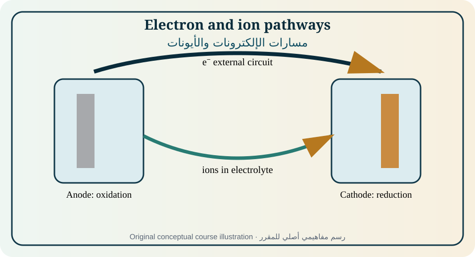
Figure 01. Original educational illustration created for this course from the relationships discussed in [1, Ch. 1, pp. 1–11; 3, Ch. 1; 5, Metal/metal-ion and electrolysis activities; 7]. Conceptual, not measured data.الشكل 01. رسم تعليمي أصلي أُنشئ لهذا المقرر من العلاقات الواردة في [1, Ch. 1, pp. 1–11; 3, Ch. 1; 5, Metal/metal-ion and electrolysis activities; 7]. مفاهيمي وليس بيانات مقاسة.
Electrochemistry studies ionic conductors, charge transfer across interfaces, and systems that generate or consume electric current through chemical change. It joins thermodynamics, kinetics, transport, materials science, analysis, corrosion, energy, and biology. The defining feature is not merely a redox equation but spatial organization of charge-transfer and ion-transport processes. [1,2]
تدرس الكيمياء الكهروكيميائية الموصلات الأيونية وانتقال الشحنة عبر الواجهات والمنظومات التي تولد أو تستهلك التيار بالتغير الكيميائي. وهي تجمع الديناميكا الحرارية والحركية والنقل وعلوم المواد والتحليل والتآكل والطاقة والأحياء. ولا يقتصر تعريفها على معادلة أكسدة واختزال، بل يشمل التنظيم المكاني لانتقال الشحنة والأيونات. [1,2]
Half-reactions and electron balance
أنصاف التفاعلات وموازنة الإلكترونات
Every overall redox reaction can be decomposed into an oxidation half-reaction and a reduction half-reaction. Mass and charge must balance separately; electrons cancel only after the half-reactions are multiplied by suitable integers. In an operating cell, electrons travel through the external electronic path while ions move through the electrolyte or separator.
يمكن تحليل كل تفاعل أكسدة واختزال كلي إلى نصف أكسدة ونصف اختزال. يجب موازنة الكتلة والشحنة منفصلتين، ولا تلغى الإلكترونات إلا بعد ضرب أنصاف التفاعلات بمعاملات مناسبة. في الخلية العاملة تنتقل الإلكترونات عبر المسار الإلكتروني الخارجي بينما تتحرك الأيونات في الإلكتروليت أو الفاصل.
Conductors and charge carriers
الموصلات وحوامل الشحنة
First-kind conductors carry charge mainly by electrons or holes and normally undergo no bulk mass transfer. Second-kind conductors carry current through mobile ions and therefore couple electric transport to material transport. Mixed conductors carry both ionic and electronic current; their partial conductivities and boundary conditions determine device behavior. [1,6]
تنقل موصلات النوع الأول الشحنة أساساً بالإلكترونات أو الفجوات ولا يصاحبها عادة نقل كتلي حجمي. تنقل موصلات النوع الثاني التيار بأيونات متحركة، ولذلك يقترن النقل الكهربائي بالنقل المادي. تحمل الموصلات المختلطة تيارات أيونية وإلكترونية معاً، وتحدد التوصيليات الجزئية وشروط الحدود سلوك الجهاز. [1,6]
Anode, cathode, and polarity
الأنود والكاثود والقطبية
The anode is always the site of oxidation and the cathode always the site of reduction. In a discharging galvanic cell the anode is the negative electrode; in an electrolyzer driven by an external source the anode is positive. Memorizing polarity without first identifying the reaction is a common source of error. [1,3]
الأنود هو دائماً موضع الأكسدة والكاثود هو دائماً موضع الاختزال. في الخلية الجلفانية المفرغة يكون الأنود سالباً، وفي المحلل الكهربائي الذي يدفعه مصدر خارجي يكون الأنود موجباً. ويؤدي حفظ القطبية دون تحديد التفاعل أولاً إلى أخطاء شائعة. [1,3]
Galvanic and electrolytic operation
التشغيل الجلفاني والتحليلي
A galvanic cell converts a spontaneous decrease in Gibbs energy into electrical work. An electrolytic cell applies sufficient electrical work to drive a nonspontaneous reaction. The same physical cell may switch modes during charging and discharging; the reaction direction, current direction, and electrode labels must be updated consistently.
تحول الخلية الجلفانية الانخفاض التلقائي في طاقة غيبس إلى شغل كهربائي. أما الخلية التحليلية فتطبق شغلاً كهربائياً كافياً لدفع تفاعل غير تلقائي. وقد تنتقل الخلية نفسها بين النمطين أثناء الشحن والتفريغ، ولذلك يجب تحديث اتجاه التفاعل والتيار وتسميات الأقطاب باتساق.
Faraday’s law and current efficiency
قانون فاراداي وكفاءة التيار
For one electrode reaction, the theoretical amount transformed is Q/(nF) moles. Real processes divide current among parallel reactions; Faradaic or current efficiency is the fraction of total charge assigned to the desired product. Geometric and true surface areas must not be confused when reporting current density, especially for rough, porous, or particulate electrodes. [1]
في تفاعل قطبي واحد تكون الكمية النظرية المتحولة Q/(nF) مول. في العمليات الواقعية يتوزع التيار بين تفاعلات متوازية، وتمثل الكفاءة الفارادية أو كفاءة التيار جزء الشحنة المخصص للمنتج المرغوب. ويجب عدم الخلط بين المساحة الهندسية والحقيقية عند عرض كثافة التيار، خصوصاً للأقطاب الخشنة أو المسامية أو الجسيمية. [1]
Equations, assumptions, and interpretation · المعادلات والافتراضات والتفسير
Equation · المعادلة
Purpose and limitation · الغرض والحدود
Q = ∫I dt; for constant current Q = It
Electric charge in coulombs; I in amperes and t in seconds.الشحنة الكهربائية بالكولوم؛ I بالأمبير وt بالثانية.
i = I/A
Geometric current density in A·m⁻² or A·cm⁻²; state the area basis.كثافة التيار الهندسية بوحدة A·m⁻² أو A·cm⁻² مع تحديد أساس المساحة.
m = η_F MIt/(nF)
Faraday mass relation with Faradaic efficiency η_F, molar mass M, electron number n, and F=96485 C·mol⁻¹.علاقة كتلة فاراداي مع الكفاءة η_F والكتلة المولية M وعدد الإلكترونات n وثابت فاراداي.
h = η_F MIt/(nFρA)
Average deposit thickness for a uniform compact film of density ρ.متوسط سماكة الترسيب لغشاء متجانس مدمج كثافته ρ.
Fully worked example · مثال محلول بالكامل
Copper is deposited from Cu²⁺+2e⁻→Cu at 2.00 A for 30.0 min with 92.0% current efficiency. Q=3600 C. Theoretical m=(63.546×3600)/(2×96485)=1.185 g; actual m=0.920×1.185=1.09 g. The calculation assumes all recovered copper is metallic and the current is constant.
يُرسب النحاس من Cu²⁺+2e⁻→Cu بتيار 2.00 A لمدة 30.0 دقيقة وكفاءة 92.0%. الشحنة Q=3600 C. الكتلة النظرية 1.185 g والكتلة الفعلية 0.920×1.185=1.09 g. يفترض الحساب أن النحاس المسترجع فلزي وأن التيار ثابت.
Partially guided example · مثال موجه جزئياً
A 0.50 A electrolysis produces H₂ by 2H⁺+2e⁻→H₂ for 45 min at 85% efficiency. Calculate moles and dry-gas volume at 298 K and 1 bar. Identify the safety controls required for hydrogen.
ينتج تحليل كهربائي بتيار 0.50 A غاز H₂ وفق 2H⁺+2e⁻→H₂ لمدة 45 دقيقة وكفاءة 85%. احسب عدد المولات والحجم الجاف عند 298 K و1 bar، وحدد ضوابط سلامة الهيدروجين.
Independent exercises
Foundation: Balance the half-reactions for permanganate reduction in acid coupled to Fe²⁺ oxidation.
Standard: Determine the nickel-plating time for a specified area, thickness, density, current, and efficiency.
Advanced: Use gas and metal-product measurements to partition current between metal deposition and hydrogen evolution.
تمارين مستقلة
تأسيسي: وازن نصفي اختزال البرمنغنات في الوسط الحمضي وأكسدة Fe²⁺.
متقدم: استخدم قياسات الغاز والفلز لتوزيع التيار بين ترسيب المعدن وتطور الهيدروجين.
Practical or analytical activity · نشاط عملي أو تحليلي
Practical activity: construct an activity series from metal/metal-ion displacement observations, then assemble a voltaic cell and an electrolytic cell. Record half-reactions, electron direction, ion migration, polarity, charge, and uncertainty. The uploaded manual provides metal-ion, voltaic-cell, concentration-cell, and water-electrolysis activity structures. [5]
نشاط عملي: أنشئ سلسلة نشاط من ملاحظات إحلال معدن/أيون معدن، ثم ركّب خلية فولتية وخلية تحليلية. سجل أنصاف التفاعلات واتجاه الإلكترونات وهجرة الأيونات والقطبية والشحنة وعدم اليقين. يوفر الدليل المرفق أنشطة لأيونات المعادن والخلايا الفولتية وخلايا التركيز وتحليل الماء. [5]
Modern application and case study · تطبيق حديث ودراسة حالة
Case: A plating line meets thickness specification but consumes 18% more charge than predicted. Separate current-efficiency loss, measurement error, roughness, dissolution after deposition, and nonuniform current distribution before changing the nominal current.
حالة: يحقق خط طلاء السماكة المطلوبة لكنه يستهلك شحنة تزيد 18% عن المتوقع. يجب فصل فقد كفاءة التيار وخطأ القياس والخشونة والذوبان بعد الترسيب وعدم تجانس توزيع التيار قبل تغيير التيار الاسمي.
Common misconception · مفهوم خاطئ شائع
Anode does not mean positive electrode in every mode; it means the electrode at which oxidation occurs.
لا يعني الأنود القطب الموجب في كل نمط؛ بل يعني القطب الذي تحدث عنده الأكسدة.
Chapter summary and student takeaway · ملخص الوحدة وخلاصة الطالب
Electrochemical reactions conserve mass and charge, electrodes are named by reaction, and Faraday’s law links charge to material transformation while current efficiency accounts for parallel reactions.
تحفظ التفاعلات الكهروكيميائية الكتلة والشحنة، وتسمى الأقطاب بحسب التفاعل، ويربط قانون فاراداي الشحنة بتحول المادة بينما تحسب كفاءة التيار التفاعلات المتوازية.
Immediate mastery checkتحقق فوري من الإتقان
Principal sources · المصادر الرئيسة: [1, Ch. 1, pp. 1–11; 3, Ch. 1; 5, Metal/metal-ion and electrolysis activities; 7]. Terminology follows the source context and IUPAC where cited. Models must be used only within their stated assumptions.تتبع المصطلحات سياق المصادر وIUPAC حيث ذُكر. لا تستخدم النماذج إلا ضمن افتراضاتها.
02
MODULE 02 · الوحدة 02
Electrolytes, Solvation, Activities, and Ionic Equilibria
Electrode potentials, transport, and reaction rates depend on the thermodynamic state of ions rather than concentration alone. This module develops the solution chemistry required for quantitative electrochemistry.
Prerequisite knowledge
Chemical equilibrium, logarithms, acid–base chemistry, and molecular interactions.
مبرر الوحدة
تعتمد جهود الأقطاب والنقل وسرعات التفاعل على الحالة الديناميكية الحرارية للأيونات لا على التركيز وحده. تطور هذه الوحدة كيمياء المحاليل اللازمة للكيمياء الكهروكيميائية الكمية.
Explain electrolytic dissociation, ion solvation, ion pairing, and solvent effects.
Calculate ionic strength, mean activity coefficients, activities, and equilibrium expressions.
Distinguish ideal dilute behavior from nonideal concentrated electrolytes.
Predict how complexation, pH, precipitation, and solvent choice alter electrochemical behavior.
مخرجات تعلم الوحدة
شرح التفكك الإلكتروليتي وإذابة الأيونات وتزاوجها وتأثير المذيب.
حساب القوة الأيونية ومعاملات النشاط المتوسطة والأنشطة وتعبيرات الاتزان.
التمييز بين السلوك المثالي المخفف والسلوك غير المثالي للإلكتروليتات المركزة.
التنبؤ بتأثير التعقيد وpH والترسيب واختيار المذيب في السلوك الكهروكيميائي.
Diagnostic pre-check · فحص تشخيصي
For 0.010 M CaCl₂, calculate the concentration of each ion and the ionic strength assuming complete dissociation.
لمحلول CaCl₂ تركيزه 0.010 M احسب تركيز كل أيون والقوة الأيونية بافتراض التفكك الكامل.
An ion in solution is not an isolated point charge. It is solvated, interacts with other ions, and contributes to a nonideal chemical potential. Electrochemical equilibrium equations therefore use thermodynamic activity a=γc/c°, not bare concentration, except under justified dilute approximations. [1–3]
لا يكون الأيون في المحلول شحنة نقطية معزولة، بل يُذاب ويتفاعل مع الأيونات الأخرى ويسهم في كمون كيميائي غير مثالي. لذلك تستخدم معادلات الاتزان الكهروكيميائي النشاط الديناميكي a=γc/c° لا التركيز المجرد إلا عند تبرير التقريب المخفف. [1–3]
Electrolyte composition also sets conductivity, viscosity, dielectric screening, acid–base state, complex formation, precipitation, and the electrochemical window. A solution that gives a favorable Nernst potential may still be unusable because of poor conductivity, solvent breakdown, salt precipitation, or unsafe chemistry.
يحدد تركيب الإلكتروليت أيضاً التوصيلية واللزوجة والحجب العازل وحالة الحمض–القاعدة والتعقيد والترسيب والنافذة الكهروكيميائية. وقد يعطي المحلول جهداً مناسباً وفق نرنست لكنه يفشل بسبب ضعف التوصيل أو تحلل المذيب أو ترسيب الملح أو مخاطر السلامة.
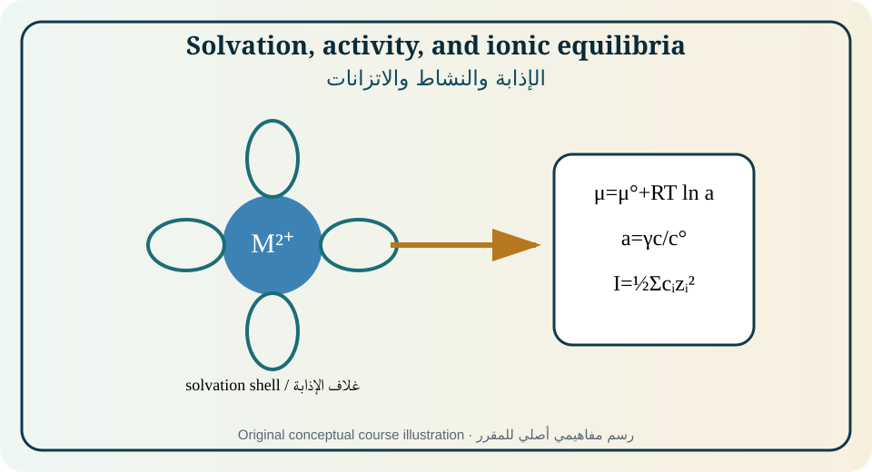
Figure 02. Original educational illustration created for this course from the relationships discussed in [1, Ch. 2, pp. 12–51; 2, Ch. 2; 3, Ch. 3]. Conceptual, not measured data.الشكل 02. رسم تعليمي أصلي أُنشئ لهذا المقرر من العلاقات الواردة في [1, Ch. 2, pp. 12–51; 2, Ch. 2; 3, Ch. 3]. مفاهيمي وليس بيانات مقاسة.
Strong-electrolyte notation does not imply thermodynamic ideality. Stoichiometric concentration determines nominal ion populations, while association, complexation, hydrolysis, and precipitation determine the species actually present. Charge balance and material balance are solved together with equilibrium constants.
لا يعني وصف الإلكتروليت بأنه قوي أنه مثالي ديناميكياً. يحدد التركيز الستوكيومتري أعداد الأيونات الاسمية، بينما يحدد التزاوج والتعقيد والتحلل المائي والترسيب الأنواع الموجودة فعلاً. وتحل موازنة الشحنة والمادة مع ثوابت الاتزان.
Solvation and solvent properties
الإذابة وخصائص المذيب
Ion–dipole interactions form solvation shells and change effective ion size, mobility, transfer free energy, and reaction accessibility. Dielectric permittivity controls electrostatic screening; donor/acceptor properties and viscosity influence salt dissociation, ion pairing, transport, and the stability of oxidized and reduced species. [1]
تكوّن تآثرات الأيون–ثنائي القطب أغلفة إذابة وتغير الحجم الفعال والحركية وطاقة الانتقال وإمكانية التفاعل. تتحكم السماحية في الحجب الكهروستاتيكي، وتؤثر خواص المانح/المستقبل واللزوجة في تفكك الأملاح وتزاوج الأيونات والنقل وثبات الأنواع المؤكسدة والمختزلة. [1]
Chemical and electrochemical potential
الكمون الكيميائي والكهروكيميائي
The chemical potential is the partial molar Gibbs energy. For a charged species in an electric field, the electrochemical potential adds zFφ. At equilibrium the electrochemical potential of each transferable species is uniform across accessible phases, subject to constraints and interfacial reactions. [1,3]
الكمون الكيميائي هو طاقة غيبس المولية الجزئية. للنوع المشحون في مجال كهربائي يضاف الحد zFφ إلى الكمون الكهروكيميائي. عند الاتزان يتساوى الكمون الكهروكيميائي لكل نوع قابل للانتقال بين الأطوار المتاحة مع مراعاة القيود والتفاعلات البينية. [1,3]
Activity and standard states
النشاط والحالات القياسية
Activity makes the logarithm in the chemical-potential equation dimensionless. The chosen standard state must be stated; molality and amount-concentration conventions give different numerical activity coefficients. Single-ion activities are not directly measurable in ordinary bulk thermodynamics, so mean ionic quantities are used for electrolytes.
يجعل النشاط لوغاريتم معادلة الكمون الكيميائي بلا أبعاد. ويجب تحديد الحالة القياسية؛ إذ تعطي اصطلاحات المولالية وتركيز المادة معاملات نشاط عددية مختلفة. لا يمكن قياس نشاط أيون منفرد مباشرة في الديناميكا الحرارية الحجمية العادية، ولذلك تستخدم الكميات الأيونية المتوسطة للإلكتروليتات.
Ionic strength and Debye–Hückel theory
القوة الأيونية ونظرية ديباي–هوكل
Ionic strength weights each concentration by z², so multivalent ions strongly affect nonideality. The Debye–Hückel limiting law describes very dilute solutions where long-range electrostatic interactions dominate. Extended forms include ion-size terms but remain approximations and should not be extrapolated blindly to concentrated battery electrolytes. [1]
تزن القوة الأيونية كل تركيز بمربع الشحنة z²، ولذلك تؤثر الأيونات متعددة التكافؤ بقوة في عدم المثالية. يصف قانون ديباي–هوكل الحدي المحاليل شديدة التخفيف حيث تسود التآثرات الكهروستاتيكية بعيدة المدى. تضيف الصيغ الممتدة حدود حجم الأيون لكنها تبقى تقريبية ولا يجوز استقراؤها عشوائياً إلى إلكتروليتات البطاريات المركزة. [1]
Coupled equilibria and electrochemical windows
الاتزانات المقترنة والنوافذ الكهروكيميائية
Acid–base, complexation, adsorption, and precipitation equilibria change free-ion activity and therefore potential, transport, and kinetic response. The practical electrochemical window is set not only by thermodynamic solvent limits but also by electrode material, impurities, water content, overpotential, temperature, and measurement sensitivity.
تغير اتزانات الحمض–القاعدة والتعقيد والامتزاز والترسيب نشاط الأيون الحر، ومن ثم الجهد والنقل والاستجابة الحركية. ولا تحدد النافذة الكهروكيميائية العملية حدود المذيب الديناميكية فقط، بل تتأثر بمادة القطب والشوائب ومحتوى الماء وفرط الجهد والحرارة وحساسية القياس.
Equations, assumptions, and interpretation · المعادلات والافتراضات والتفسير
Equation · المعادلة
Purpose and limitation · الغرض والحدود
μ_i = μ_i° + RT ln a_i
Chemical potential; activity is dimensionless relative to a stated standard state.الكمون الكيميائي؛ النشاط بلا أبعاد نسبة إلى حالة قياسية محددة.
μ̃_i = μ_i + z_iFφ
Electrochemical potential of species i in a phase of inner potential φ.الكمون الكهروكيميائي للنوع i في طور جهده الداخلي φ.
I = ½Σc_i z_i²
Ionic strength for concentration-based convention.القوة الأيونية وفق اصطلاح التركيز.
log₁₀γ_i ≈ −A z_i²√I
Debye–Hückel limiting law; valid only at low ionic strength.قانون ديباي–هوكل الحدي؛ صالح عند قوة أيونية منخفضة فقط.
Fully worked example · مثال محلول بالكامل
For 0.0100 M CaCl₂, I=½[(0.0100)(2²)+(0.0200)(1²)]=0.0300 M. Using A=0.509 at 25°C as a dilute aqueous approximation, logγ(Ca²⁺)=−0.509×4×√0.0300=−0.353, so γ≈0.444. This limiting-law estimate is illustrative; 0.03 M is already near the range where extended models are preferable.
لمحلول CaCl₂ تركيزه 0.0100 M تكون I=½[(0.0100)(2²)+(0.0200)(1²)]=0.0300 M. باستخدام A=0.509 عند 25°C كتقريب مائي مخفف نحصل على logγ(Ca²⁺)=−0.353 ومن ثم γ≈0.444. هذا تقدير تعليمي، إذ إن 0.03 M قريب من مجال الحاجة إلى نماذج ممتدة.
Partially guided example · مثال موجه جزئياً
A redox couple uses a doubly charged oxidized species and a neutral reduced species. Compare the Nernst potential calculated from concentration with that calculated from activity when γ_ox=0.60.
يستخدم زوج أكسدة واختزال نوعاً مؤكسداً ثنائي الشحنة ونوعاً مختزلاً متعادلاً. قارن جهد نرنست المحسوب من التركيز مع المحسوب من النشاط عندما γ_ox=0.60.
Independent exercises
Foundation: Compute ionic strength for a mixed NaCl/MgCl₂ solution.
Standard: Construct charge and mass balances for a metal–ligand complexation system.
Advanced: Evaluate how water contamination changes speciation and the practical window of a nominally nonaqueous electrolyte.
متقدم: قيّم كيف يغير تلوث الماء التوزيع النوعي والنافذة العملية لإلكتروليت غير مائي اسماً.
Practical or analytical activity · نشاط عملي أو تحليلي
Computational activity: create a speciation spreadsheet for a weak acid and a metal–ligand equilibrium. Plot free-ion fraction and predicted Nernst potential versus pH; label all equilibrium constants and activity assumptions.
نشاط حاسوبي: أنشئ جدول توزيع نوعي لحمض ضعيف واتزان معدن–ربيطة. ارسم كسر الأيون الحر وجهد نرنست المتوقع مقابل pH، وحدد ثوابت الاتزان وافتراضات النشاط.
Modern application and case study · تطبيق حديث ودراسة حالة
Case: A battery electrolyte has high salt concentration to improve ion inventory, but viscosity and ion pairing increase. Explain why concentration, conductivity, and electrochemical stability do not necessarily improve together.
حالة: يحتوي إلكتروليت بطارية على تركيز ملح مرتفع لزيادة مخزون الأيونات، لكن اللزوجة وتزاوج الأيونات يزدادان. فسر لماذا لا تتحسن التوصيلية والاستقرار الكهروكيميائي بالضرورة مع التركيز.
Common misconception · مفهوم خاطئ شائع
Concentration and activity are not interchangeable outside a justified ideal-dilute approximation.
لا يمكن استبدال التركيز بالنشاط خارج تقريب مثالي مخفف مبرر.
Chapter summary and student takeaway · ملخص الوحدة وخلاصة الطالب
Solution electrochemistry requires species balances, solvation, activity, ionic strength, and coupled equilibria; concentration alone is an incomplete thermodynamic descriptor.
تتطلب كيمياء المحاليل الكهروكيميائية موازنات الأنواع والإذابة والنشاط والقوة الأيونية والاتزانات المقترنة؛ فالتركيز وحده وصف ديناميكي غير كامل.
Immediate mastery checkتحقق فوري من الإتقان
Principal sources · المصادر الرئيسة: [1, Ch. 2, pp. 12–51; 2, Ch. 2; 3, Ch. 3]. Terminology follows the source context and IUPAC where cited. Models must be used only within their stated assumptions.تتبع المصطلحات سياق المصادر وIUPAC حيث ذُكر. لا تستخدم النماذج إلا ضمن افتراضاتها.
03
MODULE 03 · الوحدة 03
Ionic Transport, Conductivity, Diffusion, and Migration
النقل الأيوني والتوصيلية والانتشار والهجرة
11 h[1, Ch. 3, pp. 52–80; 2, Sec. 2.8–2.11 and Ch. 5; 3, Ch. 4; 6, Chs. 1 and 3]
Rationale
Current inside an electrolyte is a coupled transport process. This module builds the flux equations needed for conductivity, concentration polarization, junction potentials, rotating electrodes, membranes, batteries, and solid electrolytes.
Prerequisite knowledge
Modules 1–2, derivatives, gradients, and elementary diffusion.
مبرر الوحدة
يمثل التيار داخل الإلكتروليت عملية نقل مقترنة. تبني هذه الوحدة معادلات الفيض اللازمة للتوصيلية واستقطاب التركيز وجهود الوصلات والأقطاب الدوارة والأغشية والبطاريات والإلكتروليتات الصلبة.
المعرفة السابقة
الوحدتان 1–2 والمشتقات والتدرجات ومبادئ الانتشار.
Module learning outcomes
Resolve ionic flux into diffusion, migration, and convection.
Relate conductivity to mobility, concentration, and transport numbers.
Apply Nernst–Einstein and Nernst–Planck relationships with stated assumptions.
Explain concentration polarization, supporting-electrolyte action, and liquid-junction potentials.
مخرجات تعلم الوحدة
تحليل الفيض الأيوني إلى انتشار وهجرة وحمل.
ربط التوصيلية بالحركية والتركيز وأعداد النقل.
تطبيق علاقات نرنست–أينشتاين ونرنست–بلانك مع بيان الافتراضات.
شرح استقطاب التركيز ودور الإلكتروليت الداعم وجهود الوصلة السائلة.
Diagnostic pre-check · فحص تشخيصي
A cation has a concentration gradient toward an electrode and an electric field pointing away from it. State whether diffusion and migration reinforce or oppose one another.
لكاتيون تدرج تركيز نحو القطب ومجال كهربائي بعيداً عنه. بيّن هل يعزز الانتشار والهجرة أحدهما الآخر أم يتعاكسان.
Species reach electrodes by diffusion down chemical-potential gradients, migration in electric fields, and convection with bulk fluid motion. The Nernst–Planck framework combines these contributions and becomes the basis for transport-limited current and concentration polarization. [1–3]
تصل الأنواع إلى الأقطاب بالانتشار مع تدرجات الكمون الكيميائي والهجرة في المجالات الكهربائية والحمل مع حركة السائل. يجمع إطار نرنست–بلانك هذه المساهمات ويشكل أساس التيار المحدود بالنقل واستقطاب التركيز. [1–3]
Conductivity is a collective response, not simply the concentration of ions. Mobility, charge, solvation, viscosity, association, temperature, and correlations determine how efficiently ions carry current. Transport numbers describe the fraction of current carried by each species under specified conditions.
التوصيلية استجابة جماعية وليست مجرد تركيز الأيونات. تحدد الحركية والشحنة والإذابة واللزوجة والتزاوج والحرارة والارتباطات كفاءة حمل التيار. وتصف أعداد النقل جزء التيار الذي يحمله كل نوع في ظروف محددة.
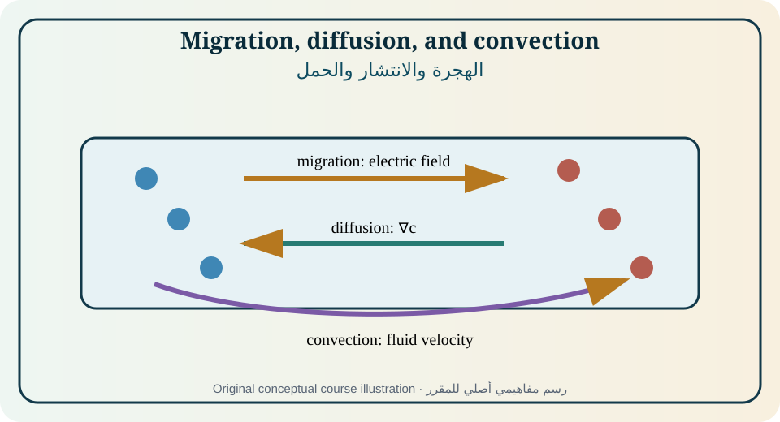
Figure 03. Original educational illustration created for this course from the relationships discussed in [1, Ch. 3, pp. 52–80; 2, Sec. 2.8–2.11 and Ch. 5; 3, Ch. 4; 6, Chs. 1 and 3]. Conceptual, not measured data.الشكل 03. رسم تعليمي أصلي أُنشئ لهذا المقرر من العلاقات الواردة في [1, Ch. 3, pp. 52–80; 2, Sec. 2.8–2.11 and Ch. 5; 3, Ch. 4; 6, Chs. 1 and 3]. مفاهيمي وليس بيانات مقاسة.
Diffusion is net molecular transport driven by a chemical-potential or concentration gradient. Fick’s first law describes steady flux; the second law describes transient concentration evolution. Boundary and initial conditions, geometry, and reactions determine the solution, so one diffusion coefficient does not imply one universal current–time equation.
الانتشار هو النقل الجزيئي الصافي المدفوع بتدرج الكمون الكيميائي أو التركيز. يصف قانون فيك الأول الفيض المستقر، والثاني تطور التركيز العابر. تحدد شروط البداية والحدود والهندسة والتفاعلات الحل، ولذلك لا يؤدي معامل انتشار واحد إلى معادلة تيار–زمن عامة.
Migration
الهجرة
Migration is motion of charged species in an electric field. The field can accelerate counterions toward one electrode and co-ions away from it. In electroanalysis a large excess of inert supporting electrolyte reduces the field experienced by the dilute analyte and suppresses analyte migration, but it also changes activity and double-layer structure.
الهجرة حركة الأنواع المشحونة في المجال الكهربائي. يمكن للمجال دفع الأيونات المضادة نحو قطب وإبعاد الأيونات المماثلة. في التحليل الكهروكيميائي يقلل فائض إلكتروليت داعم خامل المجال المؤثر في المادة المحللة ويثبط هجرتها، لكنه يغير أيضاً النشاط وبنية الطبقة المزدوجة.
Convection
الحمل
Natural convection arises from density or temperature gradients; forced convection arises from stirring, flow, rotation, or gas evolution. Convection changes the diffusion-layer thickness and therefore limiting current. Reproducible hydrodynamics are essential when current is used to infer concentration or kinetic constants.
ينشأ الحمل الطبيعي من تدرجات الكثافة أو الحرارة، وينشأ الحمل القسري من التحريك أو الجريان أو الدوران أو تطور الغاز. يغير الحمل سماكة طبقة الانتشار ومن ثم التيار الحدي. وتعد هيدروديناميكا قابلة للتكرار ضرورية عند استخدام التيار لاستنتاج التركيز أو ثوابت الحركية.
Conductivity and mobility
التوصيلية والحركية
Electrical conductivity sums the contributions of mobile charge carriers. At low concentration, molar conductivity often increases on dilution because interionic relaxation and electrophoretic effects weaken. At high concentration, ion pairing, correlations, viscosity, and structural effects require more complete models. [1]
تجمع التوصيلية الكهربائية مساهمات حوامل الشحنة المتحركة. عند التركيز المنخفض تزداد التوصيلية المولية غالباً بالتخفيف لأن تأثيرات الاسترخاء الكهربي والحركة الرحلانية تضعف. وعند التركيز العالي تتطلب تزاوجات الأيونات والارتباطات واللزوجة والبنية نماذج أكمل. [1]
Transport numbers
أعداد النقل
The transport number t_i is the fraction of total current carried by species i under defined gradients and reference frame. The sum is one. Transference is especially important in concentration cells, electrodialysis, battery electrolytes, and membrane systems because unequal ion motion creates composition gradients.
عدد النقل t_i هو جزء التيار الكلي الذي يحمله النوع i تحت تدرجات وإطار مرجعي محددين، ومجموعه يساوي واحداً. وتبرز أهميته في خلايا التركيز والتحليل الغشائي وإلكتروليتات البطاريات والأغشية لأن اختلاف حركة الأيونات يولد تدرجات تركيبية.
Junction potentials and concentration polarization
جهود الوصلات واستقطاب التركيز
When ions of different mobility diffuse across a liquid junction, charge separation creates an electric field that slows the faster ion and accelerates the slower one. Under current, unequal transport depletes or enriches species near interfaces, causing concentration overpotential and possibly salt exhaustion.
عندما تنتشر أيونات مختلفة الحركية عبر وصلة سائلة ينشأ مجال كهربائي من فصل الشحنة يبطئ الأيون الأسرع ويسرع الأبطأ. وتحت التيار يؤدي اختلاف النقل إلى استنزاف الأنواع أو إثرائها قرب الواجهات، مسبباً فرط جهد تركيزي وقد يؤدي إلى نفاد الملح.
All electrolytes carry ionic current, but the microscopic mechanism differs: vehicular motion in liquids, segmental-motion-coupled transport in many polymers, vacancy or interstitial hopping in crystals, and correlated motion in superionic conductors. The same macroscopic flux laws can apply with different parameters and boundary conditions. [1,6]
تحمل جميع الإلكتروليتات تياراً أيونياً، لكن الآلية المجهرية تختلف: حركة حاملة في السوائل، ونقل مقترن بحركة السلاسل في بوليمرات كثيرة، وقفز فجوات أو ذرات بينية في البلورات، وحركة مترابطة في الموصلات فائقة الأيونية. يمكن تطبيق قوانين الفيض العيانية نفسها بمعلمات وشروط حدود مختلفة. [1,6]
Equations, assumptions, and interpretation · المعادلات والافتراضات والتفسير
Equation · المعادلة
Purpose and limitation · الغرض والحدود
J_i = −D_i∇c_i − (z_iF D_i/RT)c_i∇φ + c_i v
Nernst–Planck flux: diffusion, migration, and convection in an ideal dilute form.فيض نرنست–بلانك: انتشار وهجرة وحمل بصيغة مثالية مخففة.
i = FΣz_iJ_i
Current density from species fluxes.كثافة التيار من فيوض الأنواع.
κ = FΣ|z_i|u_i c_i
Conductivity expressed through ionic mobilities u_i in a dilute approximation.التوصيلية بدلالة حركيات الأيونات u_i في تقريب مخفف.
u_i = |z_i|F D_i/(RT)
Nernst–Einstein relation under ideal dilute, uncorrelated motion.علاقة نرنست–أينشتاين عند حركة مثالية مخففة غير مترابطة.
t_i = |z_i|u_i c_i / Σ|z_j|u_j c_j
Transport number in a simple dilute system.عدد النقل في نظام مخفف بسيط.
Fully worked example · مثال محلول بالكامل
A 1:1 electrolyte has c+=c−=0.010 mol·L⁻¹, u+=5.2×10⁻⁸ and u−=7.9×10⁻⁸ m²·V⁻¹·s⁻¹. In the dilute approximation, t+=5.2/(5.2+7.9)=0.397 and t−=0.603. More current is carried by the anion, so concentration changes at interfaces will not be symmetric.
لإلكتروليت 1:1 حيث c+=c−=0.010 mol·L⁻¹ وu+=5.2×10⁻⁸ وu−=7.9×10⁻⁸ m²·V⁻¹·s⁻¹، يكون t+=0.397 وt−=0.603 في التقريب المخفف. يحمل الأنيون تياراً أكبر، ولذلك لن تكون تغيرات التركيز عند الواجهات متناظرة.
Partially guided example · مثال موجه جزئياً
Use the Nernst–Einstein relation to estimate D for a monovalent ion with mobility 6.0×10⁻⁸ m²·V⁻¹·s⁻¹ at 298 K. State why the estimate may fail in a concentrated electrolyte.
استخدم علاقة نرنست–أينشتاين لتقدير D لأيون أحادي الشحنة حركيته 6.0×10⁻⁸ m²·V⁻¹·s⁻¹ عند 298 K، وبيّن سبب فشل التقدير في إلكتروليت مركز.
Independent exercises
Foundation: Determine transport numbers from two ionic mobilities.
Standard: Calculate conductivity and cell resistance from geometry and κ.
Advanced: Formulate one-dimensional Nernst–Planck boundary conditions for a cation-selective membrane under current.
تمارين مستقلة
تأسيسي: احسب أعداد النقل من حركيتي أيونين.
قياسي: احسب التوصيلية ومقاومة الخلية من الهندسة وκ.
متقدم: صغ شروط حدود نرنست–بلانك أحادية البعد لغشاء انتقائي للكاتيون تحت تيار.
Practical or analytical activity · نشاط عملي أو تحليلي
Laboratory: measure conductivity versus concentration for a strong electrolyte and a weak electrolyte at controlled temperature. Calibrate the cell constant, report uncertainty, distinguish conductivity from molar conductivity, and discuss dilution trends.
مختبر: قس التوصيلية مقابل التركيز لإلكتروليت قوي وآخر ضعيف مع ضبط الحرارة. عاير ثابت الخلية، واعرض عدم اليقين، وميّز التوصيلية عن التوصيلية المولية، وناقش اتجاهات التخفيف.
Modern application and case study · تطبيق حديث ودراسة حالة
Case: A high-current battery develops a salt-concentration gradient through a thick porous electrode. Explain how low cation transference and tortuosity raise concentration overpotential and limit usable power.
حالة: تطور بطارية عالية التيار تدرجاً في تركيز الملح عبر قطب مسامي سميك. فسر كيف يرفع انخفاض عدد نقل الكاتيون والتعرج فرط الجهد التركيزي ويحد القدرة القابلة للاستخدام.
Common misconception · مفهوم خاطئ شائع
High ion concentration does not guarantee high conductivity; mobility, association, and viscosity can dominate.
لا يضمن التركيز الأيوني العالي توصيلية عالية؛ فقد تهيمن الحركية والتزاوج واللزوجة.
Chapter summary and student takeaway · ملخص الوحدة وخلاصة الطالب
Electrolyte current emerges from species fluxes driven by chemical, electrical, and hydrodynamic forces; transport numbers and boundary conditions control concentration polarization.
ينشأ تيار الإلكتروليت من فيوض الأنواع المدفوعة بقوى كيميائية وكهربائية وهيدروديناميكية؛ وتتحكم أعداد النقل وشروط الحدود في استقطاب التركيز.
Immediate mastery checkتحقق فوري من الإتقان
Principal sources · المصادر الرئيسة: [1, Ch. 3, pp. 52–80; 2, Sec. 2.8–2.11 and Ch. 5; 3, Ch. 4; 6, Chs. 1 and 3]. Terminology follows the source context and IUPAC where cited. Models must be used only within their stated assumptions.تتبع المصطلحات سياق المصادر وIUPAC حيث ذُكر. لا تستخدم النماذج إلا ضمن افتراضاتها.
04
MODULE 04 · الوحدة 04
Electrode Potentials, Nernst Equation, and Cell Thermodynamics
11 h[1, Ch. 4, pp. 81–113; 2, Ch. 2, pp. 13–38; 3, Chs. 2–3; 7]
Rationale
Electrode potentials connect interfacial equilibrium to measurable cell voltage and Gibbs energy. Correct interpretation requires reference conventions, activities, cell notation, and a clear distinction between equilibrium and operating voltage.
Prerequisite knowledge
Modules 1–3, thermodynamics, equilibrium constants, and logarithms.
مبرر الوحدة
تربط جهود الأقطاب الاتزان البيني بجهد الخلية المقاس وطاقة غيبس. يتطلب التفسير الصحيح اصطلاحات المرجع والأنشطة وترميز الخلايا وتمييزاً واضحاً بين جهد الاتزان وجهد التشغيل.
Explain inner, outer, Galvani, and measurable electrode-potential concepts.
Derive and apply Nernst equations for half-cells, cells, gases, and concentration cells.
Relate cell potential to Gibbs energy, equilibrium constant, and reaction direction.
Write and interpret line notation and identify activity, junction, and reference assumptions.
مخرجات تعلم الوحدة
شرح مفاهيم الجهد الداخلي والخارجي وجهد غلفاني وجهد القطب القابل للقياس.
اشتقاق وتطبيق معادلات نرنست لأنصاف الخلايا والخلايا والغازات وخلايا التركيز.
ربط جهد الخلية بطاقة غيبس وثابت الاتزان واتجاه التفاعل.
كتابة وتفسير الترميز الخطي وتحديد افتراضات النشاط والوصلة والمرجع.
Diagnostic pre-check · فحص تشخيصي
Using standard reduction potentials, predict the sign of E_cell for Zn|Zn²⁺||Cu²⁺|Cu when written with zinc on the left.
باستخدام جهود الاختزال القياسية توقع إشارة E_cell للخلية Zn|Zn²⁺||Cu²⁺|Cu عندما يكتب الزنك يساراً.
An individual inner potential cannot be measured without introducing another interface. Practical electrochemistry therefore measures potential differences between an electrode of interest and a reference electrode, or the potential difference of a complete cell. The standard hydrogen electrode defines the conventional zero of the standard electrode-potential scale. [1–3,7]
لا يمكن قياس جهد داخلي منفرد دون إدخال واجهة أخرى. لذلك تقيس الكيمياء الكهروكيميائية فرق الجهد بين قطب الدراسة وقطب مرجعي أو فرق جهد خلية كاملة. ويعرّف قطب الهيدروجين القياسي الصفر الاصطلاحي لمقياس جهود الأقطاب القياسية. [1–3,7]
The Nernst equation expresses equilibrium potential as a standard term plus a logarithmic activity term. It is not a kinetic equation and cannot predict current or rate. Under load, activation, concentration, and ohmic losses displace the measured cell voltage from the reversible value.
تعبر معادلة نرنست عن جهد الاتزان بحد قياسي وحد لوغاريتمي للنشاط. وهي ليست معادلة حركية ولا تتنبأ بالتيار أو السرعة. تحت الحمل تبعد خسائر التنشيط والتركيز والمقاومة جهد الخلية المقاس عن القيمة العكوسة.
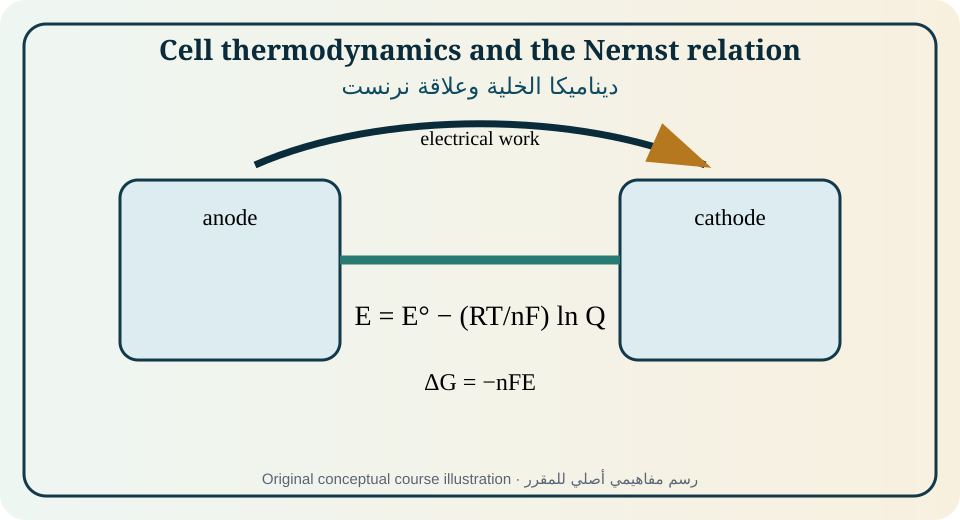
Figure 04. Original educational illustration created for this course from the relationships discussed in [1, Ch. 4, pp. 81–113; 2, Ch. 2, pp. 13–38; 3, Chs. 2–3; 7]. Conceptual, not measured data.الشكل 04. رسم تعليمي أصلي أُنشئ لهذا المقرر من العلاقات الواردة في [1, Ch. 4, pp. 81–113; 2, Ch. 2, pp. 13–38; 3, Chs. 2–3; 7]. مفاهيمي وليس بيانات مقاسة.
The Galvani potential is an inner-potential difference between phases and cannot be isolated by a direct voltmeter measurement. Electrode potential is operationally defined relative to a reference through a complete electrochemical cell. Reports must state reference electrode, temperature, composition, and whether values have been converted to another scale. [1,7]
جهد غلفاني فرق جهد داخلي بين طورين ولا يمكن عزله بقياس مباشر بفولتميتر. يُعرّف جهد القطب عملياً نسبة إلى مرجع عبر خلية كهروكيميائية كاملة. يجب أن تذكر التقارير القطب المرجعي والحرارة والتركيب وأي تحويل إلى مقياس آخر. [1,7]
Electrode equilibrium
اتزان القطب
For Ox+ne⁻⇌Red, equilibrium requires equal electrochemical potentials across the reaction coordinate and zero net current, although forward and reverse exchange continue microscopically. The equilibrium potential changes when activities, gas pressure, temperature, or coupled equilibria change.
في التفاعل Ox+ne⁻⇌Red يتطلب الاتزان تساوي الكمونات الكهروكيميائية على مسار التفاعل وصفر التيار الصافي رغم استمرار التبادل المجهري في الاتجاهين. يتغير جهد الاتزان بتغير الأنشطة وضغط الغاز والحرارة والاتزانات المقترنة.
Standard electrode potential
جهد القطب القياسي
E° is the electrode potential under a defined standard state relative to the standard hydrogen electrode. It is a thermodynamic property of a specified half-reaction convention, not a universal ranking independent of solvent, temperature, activity convention, complexation, or phase.
E° هو جهد القطب في حالة قياسية محددة نسبة إلى قطب الهيدروجين القياسي. وهو خاصية ديناميكية لنصف تفاعل محدد، وليس ترتيباً عاماً مستقلاً عن المذيب والحرارة واصطلاح النشاط والتعقيد والطور.
Nernst equation
معادلة نرنست
For a reduction half-reaction, potential becomes more positive when oxidized-species activity increases relative to reduced-species activity. The reaction quotient must match the written reaction and electron stoichiometry. Pure solids and liquids have unit activity only when they are present as pure phases under the chosen standard state. [1–3]
في نصف تفاعل اختزال يصبح الجهد أكثر إيجابية عندما يزداد نشاط النوع المؤكسد نسبة إلى المختزل. يجب أن يتوافق حاصل التفاعل مع المعادلة المكتوبة وعدد الإلكترونات. يكون نشاط المواد الصلبة والسوائل النقية واحداً فقط عندما تكون أطواراً نقية في الحالة القياسية المختارة. [1–3]
Cell notation and emf
ترميز الخلية والقوة الدافعة
Line notation begins and ends with electron conductors, uses single bars for phase boundaries, and indicates liquid junctions or separators explicitly. Under the common right-minus-left convention, E_cell=E_right−E_left. A positive reversible cell potential corresponds to a spontaneous reaction as written when the cell discharges reversibly. [7]
يبدأ الترميز الخطي وينتهي بموصلات إلكترونية، ويستخدم خطاً مفرداً لحدود الأطوار ويبين الوصلات السائلة أو الفواصل صراحة. وفق اصطلاح اليمين ناقص اليسار يكون E_cell=E_right−E_left. ويقابل جهد خلية عكوس موجب تفاعلاً تلقائياً كما كُتب عند التفريغ العكوس. [7]
Gibbs energy and equilibrium constant
طاقة غيبس وثابت الاتزان
Maximum non-expansion electrical work is linked to ΔG=−nFE_rev. At standard conditions ΔG°=−nFE° and ΔG°=−RTlnK, so lnK=nFE°/RT. These equalities are reversible thermodynamic relations; actual energy efficiency is lower when entropy, overpotential, ohmic loss, mixing, and side reactions matter.
يرتبط الشغل الكهربائي الأقصى غير الحجمي بالعلاقة ΔG=−nFE_rev. في الظروف القياسية ΔG°=−nFE° وΔG°=−RTlnK، ومن ثم lnK=nFE°/RT. هذه علاقات ديناميكية عكوسة؛ وتنخفض كفاءة الطاقة الفعلية عند تأثير الإنتروبيا وفرط الجهد والفقد الأومي والخلط والتفاعلات الجانبية.
Concentration cells
خلايا التركيز
A concentration cell uses the same redox couple at different activities. The voltage is generated by the chemical-potential difference and vanishes when activities equalize. Liquid-junction potentials and transport numbers may contribute unless the cell is designed or corrected to isolate the desired term. [1,5]
تستخدم خلية التركيز زوج الأكسدة والاختزال نفسه عند نشاطين مختلفين. ينشأ الجهد من فرق الكمون الكيميائي ويزول عند تساوي النشاطين. وقد تسهم جهود الوصلة وأعداد النقل ما لم تصمم الخلية أو تصحح لعزل الحد المطلوب. [1,5]
Equations, assumptions, and interpretation · المعادلات والافتراضات والتفسير
Equation · المعادلة
Purpose and limitation · الغرض والحدود
E = E° − (RT/nF)ln Q_r
Nernst equation for the reaction quotient Q_r of the written reduction or cell reaction.معادلة نرنست لحاصل التفاعل Q_r للتفاعل المكتوب.
E_cell = E_right − E_left
Cell-potential convention for line notation; state the convention.اصطلاح جهد الخلية في الترميز الخطي مع بيان الاصطلاح.
ΔG = −nFE_rev
Reversible Gibbs-energy relation at constant T and p.علاقة طاقة غيبس العكوسة عند ثبوت T وp.
ln K = nFE°/(RT)
Equilibrium constant from standard cell potential.ثابت الاتزان من جهد الخلية القياسي.
E_conc = (RT/nF)ln(a_high/a_low)
Ideal concentration-cell potential without additional junction terms.جهد خلية التركيز المثالي دون حدود وصلة إضافية.
Fully worked example · مثال محلول بالكامل
For Zn|Zn²⁺(0.010 M)||Cu²⁺(1.00 M)|Cu at 298 K, E°=0.340−(−0.763)=1.103 V. The cell reaction is Zn+Cu²⁺→Zn²⁺+Cu, Q≈0.010/1.00=0.010. E=1.103−(0.025693/2)ln(0.010)=1.162 V. Diluting Zn²⁺ strengthens the driving force for zinc oxidation, increasing cell voltage.
للخلية Zn|Zn²⁺(0.010 M)||Cu²⁺(1.00 M)|Cu عند 298 K يكون E°=1.103 V. التفاعل Zn+Cu²⁺→Zn²⁺+Cu وحاصل التفاعل Q≈0.010. إذن E=1.162 V. يؤدي تخفيف Zn²⁺ إلى زيادة دافع أكسدة الزنك ورفع جهد الخلية.
Partially guided example · مثال موجه جزئياً
Calculate the voltage of an Ag/Ag⁺ concentration cell with activities 1.0 and 1.0×10⁻³ at 298 K. State the direction of electron flow and the role of the salt bridge.
احسب جهد خلية تركيز Ag/Ag⁺ بنشاطين 1.0 و1.0×10⁻³ عند 298 K، وحدد اتجاه الإلكترونات ودور الجسر الملحي.
Independent exercises
Foundation: Write line notation and calculate E° for a given pair of half-reactions.
Standard: Calculate pH from a hydrogen electrode potential at known gas pressure.
Advanced: Include activity coefficients and a stated liquid-junction correction in a concentration-cell calculation.
تمارين مستقلة
تأسيسي: اكتب الترميز الخطي واحسب E° لزوج من أنصاف التفاعلات.
قياسي: احسب pH من جهد قطب هيدروجين عند ضغط غاز معلوم.
متقدم: أدخل معاملات النشاط وتصحيح وصلة محدداً في حساب خلية تركيز.
Practical or analytical activity · نشاط عملي أو تحليلي
Laboratory: build silver and copper concentration cells using the structure in the uploaded manual. Measure voltage versus log activity ratio, fit the slope, compare with RT/nF, reverse the cell, and quantify junction and meter-loading limitations. [5]
مختبر: أنشئ خلايا تركيز للفضة والنحاس وفق بنية الدليل المرفق. قس الجهد مقابل لوغاريتم نسبة النشاط، ولائم الميل وقارنه بـRT/nF، واعكس الخلية، وكمّم قيود الوصلة وتحميل جهاز القياس. [5]
Modern application and case study · تطبيق حديث ودراسة حالة
Case: A sensor shows the correct Nernst slope but a constant 35 mV offset. Diagnose reference potential, junction potential, standard-state calibration, temperature, and wiring before altering the sensing membrane.
حالة: يظهر مستشعر ميل نرنست الصحيح مع انحراف ثابت 35 mV. شخّص جهد المرجع وجهد الوصلة ومعايرة الحالة القياسية والحرارة والتوصيل قبل تعديل غشاء الاستشعار.
Common misconception · مفهوم خاطئ شائع
The Nernst equation predicts equilibrium potential, not current, power, or reaction speed.
تتنبأ معادلة نرنست بجهد الاتزان لا بالتيار أو القدرة أو سرعة التفاعل.
Chapter summary and student takeaway · ملخص الوحدة وخلاصة الطالب
Measurable electrochemical potentials are reference-dependent cell differences; Nernst links equilibrium potential to activity, while ΔG and K connect voltage to thermodynamic driving force.
الجهود الكهروكيميائية القابلة للقياس فروق خلوية تعتمد على المرجع؛ تربط نرنست جهد الاتزان بالنشاط، وتربط ΔG وK الجهد بالدافع الديناميكي.
Immediate mastery checkتحقق فوري من الإتقان
Principal sources · المصادر الرئيسة: [1, Ch. 4, pp. 81–113; 2, Ch. 2, pp. 13–38; 3, Chs. 2–3; 7]. Terminology follows the source context and IUPAC where cited. Models must be used only within their stated assumptions.تتبع المصطلحات سياق المصادر وIUPAC حيث ذُكر. لا تستخدم النماذج إلا ضمن افتراضاتها.
05
MODULE 05 · الوحدة 05
Electrodes, Reference Systems, Potentiometry, and Sensors
9 h[1, Sec. 4.6–4.15; 2, Chs. 2 and 13; 3, Secs. 1.5–1.6 and 3.4; 6, Ch. 13; 7]
Rationale
Reliable potential measurement depends on electrode function, reference stability, junction design, and calibration. This module connects electrode classifications to practical potentiometry and electrochemical sensing.
Prerequisite knowledge
Module 4 and acid–base/complexation equilibria.
مبرر الوحدة
يعتمد قياس الجهد الموثوق على وظيفة القطب وثبات المرجع وتصميم الوصلة والمعايرة. تربط هذه الوحدة تصنيفات الأقطاب بالقياس الجهدي والاستشعار الكهروكيميائي عملياً.
المعرفة السابقة
الوحدة 4 واتزانات الحمض–القاعدة والتعقيد.
Module learning outcomes
Classify metal, gas, redox, membrane, ion-selective, and solid-state electrodes.
Select, use, and convert common reference electrodes.
Design potentiometric measurements and calibrations with uncertainty controls.
Explain glass, membrane, and solid-electrolyte sensor response and interference.
اختيار الأقطاب المرجعية الشائعة واستخدامها وتحويل مقاييسها.
تصميم قياسات ومعايرات جهدية مع ضوابط عدم اليقين.
شرح استجابة مستشعرات الزجاج والغشاء والإلكتروليت الصلب والتداخلات.
Diagnostic pre-check · فحص تشخيصي
Why must a reference electrode carry negligible current during a potentiometric measurement?
لماذا يجب أن يمر تيار مهمل في القطب المرجعي أثناء القياس الجهدي؟
A practical electrode may act as an indicator, working, reference, auxiliary, ion-selective, or membrane element. The function—not merely the material—determines how it is connected and interpreted. IUPAC terminology distinguishes zero-current potentiometric configurations from current-carrying two- and three-electrode measurements. [7]
قد يعمل القطب عملياً كقطب دال أو عامل أو مرجعي أو مساعد أو انتقائي للأيون أو غشائي. تحدد الوظيفة لا المادة وحدها طريقة التوصيل والتفسير. تميز مصطلحات IUPAC بين الترتيبات الجهدية عديمة التيار والقياسات ثنائية وثلاثية الأقطاب الحاملة للتيار. [7]
A reference electrode provides a stable reproducible potential but is not perfectly nonpolarizable. Junction composition, leakage, clogging, temperature, and sample compatibility affect its performance. High-input-impedance measurement minimizes current and therefore reference polarization.
يوفر القطب المرجعي جهداً ثابتاً قابلاً للتكرار لكنه ليس غير قابل للاستقطاب تماماً. تؤثر تركيبة الوصلة والتسرب والانسداد والحرارة وتوافق العينة في أدائه. ويقلل القياس عالي مقاومة الدخل التيار ومن ثم استقطاب المرجع.
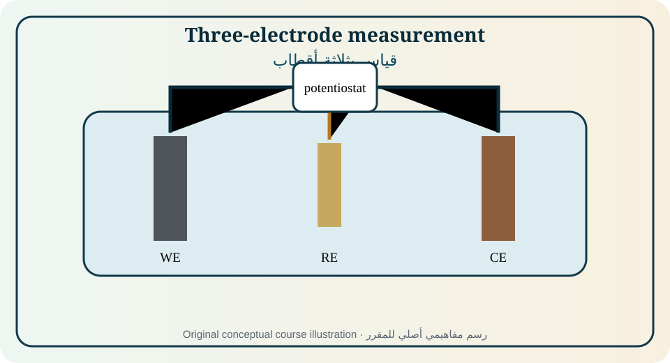
Figure 05. Original educational illustration created for this course from the relationships discussed in [1, Sec. 4.6–4.15; 2, Chs. 2 and 13; 3, Secs. 1.5–1.6 and 3.4; 6, Ch. 13; 7]. Conceptual, not measured data.الشكل 05. رسم تعليمي أصلي أُنشئ لهذا المقرر من العلاقات الواردة في [1, Sec. 4.6–4.15; 2, Chs. 2 and 13; 3, Secs. 1.5–1.6 and 3.4; 6, Ch. 13; 7]. مفاهيمي وليس بيانات مقاسة.
Metal/metal-ion electrodes respond to the activity of their ions; gas electrodes require an inert electronic conductor and controlled gas activity; redox electrodes exchange electrons with dissolved oxidized/reduced species; membrane electrodes develop selective boundary potentials. Classification is tied to the equilibrium or kinetic process being measured.
تستجيب أقطاب معدن/أيون معدن لنشاط أيوناتها، وتتطلب أقطاب الغاز موصلاً إلكترونياً خاملاً ونشاط غاز مضبوطاً، وتتبادل أقطاب الأكسدة والاختزال الإلكترونات مع الأنواع الذائبة، وتولد أقطاب الغشاء جهود حدود انتقائية. يرتبط التصنيف بعملية الاتزان أو الحركية المقاسة.
Standard hydrogen electrode
قطب الهيدروجين القياسي
The SHE defines zero standard electrode potential by convention and requires unit hydrogen activity, specified gas fugacity, platinum, and equilibrium. It is a primary concept rather than the routine reference for most laboratories because gas handling, contamination, and catalytic condition complicate practical use.
يعرّف قطب الهيدروجين القياسي صفر جهد القطب القياسي اصطلاحاً ويتطلب نشاط هيدروجين يساوي واحداً وفوغاسية غاز محددة وبلاتيناً واتزاناً. وهو مفهوم مرجعي أساسي أكثر من كونه مرجعاً روتينياً بسبب تعقيد الغاز والتلوث والحالة التحفيزية.
Ag/AgCl and calomel references
مراجع Ag/AgCl والكالومل
Secondary references use a reproducible equilibrium and specified chloride activity. Their potential changes with chloride concentration and temperature. Conversion between scales must use the exact filling solution and temperature, not a generic memorized offset. Mercury-containing references also require stricter waste controls.
تستخدم المراجع الثانوية اتزاناً قابلاً للتكرار ونشاط كلوريد محدداً. يتغير جهدها مع تركيز الكلوريد والحرارة. يجب أن يستخدم تحويل المقاييس محلول الملء والحرارة الفعليين لا فرقاً محفوظاً عاماً. كما تتطلب المراجع المحتوية على الزئبق ضوابط نفايات أشد.
Liquid junctions and salt bridges
الوصلات السائلة والجسور الملحية
A salt bridge maintains ionic continuity while limiting bulk mixing. Junction potential is minimized by high-concentration salts whose ions have similar mobilities, but it is rarely exactly zero. Sample proteins, solvents, precipitating ions, and low ionic strength can foul or destabilize the junction.
يحافظ الجسر الملحي على الاستمرارية الأيونية مع تقليل الخلط الحجمي. يقل جهد الوصلة باستخدام أملاح عالية التركيز ذات أيونات متقاربة الحركية، لكنه نادراً ما يساوي صفراً تماماً. قد تلوث البروتينات والمذيبات والأيونات المترسبة والعينات منخفضة القوة الأيونية الوصلة أو تزعزعها.
Glass and ion-selective electrodes
أقطاب الزجاج والانتقائية الأيونية
A glass pH electrode responds through hydrated membrane layers and ion exchange, producing an approximately Nernstian potential over a calibrated range. Ion-selective electrodes use selective membranes but exhibit interference described by selectivity coefficients, finite detection limits, response time, drift, and conditioning requirements.
يستجيب قطب الزجاج لـpH عبر طبقات غشائية مميهة وتبادل أيوني، فيولد جهداً يقارب نرنست ضمن مجال معاير. تستخدم الأقطاب الانتقائية أغشية انتقائية لكنها تظهر تداخلاً تصفه معاملات الانتقائية وحدود كشف محدودة وزمن استجابة وانجرافاً ومتطلبات تهيئة.
Potentiometric calibration and uncertainty
المعايرة الجهدية وعدم اليقين
Two- or multi-point calibration estimates slope and intercept under sample-like conditions. Temperature compensation corrects the theoretical slope but not all matrix effects. Good practice records reference type, standards, stirring, equilibration time, junction condition, replicate response, drift, and acceptance criteria.
تقدر المعايرة بنقطتين أو أكثر الميل والجزء المقطوع في ظروف مشابهة للعينة. يصحح تعويض الحرارة الميل النظري لكنه لا يزيل كل تأثيرات المصفوفة. تسجل الممارسة الجيدة نوع المرجع والمعايير والتحريك وزمن الاتزان وحالة الوصلة والتكرارات والانجراف ومعايير القبول.
Solid-state and current-based sensors
مستشعرات الحالة الصلبة والتيار
Solid electrolytes enable potentiometric gas sensors when ion activity differs across a membrane. Amperometric sensors operate under controlled potential and relate current to reaction and transport. Impedance sensors infer changes from frequency response. Each sensing mode requires calibration against the measurand and separation of cross-sensitivities. [6]
تمكّن الإلكتروليتات الصلبة مستشعرات غاز جهدية عند اختلاف نشاط الأيون عبر الغشاء. تعمل المستشعرات الأمبيرية بجهد مضبوط وتربط التيار بالتفاعل والنقل. تستنتج مستشعرات الممانعة التغير من الاستجابة الترددية. ويتطلب كل نمط معايرة وفصل الحساسيات المتقاطعة. [6]
Equations, assumptions, and interpretation · المعادلات والافتراضات والتفسير
Equation · المعادلة
Purpose and limitation · الغرض والحدود
E = E° + (RT/zF)ln a_ion
Ideal ion-responsive electrode form; sign follows the written electrode reaction.صيغة قطب مستجيب للأيون؛ تتبع الإشارة التفاعل المكتوب.
S = 2.303RT/(|z|F)
Magnitude of the ideal decade slope; 59.16 mV/decade for |z|=1 at 298.15 K.مقدار الميل المثالي لكل عقدة؛ 59.16 mV للأيون الأحادي عند 298.15 K.
E_meas = E_indicator − E_reference + E_j
Measured potential includes reference and liquid-junction contributions.يشمل الجهد المقاس مساهمتي المرجع والوصلة السائلة.
E = E⁰ + S log₁₀a
Linear calibration form over a validated working range.صيغة معايرة خطية ضمن مجال عمل متحقق.
Fully worked example · مثال محلول بالكامل
A monovalent ion-selective electrode gives 118.4 mV change when activity changes by two decades at 25°C. The observed slope is 59.2 mV/decade, essentially Nernstian. This verifies sensitivity, not selectivity or absence of junction error; interference and matrix-matched standards still require testing.
يعطي قطب انتقائي لأيون أحادي تغيراً 118.4 mV عند تغير النشاط عقدتين عند 25°C. الميل المرصود 59.2 mV/عقدة وهو قريب من نرنست. يثبت ذلك الحساسية لا الانتقائية أو غياب خطأ الوصلة، لذلك يلزم اختبار التداخل ومعايير مشابهة للمصفوفة.
Partially guided example · مثال موجه جزئياً
A pH electrode calibrates at pH 4.00 and 7.00 with a slope of −57.8 mV/pH. Calculate the potential expected at pH 5.50 relative to the pH 7 reading and assess the slope against the ideal 25°C value.
عُيّر قطب pH عند 4.00 و7.00 بميل −57.8 mV/pH. احسب الجهد المتوقع عند pH 5.50 نسبة إلى قراءة pH 7 وقيّم الميل مقارنة بالقيمة المثالية عند 25°C.
Independent exercises
Foundation: Convert a potential reported vs Ag/AgCl to a stated reference using a supplied offset.
Standard: Fit slope and intercept to multi-point ISE calibration data and calculate an unknown activity.
Advanced: Design a double-junction reference for a sample that precipitates chloride and attacks standard filling solutions.
تمارين مستقلة
تأسيسي: حوّل جهداً مقاساً مقابل Ag/AgCl إلى مرجع محدد باستخدام فرق معطى.
Practical or analytical activity · نشاط عملي أو تحليلي
Laboratory: calibrate a glass electrode or ion-selective electrode at controlled temperature, analyze an unknown by direct calibration and standard addition, compare results, and construct an uncertainty budget including standards, slope, drift, repeatability, and junction effects.
مختبر: عاير قطب زجاج أو قطباً انتقائياً عند حرارة مضبوطة، وحلل مجهولاً بالمعايرة المباشرة والإضافة القياسية، وقارن النتائج، وأنشئ ميزانية عدم يقين تشمل المعايير والميل والانجراف والتكرارية وتأثير الوصلة.
Modern application and case study · تطبيق حديث ودراسة حالة
Case: A pH sensor in a low-conductivity process stream is noisy and slow. Evaluate shielding, reference-junction resistance, static charge, flow, temperature, hydration, and sample conditioning rather than assuming membrane failure.
حالة: مستشعر pH في تيار عملية منخفض التوصيلية ضوضائي وبطيء. قيّم التدريع ومقاومة وصلة المرجع والشحنة الساكنة والجريان والحرارة وترطيب الغشاء وتهيئة العينة قبل افتراض تلف الغشاء.
Common misconception · مفهوم خاطئ شائع
A reference electrode is stable only within specified filling-solution, temperature, junction, and current conditions.
لا يكون القطب المرجعي ثابتاً إلا ضمن شروط محددة لمحلول الملء والحرارة والوصلة والتيار.
Chapter summary and student takeaway · ملخص الوحدة وخلاصة الطالب
Electrode function, reference chemistry, junction behavior, and calibration determine whether a measured potential can be assigned to analyte activity or interfacial state.
تحدد وظيفة القطب وكيمياء المرجع وسلوك الوصلة والمعايرة ما إذا كان الجهد المقاس يعبر عن نشاط المادة أو حالة الواجهة.
Immediate mastery checkتحقق فوري من الإتقان
Principal sources · المصادر الرئيسة: [1, Sec. 4.6–4.15; 2, Chs. 2 and 13; 3, Secs. 1.5–1.6 and 3.4; 6, Ch. 13; 7]. Terminology follows the source context and IUPAC where cited. Models must be used only within their stated assumptions.تتبع المصطلحات سياق المصادر وIUPAC حيث ذُكر. لا تستخدم النماذج إلا ضمن افتراضاتها.
06
MODULE 06 · الوحدة 06
The Electrical Double Layer, Electrocapillarity, and Adsorption
الطبقة الكهربائية المزدوجة والخاصية الشعرية الكهربائية والامتزاز
11 h[1, Ch. 5, pp. 114–150; 2, Ch. 3, pp. 39–69; 4, Ch. 5, pp. 149–177]
Rationale
Every electrode reaction occurs through an interfacial region in which charge, solvent orientation, ions, and adsorbates are organized. Double-layer structure controls capacitance, local concentration, reaction kinetics, and surface chemistry.
Prerequisite knowledge
Modules 2–5, electrostatics, capacitance, and adsorption equilibrium.
مبرر الوحدة
يحدث كل تفاعل قطبي عبر منطقة بينية تنتظم فيها الشحنة واتجاه جزيئات المذيب والأيونات والمواد الممتزة. تتحكم بنية الطبقة المزدوجة في السعة والتركيز المحلي والحركية وكيمياء السطح.
شرح الامتزاز النوعي ونقطة الشحنة الصفرية واعتماد التغطية على الجهد.
تقييم تأثير بنية الطبقة المزدوجة في الحركية والقياسات.
Diagnostic pre-check · فحص تشخيصي
Two capacitive regions are in series. Which region dominates the measured capacitance: the larger or smaller capacitance?
منطقتان سعويتان على التوالي. أيهما يهيمن على السعة المقاسة: الأكبر أم الأصغر؟
At an electrode–electrolyte boundary, electronic charge in the electrode is balanced by ionic and dipolar charge in the solution. The resulting potential distribution is not a single geometric plane; it includes compact solvent/adsorbate layers and a diffuse ionic atmosphere whose importance depends on concentration, ion size, dielectric properties, and potential. [1,2,4]
عند حد القطب–الإلكتروليت تتوازن الشحنة الإلكترونية في القطب مع شحنة أيونية وثنائية القطب في المحلول. لا يتوزع الجهد في مستوى هندسي واحد، بل يشمل طبقات مدمجة من المذيب والمواد الممتزة وجواً أيونياً منتشراً يعتمد على التركيز وحجم الأيون والسماحية والجهد. [1,2,4]
The double layer stores charge nonfaradaically, but it also changes the local activity and orientation of reactants. Consequently it affects measured capacitance, adsorption, electron-transfer rate, electrocatalysis, corrosion, electrodeposition, and electroanalytical background current.
تخزن الطبقة المزدوجة الشحنة دون تفاعل فارادي، لكنها تغير أيضاً النشاط المحلي واتجاه المتفاعلات. لذلك تؤثر في السعة المقاسة والامتزاز وانتقال الإلكترون والتحفيز والتآكل والترسيب والتيار الخلفي التحليلي.
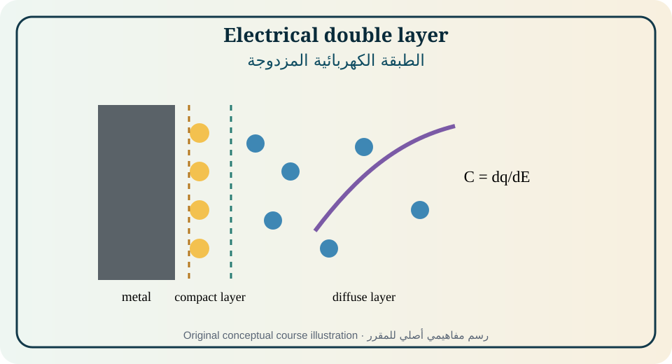
Figure 06. Original educational illustration created for this course from the relationships discussed in [1, Ch. 5, pp. 114–150; 2, Ch. 3, pp. 39–69; 4, Ch. 5, pp. 149–177]. Conceptual, not measured data.الشكل 06. رسم تعليمي أصلي أُنشئ لهذا المقرر من العلاقات الواردة في [1, Ch. 5, pp. 114–150; 2, Ch. 3, pp. 39–69; 4, Ch. 5, pp. 149–177]. مفاهيمي وليس بيانات مقاسة.
Surface charge density is balanced by an oppositely signed solution charge integrated across the interfacial region. The electric field can be very large over molecular distances, so local ion distributions differ strongly from the bulk while the macroscopic solution remains electroneutral.
تتوازن كثافة شحنة السطح مع شحنة محلول معاكسة الإشارة متكاملة عبر المنطقة البينية. يمكن أن يكون المجال الكهربائي كبيراً جداً عبر مسافات جزيئية، فتختلف توزيعات الأيونات المحلية بقوة عن الحجم مع بقاء المحلول العياني متعادلاً كهربائياً.
Helmholtz and compact-layer models
نماذج هلمهولتز والطبقة المدمجة
The Helmholtz picture treats the interface as a plate capacitor with a compact countercharge at a fixed distance. It gives useful geometric intuition but neglects thermal diffusion, ion-size distributions, solvent structure, and potential-dependent adsorption. Compact-layer concepts survive in Stern and Grahame descriptions.
يعامل نموذج هلمهولتز الواجهة كمكثف لوحين بشحنة مضادة مدمجة على مسافة ثابتة. يوفر حدساً هندسياً مفيداً لكنه يهمل الانتشار الحراري وتوزيع أحجام الأيونات وبنية المذيب والامتزاز المعتمد على الجهد. تبقى فكرة الطبقة المدمجة في نماذج شتيرن وغراهام.
Gouy–Chapman diffuse layer
طبقة غوي–تشابمان المنتشرة
The diffuse-layer model combines electrostatics with Boltzmann ion distributions. It predicts potential decay over a Debye length and a capacitance that depends on potential and ionic strength. It works best for dilute solutions with point-like ions and a uniform planar surface; crowding and specific adsorption violate its assumptions.
يجمع نموذج الطبقة المنتشرة بين الكهرباء الساكنة وتوزيعات بولتزمان للأيونات. ويتنبأ بانخفاض الجهد عبر طول ديباي وبسعة تعتمد على الجهد والقوة الأيونية. ينجح أكثر في المحاليل المخففة ذات الأيونات النقطية والسطح المستوي المنتظم، بينما يخالف الازدحام والامتزاز النوعي افتراضاته.
Stern and Grahame models
نماذج شتيرن وغراهام
Stern places a compact layer in series with a diffuse layer. Grahame distinguishes inner and outer Helmholtz planes, allowing specifically adsorbed ions to approach differently from solvated nonspecific ions. The total capacitance is limited by the lower series capacitance and can show minima or maxima with potential. [1,2]
يضع شتيرن طبقة مدمجة على التوالي مع طبقة منتشرة. ويميز غراهام بين مستويي هلمهولتز الداخلي والخارجي، فيسمح باقتراب مختلف للأيونات الممتزة نوعياً والأيونات المميهة غير النوعية. تحد السعة الأصغر من السعة الكلية وقد تظهر قيم دنيا أو عظمى مع الجهد. [1,2]
Point of zero charge and electrocapillarity
نقطة الشحنة الصفرية والخاصية الشعرية الكهربائية
The potential of zero charge is the potential at which a defined surface charge is zero. It is reference- and adsorption-dependent. Electrocapillary relations connect interfacial tension to potential and charge; the maximum in interfacial tension often corresponds to zero charge only under conditions without specific adsorption.
جهد الشحنة الصفرية هو الجهد الذي تكون عنده شحنة سطحية معرفة صفراً. يعتمد على المرجع والامتزاز. تربط علاقات الخاصية الشعرية الكهربائية التوتر البيني بالجهد والشحنة؛ وغالباً تقابل قمة التوتر الشحنة الصفرية فقط في غياب الامتزاز النوعي.
Specific adsorption and isotherms
الامتزاز النوعي ومتساويات الحرارة
Specific adsorption involves chemical or short-range interactions beyond electrostatic accumulation. Coverage can follow Langmuir, Frumkin, Temkin, or more complex relations depending on site heterogeneity, lateral interactions, solvent displacement, charge, and multiple species. A fitted isotherm is evidence of consistency, not proof of a unique molecular mechanism.
يشمل الامتزاز النوعي تآثرات كيميائية أو قصيرة المدى تتجاوز التراكم الكهروستاتيكي. قد تتبع التغطية لانغموير أو فرومكن أو تيمكين أو علاقات أعقد بحسب عدم تجانس المواقع والتآثرات الجانبية وإزاحة المذيب والشحنة وتعدد الأنواع. إن ملاءمة متساوي الحرارة دليل اتساق لا إثباتاً لآلية جزيئية وحيدة.
Double-layer effects on kinetics
تأثيرات الطبقة المزدوجة في الحركية
The reacting species experiences the local potential and activity at its reaction plane, not simply the bulk potential and concentration. Frumkin-type corrections separate double-layer electrostatic effects from intrinsic electron-transfer kinetics. Ignoring this distinction can make an apparent transfer coefficient or rate constant depend on supporting electrolyte. [1,2]
يختبر النوع المتفاعل الجهد والنشاط المحليين عند مستوى التفاعل لا جهد وتركيز الحجم فقط. تفصل تصحيحات فرومكن التأثير الكهروستاتيكي للطبقة المزدوجة عن حركية انتقال الإلكترون الجوهرية. وقد يؤدي إهمال ذلك إلى اعتماد معامل الانتقال أو ثابت السرعة الظاهري على الإلكتروليت الداعم. [1,2]
Equations, assumptions, and interpretation · المعادلات والافتراضات والتفسير
Equation · المعادلة
Purpose and limitation · الغرض والحدود
C_d = dq/dE
Differential interfacial capacitance per area when q is surface charge density.السعة البينية التفاضلية لكل مساحة عندما q كثافة شحنة السطح.
1/C_total = 1/C_compact + 1/C_diffuse
Stern series-capacitance relationship.علاقة السعات المتسلسلة في نموذج شتيرن.
λ_D = √(εε₀RT/(2F²I))
Illustrative Debye length for a symmetric dilute electrolyte; units and concentration convention must be consistent.طول ديباي التعليمي لإلكتروليت متناظر مخفف مع اتساق الوحدات.
θ/(1−θ) = K a
Ideal Langmuir adsorption relation for equivalent noninteracting sites.علاقة لانغموير المثالية لمواقع متكافئة غير متفاعلة.
Fully worked example · مثال محلول بالكامل
A compact-layer capacitance is 25 μF·cm⁻² and a diffuse-layer capacitance is 100 μF·cm⁻². C_total=[1/25+1/100]⁻¹=20 μF·cm⁻². The smaller compact capacitance controls the total. Increasing ionic strength may raise C_diffuse substantially yet change C_total only modestly.
إذا كانت سعة الطبقة المدمجة 25 μF·cm⁻² وسعة الطبقة المنتشرة 100 μF·cm⁻² فإن C_total=[1/25+1/100]⁻¹=20 μF·cm⁻². تتحكم السعة الأصغر المدمجة في الكلية. قد يرفع زيادة القوة الأيونية C_diffuse كثيراً مع تغير محدود في C_total.
Partially guided example · مثال موجه جزئياً
For Langmuir adsorption with K=500 L·mol⁻¹, calculate coverage at 1.0 and 10.0 mmol·L⁻¹. Discuss when lateral interactions would make the model inadequate.
لامتزاز لانغموير بثابت K=500 L·mol⁻¹ احسب التغطية عند 1.0 و10.0 mmol·L⁻¹، وناقش متى تجعل التآثرات الجانبية النموذج غير ملائم.
Independent exercises
Foundation: Calculate two series capacitances and identify the controlling layer.
Standard: Estimate Debye-length change when ionic strength increases by a factor of 100.
Advanced: Distinguish potential-dependent adsorption from purely diffuse-layer charging using capacitance and surface-excess data.
تمارين مستقلة
تأسيسي: احسب سعتين متسلسلتين وحدد الطبقة المتحكمة.
قياسي: قدر تغير طول ديباي عند زيادة القوة الأيونية مئة مرة.
متقدم: ميّز الامتزاز المعتمد على الجهد من شحن الطبقة المنتشرة باستخدام السعة والزيادة السطحية.
Practical or analytical activity · نشاط عملي أو تحليلي
Laboratory/computation: measure or analyze differential capacitance versus potential at two supporting-electrolyte concentrations. Locate minima/maxima, compare with a series-capacitance model, and state whether the data support diffuse-layer, compact-layer, or adsorption contributions.
مختبر/حوسبة: قس أو حلل السعة التفاضلية مقابل الجهد عند تركيزين من الإلكتروليت الداعم. حدد القيم الدنيا والعظمى وقارن بنموذج سعات متسلسلة وبيّن هل تدعم البيانات مساهمات منتشرة أو مدمجة أو امتزازية.
Modern application and case study · تطبيق حديث ودراسة حالة
Case: An organic molecule accelerates electron transfer at one ionic strength but inhibits it at another. Evaluate changes in protonation, surface charge, specific adsorption, local concentration, and double-layer correction before assigning a catalytic mechanism.
حالة: يسرّع جزيء عضوي انتقال الإلكترون عند قوة أيونية ويثبطه عند أخرى. قيّم البروتنة وشحنة السطح والامتزاز النوعي والتركيز المحلي وتصحيح الطبقة المزدوجة قبل نسبة آلية تحفيزية.
Common misconception · مفهوم خاطئ شائع
The double layer is not a rigid molecular capacitor with one universal thickness and capacitance.
ليست الطبقة المزدوجة مكثفاً جزيئياً صلباً ذا سماكة وسعة عامتين.
Chapter summary and student takeaway · ملخص الوحدة وخلاصة الطالب
Double-layer structure is a potential-dependent, composition-dependent interfacial charge distribution; compact and diffuse regions, adsorption, and local electrostatics determine capacitance and influence reaction kinetics.
الطبقة المزدوجة توزيع شحنة بيني يعتمد على الجهد والتركيب؛ وتحدد المناطق المدمجة والمنتشرة والامتزاز والكهرباء الساكنة المحلية السعة وتؤثر في الحركية.
Immediate mastery checkتحقق فوري من الإتقان
Principal sources · المصادر الرئيسة: [1, Ch. 5, pp. 114–150; 2, Ch. 3, pp. 39–69; 4, Ch. 5, pp. 149–177]. Terminology follows the source context and IUPAC where cited. Models must be used only within their stated assumptions.تتبع المصطلحات سياق المصادر وIUPAC حيث ذُكر. لا تستخدم النماذج إلا ضمن افتراضاتها.
07
MODULE 07 · الوحدة 07
Electron-Transfer Kinetics, Butler–Volmer, and Tafel Analysis
12 h[1, Ch. 6, pp. 151–200; 2, Chs. 4 and 6; 4, Ch. 3]
Rationale
Thermodynamics determines whether a reaction can proceed; kinetics determines the current required to make it proceed at a selected rate. This module develops the quantitative current–overpotential relations used throughout applied electrochemistry.
Prerequisite knowledge
Modules 4–6, exponential functions, reaction-rate concepts, and current density.
مبرر الوحدة
تحدد الديناميكا الحرارية إمكان حدوث التفاعل، بينما تحدد الحركية التيار اللازم لحدوثه بسرعة مختارة. تطور هذه الوحدة علاقات التيار–فرط الجهد الكمية المستخدمة في التطبيقات.
المعرفة السابقة
الوحدات 4–6 والدوال الأسية ومفاهيم سرعة التفاعل وكثافة التيار.
Module learning outcomes
Define polarization, overpotential, exchange current, and transfer coefficient.
Derive limiting forms of Butler–Volmer and construct Tafel plots.
Separate kinetic, ohmic, and mass-transfer contributions.
Interpret multistep, semiconductor, and mixed-potential kinetics with appropriate caution.
مخرجات تعلم الوحدة
تعريف الاستقطاب وفرط الجهد وتيار التبادل ومعامل الانتقال.
اشتقاق الحدود التقريبية لبتلر–فولمر وإنشاء مخططات تافل.
فصل المساهمات الحركية والأومية وانتقال الكتلة.
تفسير الحركية متعددة المراحل وحركية أشباه الموصلات والجهد المختلط بحذر مناسب.
Diagnostic pre-check · فحص تشخيصي
At equilibrium, is the exchange current zero? Explain the difference between exchange current and net current.
هل يساوي تيار التبادل صفراً عند الاتزان؟ وضح الفرق بين تيار التبادل والتيار الصافي.
At equilibrium, anodic and cathodic partial currents are equal in magnitude, giving zero net current but a finite exchange current. Driving the electrode away from equilibrium by overpotential changes the activation barriers asymmetrically and produces net current. [1,2,4]
عند الاتزان تتساوى التيارات الجزئية الأنودية والكاثودية في المقدار فيكون التيار الصافي صفراً مع وجود تيار تبادل محدود. يؤدي دفع القطب بعيداً عن الاتزان بفرط الجهد إلى تغيير حواجز التنشيط بصورة غير متناظرة وتوليد تيار صاف. [1,2,4]
Butler–Volmer is a local kinetic model for a specified reaction and operating regime. Tafel behavior is an asymptotic approximation at sufficiently large magnitude of activation overpotential, before transport limits, uncompensated resistance, film changes, or parallel reactions distort the slope.
بتلر–فولمر نموذج حركي محلي لتفاعل ونظام تشغيل محددين. وسلوك تافل تقريب حدّي عند مقدار كاف من فرط الجهد التنشيطي قبل أن تشوهه حدود النقل أو المقاومة غير المعوضة أو تغير الغشاء أو التفاعلات المتوازية.
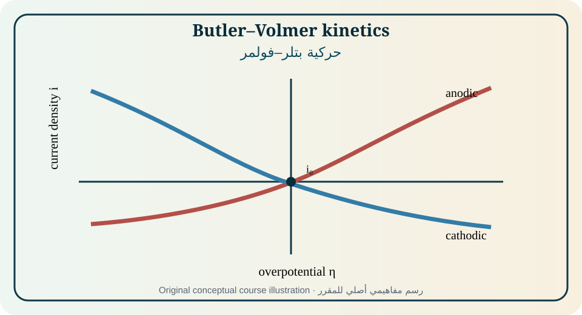
Figure 07. Original educational illustration created for this course from the relationships discussed in [1, Ch. 6, pp. 151–200; 2, Chs. 4 and 6; 4, Ch. 3]. Conceptual, not measured data.الشكل 07. رسم تعليمي أصلي أُنشئ لهذا المقرر من العلاقات الواردة في [1, Ch. 6, pp. 151–200; 2, Chs. 4 and 6; 4, Ch. 3]. مفاهيمي وليس بيانات مقاسة.
Electrode polarization is displacement from equilibrium caused by current or other forcing. Activation overpotential belongs to interfacial reaction kinetics, concentration overpotential to composition changes, and ohmic loss to current through resistance. The measured potential may contain all three unless separated experimentally.
استقطاب القطب انحراف عن الاتزان يسببه التيار أو مؤثر آخر. يرتبط فرط جهد التنشيط بحركية التفاعل البيني، وفرط جهد التركيز بتغير التركيب، والفقد الأومي بمرور التيار في مقاومة. وقد يجمع الجهد المقاس الثلاثة ما لم تفصل تجريبياً.
Exchange current density
كثافة تيار التبادل
i₀ measures the dynamic rate of the forward and reverse electrode reaction at equilibrium per stated area. It depends on electrode material, surface state, temperature, activities, and mechanism. A large i₀ means a small activation overpotential is needed for a given current density, but it does not remove transport or ohmic losses.
تقيس i₀ السرعة الديناميكية للتفاعلين الأمامي والعكسي عند الاتزان لكل مساحة محددة. تعتمد على مادة القطب وحالة السطح والحرارة والأنشطة والآلية. تعني i₀ الكبيرة أن فرط جهد تنشيط صغير يكفي لتيار معين، لكنها لا تلغي خسائر النقل أو المقاومة.
Butler–Volmer equation
معادلة بتلر–فولمر
Butler–Volmer expresses net current as the difference of anodic and cathodic exponential terms. Transfer coefficients describe how the activation barrier changes with potential within the model. Sign conventions differ across books and software, so the written reaction, positive-current direction, and definition of η must accompany every fit. [1,2]
تعبر بتلر–فولمر عن التيار الصافي بفرق حدين أسيين أنودي وكاثودي. تصف معاملات الانتقال تغير حاجز التنشيط مع الجهد ضمن النموذج. تختلف اصطلاحات الإشارة بين الكتب والبرمجيات، ولذلك يجب ذكر التفاعل واتجاه التيار الموجب وتعريف η مع كل ملاءمة. [1,2]
Linear polarization near equilibrium
الاستقطاب الخطي قرب الاتزان
For small |η|, exponentials can be linearized and the interfacial slope becomes the charge-transfer resistance. This region underlies EIS and polarization-resistance methods. The perturbation must be small enough for linearity yet large enough for adequate signal-to-noise.
عند |η| صغير يمكن خطيّة الحدود الأسية ويصبح الميل البيني مقاومة انتقال الشحنة. تقوم هذه المنطقة عليها EIS وطرق مقاومة الاستقطاب. يجب أن يكون الاضطراب صغيراً للخطية وكبيراً بما يكفي لنسبة إشارة إلى ضوضاء مناسبة.
Tafel analysis
تحليل تافل
When one exponential dominates, η varies linearly with log|i|. A valid Tafel region requires activation control, stable surface, corrected iR drop, and no limiting-current curvature. The intercept estimates i₀ only if the mechanism and slope model are appropriate. Arbitrarily selecting the straightest segment can produce plausible but false parameters.
عندما يهيمن حد أسي واحد تتغير η خطياً مع log|i|. يتطلب مجال تافل الصحيح تحكم التنشيط وثبات السطح وتصحيح iR وغياب تقوس التيار الحدي. يقدر الجزء المقطوع i₀ فقط إذا كانت الآلية ونموذج الميل مناسبين. قد يعطي اختيار أكثر جزء استقامة معلمات مقنعة لكنها خاطئة.
Microscopic electron transfer
انتقال الإلكترون المجهري
Electron transfer requires electronic coupling and nuclear/solvent reorganization. Marcus-type descriptions relate activation to reorganization energy and driving force; the Franck–Condon principle emphasizes that electron transfer is fast relative to nuclear motion. These models clarify trends but need system-specific parameters and do not replace interfacial transport analysis. [1,4]
يتطلب انتقال الإلكترون اقتراناً إلكترونياً وإعادة تنظيم نووي/مذيبي. تربط أوصاف ماركوس التنشيط بطاقة إعادة التنظيم والدافع، ويؤكد مبدأ فرانك–كوندون أن انتقال الإلكترون أسرع من حركة النوى. توضح النماذج الاتجاهات لكنها تحتاج معلمات خاصة ولا تستبدل تحليل النقل البيني. [1,4]
Multistep reactions and rate-determining behavior
التفاعلات متعددة المراحل والسلوك المحدد للسرعة
Observed current may involve adsorption, electron transfer, chemical reaction, desorption, and surface reconstruction. A Tafel slope or reaction order constrains possible mechanisms but rarely identifies one uniquely. Potential-dependent coverage can change the apparent rate-determining step and slope.
قد يشمل التيار المرصود امتزازاً وانتقال إلكترون وتفاعلاً كيميائياً ونزع امتزاز وإعادة بناء السطح. يقيد ميل تافل أو رتبة التفاعل الآليات الممكنة لكنه نادراً ما يحدد واحدة فريداً. قد تغير التغطية المعتمدة على الجهد المرحلة المحددة ظاهرياً والميل.
Mixed potential and parallel reactions
الجهد المختلط والتفاعلات المتوازية
At open circuit on a corroding or catalytic surface, the sum of anodic and cathodic partial currents is zero, not each current separately. The mixed potential is set by all coupled reactions. Changing oxygen, pH, catalyst area, or mass transport can shift both potential and net corrosion or catalytic rate.
عند الدائرة المفتوحة على سطح متآكل أو حفاز يكون مجموع التيارات الجزئية الأنودية والكاثودية صفراً، لا كل تيار منفرداً. تحدد جميع التفاعلات المقترنة الجهد المختلط. يمكن لتغير الأكسجين أو pH أو مساحة الحفاز أو النقل أن يغير الجهد ومعدل التآكل أو التحفيز.
Equations, assumptions, and interpretation · المعادلات والافتراضات والتفسير
Equation · المعادلة
Purpose and limitation · الغرض والحدود
η = E − E_eq
Overpotential relative to the equilibrium potential under the stated sign convention.فرط الجهد نسبة إلى جهد الاتزان وفق اصطلاح الإشارة.
i = i₀[exp(α_a nFη/RT) − exp(−α_c nFη/RT)]
A common Butler–Volmer form with anodic current positive.صيغة شائعة لبتلر–فولمر مع اعتبار التيار الأنودي موجباً.
R_ct = RT/(nF i₀A)
Near-equilibrium charge-transfer resistance for total electrode area A and compatible convention.مقاومة انتقال الشحنة قرب الاتزان لمساحة A.
η = a + b log₁₀|i|
Tafel relation in a valid activation-controlled region.علاقة تافل في مجال صحيح محكوم بالتنشيط.
b_a = 2.303RT/(α_a nF)
Anodic Tafel slope magnitude for the simple model.مقدار ميل تافل الأنودي للنموذج البسيط.
Fully worked example · مثال محلول بالكامل
At 298 K, n=1, α_a=α_c=0.5, i₀=1.00 mA·cm⁻², and η=+0.100 V: i=i₀[exp(1.946)−exp(−1.946)]=1.00(7.00−0.143)=6.86 mA·cm⁻². The cathodic term is small but not zero. A Tafel approximation gives a similar result only when the neglected term is demonstrably insignificant.
عند 298 K وn=1 وα_a=α_c=0.5 وi₀=1.00 mA·cm⁻² وη=+0.100 V يكون i=1.00[exp(1.946)−exp(−1.946)]=6.86 mA·cm⁻². الحد الكاثودي صغير لكنه غير صفري. يعطي تقريب تافل نتيجة مشابهة فقط عندما يثبت إهمال الحد الآخر.
Partially guided example · مثال موجه جزئياً
A measured anodic Tafel slope is 120 mV·dec⁻¹ at 298 K for n=1. Estimate α_a in the simple one-step model, then list three reasons the apparent value might not equal an elementary transfer coefficient.
ميل تافل أنودي مقاس 120 mV·dec⁻¹ عند 298 K وn=1. قدر α_a في نموذج خطوة واحدة، ثم اذكر ثلاثة أسباب لعدم مساواة القيمة الظاهرية لمعامل انتقال أولي.
Independent exercises
Foundation: Calculate current from Butler–Volmer at specified η and i₀.
Standard: Correct a polarization curve for iR drop and identify a defensible Tafel interval.
Advanced: Use mixed-potential diagrams to predict how oxygen mass transfer changes corrosion potential and rate.
تمارين مستقلة
تأسيسي: احسب التيار من بتلر–فولمر عند η وi₀ محددين.
قياسي: صحح منحنى استقطاب لهبوط iR وحدد مجال تافل قابل للدفاع.
متقدم: استخدم مخططات الجهد المختلط للتنبؤ بتأثير نقل الأكسجين في جهد ومعدل التآكل.
Practical or analytical activity · نشاط عملي أو تحليلي
Laboratory: record anodic and cathodic polarization of a reversible or quasi-reversible redox couple at several concentrations. Measure OCP, compensate or report iR, compare linear, Butler–Volmer, and Tafel regions, and test parameter stability when the fitting window changes.
مختبر: سجل الاستقطاب الأنودي والكاثودي لزوج عكوس أو شبه عكوس عند عدة تراكيز. قس OCP وصحح أو اعرض iR وقارن المجالات الخطية وبتلر–فولمر وتافل واختبر ثبات المعلمات عند تغيير نافذة الملاءمة.
Modern application and case study · تطبيق حديث ودراسة حالة
Case: Two electrocatalysts show the same Tafel slope but different currents. Determine whether the difference arises from exchange current, electrochemically active area, mass transport, loading, resistance, or normalization before claiming intrinsic superiority.
حالة: يظهر حفازان الميل نفسه لتافل وتيارات مختلفة. حدد هل الفرق ناتج من تيار التبادل أو المساحة النشطة أو النقل أو التحميل أو المقاومة أو التطبيع قبل ادعاء تفوق جوهري.
Common misconception · مفهوم خاطئ شائع
A straight Tafel line is not sufficient evidence that the fitted slope is mechanistically meaningful.
لا يكفي خط تافل مستقيم لإثبات أن الميل الملائم ذو معنى آلي.
Chapter summary and student takeaway · ملخص الوحدة وخلاصة الطالب
Electron-transfer current arises from imbalance of finite forward and reverse rates; Butler–Volmer describes local activation kinetics, while Tafel and linear forms are conditional approximations.
ينشأ تيار انتقال الإلكترون من عدم توازن سرعتين أمامية وعكسية محدودتين؛ تصف بتلر–فولمر الحركية التنشيطية المحلية، بينما تافل والصيغة الخطية تقريبان مشروطان.
Immediate mastery checkتحقق فوري من الإتقان
Principal sources · المصادر الرئيسة: [1, Ch. 6, pp. 151–200; 2, Chs. 4 and 6; 4, Ch. 3]. Terminology follows the source context and IUPAC where cited. Models must be used only within their stated assumptions.تتبع المصطلحات سياق المصادر وIUPAC حيث ذُكر. لا تستخدم النماذج إلا ضمن افتراضاتها.
08
MODULE 08 · الوحدة 08
Mass-Transfer-Limited Kinetics, Diffusion Layers, and Hydrodynamic Electrodes
12 h[1, Sec. 6.10–6.15 and 7.5–7.7; 2, Chs. 5, 6, and 8; 4, Ch. 4]
Rationale
Electrode current cannot exceed the rate at which reactants are supplied and products removed. Controlled transport turns this limitation into a quantitative tool for concentration, diffusion, kinetics, and mechanism.
Prerequisite knowledge
Modules 3 and 7, differential equations, and basic fluid mechanics.
مبرر الوحدة
لا يمكن لتيار القطب تجاوز سرعة إمداد المتفاعلات وإزالة النواتج. يحول النقل المضبوط هذا القيد إلى أداة كمية للتركيز والانتشار والحركية والآلية.
Derive and interpret planar transient diffusion and steady diffusion-layer models.
Calculate Cottrell, limiting, Levich, and Koutecky–Levich currents.
Explain RDE and RRDE operation and identify transport/kinetic separation.
Compare planar, spherical, microelectrode, and porous transport regimes.
مخرجات تعلم الوحدة
اشتقاق وتفسير الانتشار العابر المستوي ونماذج طبقة الانتشار المستقرة.
حساب تيارات كوتريل والحدي وليفيتش وكوتتسكي–ليفيتش.
شرح عمل RDE وRRDE وفصل النقل عن الحركية.
مقارنة نظم النقل المستوية والكروية والميكروية والمسامية.
Diagnostic pre-check · فحص تشخيصي
Why does the current after a diffusion-limited potential step decrease with time at a planar electrode?
لماذا ينخفض التيار مع الزمن بعد خطوة جهد محدودة بالانتشار عند قطب مستو؟
When interfacial electron transfer is fast relative to mass transport, the surface concentration adjusts nearly to the value imposed by potential and the current is determined by species flux. The resulting current depends on time, geometry, diffusion coefficient, concentration, convection, and migration. [1,2,4]
عندما يكون انتقال الإلكترون البيني سريعاً نسبة إلى نقل الكتلة يتكيف التركيز السطحي تقريباً مع القيمة التي يفرضها الجهد ويحدد فيض الأنواع التيار. يعتمد التيار الناتج على الزمن والهندسة ومعامل الانتشار والتركيز والحمل والهجرة. [1,2,4]
Hydrodynamic electrodes impose reproducible convection so that transport can be calculated. Varying rotation rate separates kinetic current from transport current, while a ring–disk configuration detects products or intermediates generated at the disk.
تفرض الأقطاب الهيدروديناميكية حملاً قابلاً للتكرار يمكن حسابه. يفصل تغيير سرعة الدوران التيار الحركي عن تيار النقل، بينما يكشف ترتيب الحلقة–القرص النواتج أو الوسائط المتولدة عند القرص.
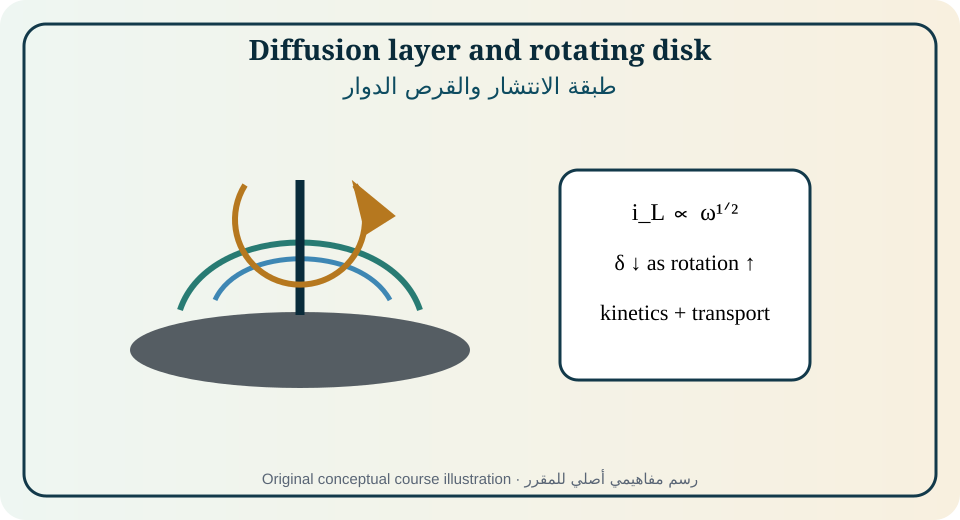
Figure 08. Original educational illustration created for this course from the relationships discussed in [1, Sec. 6.10–6.15 and 7.5–7.7; 2, Chs. 5, 6, and 8; 4, Ch. 4]. Conceptual, not measured data.الشكل 08. رسم تعليمي أصلي أُنشئ لهذا المقرر من العلاقات الواردة في [1, Sec. 6.10–6.15 and 7.5–7.7; 2, Chs. 5, 6, and 8; 4, Ch. 4]. مفاهيمي وليس بيانات مقاسة.
After a planar potential step that consumes reactant rapidly, a concentration gradient grows into the solution. The diffusion distance scales as √(Dt), so the gradient and current scale as t⁻¹ᐟ². The semi-infinite Cottrell result fails when the diffusion layer reaches a wall, neighboring electrode, convection field, or finite particle.
بعد خطوة جهد مستوية تستهلك المتفاعل سريعاً ينمو تدرج التركيز داخل المحلول. تتناسب مسافة الانتشار مع √(Dt)، ولذلك يتناسب التدرج والتيار مع t⁻¹ᐟ². يفشل حل كوتريل شبه اللانهائي عندما تصل طبقة الانتشار إلى جدار أو قطب مجاور أو مجال حمل أو جسيم محدود.
Diffusion layer and limiting current
طبقة الانتشار والتيار الحدي
In a steady diffusion-layer approximation, concentration changes across an effective thickness δ. When surface reactant concentration approaches zero, the current reaches i_L=nFADc_b/δ. The thickness is not a physical membrane; it summarizes hydrodynamic and geometric transport under specified conditions.
في تقريب طبقة انتشار مستقرة يتغير التركيز عبر سماكة فعالة δ. عندما يقترب تركيز المتفاعل السطحي من الصفر يصل التيار إلى i_L=nFADc_b/δ. ليست السماكة غشاءً مادياً، بل تلخص النقل الهيدروديناميكي والهندسي في ظروف محددة.
Rotating disk electrode
قطب القرص الدوار
Rotation produces a known laminar flow toward the disk and radial flow outward. The Levich equation predicts limiting current proportional to ω¹ᐟ². Polishing, centering, solution viscosity, temperature, dissolved gas, edge condition, and whether flow is laminar control accuracy. [1,2,4]
ينتج الدوران جرياناً صفحياً معروفاً نحو القرص ثم شعاعياً إلى الخارج. تتنبأ معادلة ليفيتش بتيار حدي يتناسب مع ω¹ᐟ². تتحكم الصقل والمركزية واللزوجة والحرارة والغاز الذائب وحالة الحافة وصفحية الجريان في الدقة. [1,2,4]
Koutecky–Levich analysis
تحليل كوتتسكي–ليفيتش
When activation and transport act in series, reciprocal current is the sum of reciprocal kinetic and limiting currents. At fixed potential, plotting 1/i against ω⁻¹ᐟ² can estimate kinetic current and apparent electron number. Linearity alone is insufficient if surface coverage, reaction order, bubble formation, or parallel pathways vary with rotation.
عندما يعمل التنشيط والنقل على التوالي يكون مقلوب التيار مجموع مقلوبي التيار الحركي والحدي. يمكن لمخطط 1/i مقابل ω⁻¹ᐟ² عند جهد ثابت تقدير التيار الحركي وعدد الإلكترونات الظاهري. لا تكفي الخطية إذا تغيرت التغطية أو رتبة التفاعل أو الفقاعات أو المسارات المتوازية مع الدوران.
Rotating ring–disk electrode
قطب الحلقة–القرص الدوار
The disk generates species that are convected to the ring, where they are detected at a selected potential. The collection efficiency is determined by geometry and flow for a stable soluble species. Chemical decay, adsorption, gas formation, and incomplete ring selectivity modify the observed ring/disk ratio.
يولد القرص أنواعاً تنقل بالحمل إلى الحلقة حيث تكشف عند جهد مختار. تحدد الهندسة والجريان كفاءة الجمع للنوع الذائب المستقر. يغير التحلل الكيميائي والامتزاز وتكوّن الغاز وعدم انتقائية الحلقة التامة نسبة تيار الحلقة إلى القرص.
Microelectrodes and spherical diffusion
الأقطاب الميكروية والانتشار الكروي
At sufficiently small electrodes, radial diffusion replenishes reactant and can create a steady current without forced convection. Microelectrodes reduce iR drop and double-layer current, enable fast scans and small-volume studies, but require accurate geometry, shielding, and treatment of finite kinetics and adsorption.
عند أقطاب صغيرة بما يكفي يجدد الانتشار الشعاعي المتفاعل ويمكن أن يولد تياراً مستقراً دون حمل قسري. تقلل الأقطاب الميكروية هبوط iR وتيار الطبقة المزدوجة وتمكن المسح السريع والحجوم الصغيرة، لكنها تتطلب هندسة دقيقة وتدريعاً ومعالجة للحركية المحدودة والامتزاز.
Porous and reactive transport
النقل المسامي والمتفاعل
Porous electrodes combine pore diffusion, electrolyte conduction, distributed reaction, gas transport, and evolving wetting. A single planar δ is usually inadequate. Effective diffusivity and conductivity depend on porosity, tortuosity, saturation, particle size, and reaction distribution.
تجمع الأقطاب المسامية انتشار المسام وتوصيل الإلكتروليت والتفاعل الموزع ونقل الغاز وتغير البلل. لا تكفي عادة سماكة δ مستوية واحدة. تعتمد معاملات الانتشار والتوصيل الفعالة على المسامية والتعرج والتشبع وحجم الجسيم وتوزيع التفاعل.
Equations, assumptions, and interpretation · المعادلات والافتراضات والتفسير
Equation · المعادلة
Purpose and limitation · الغرض والحدود
i(t)=nFAD¹ᐟ²c_b/(πt)¹ᐟ²
Cottrell current for a planar semi-infinite diffusion-limited step.تيار كوتريل لخطوة محدودة بالانتشار المستوي شبه اللانهائي.
i_L=nFADc_b/δ
Steady diffusion-layer limiting current.التيار الحدي في نموذج طبقة انتشار مستقرة.
i_L=0.620nFAD²ᐟ³ν⁻¹ᐟ⁶ω¹ᐟ²c_b
Levich equation for a rotating disk under standard assumptions and consistent units.معادلة ليفيتش للقرص الدوار مع افتراضات قياسية ووحدات متسقة.
1/i = 1/i_k + 1/i_L
Koutecky–Levich separation of kinetic and transport currents.فصل التيار الحركي والنقلي بكوتتسكي–ليفيتش.
i_ss=4nFDr c_b
Steady current at an ideal disk microelectrode of radius r in a common approximation.التيار المستقر عند قطب قرصي ميكروي مثالي بنصف قطر r.
Fully worked example · مثال محلول بالكامل
For an RDE with n=1, A=0.196 cm², D=7.0×10⁻⁶ cm²·s⁻¹, ν=0.010 cm²·s⁻¹, c=1.00×10⁻⁶ mol·cm⁻³, and 1600 rpm: ω=167.6 rad·s⁻¹ and i_L≈0.620nFAD²ᐟ³ν⁻¹ᐟ⁶ω¹ᐟ²c=0.615 mA. The result assumes laminar flow and a transport-limited reaction.
At one potential, measured currents at several rotation rates are supplied. Construct a Koutecky–Levich plot, determine i_k from the intercept, and explain what a curved plot might mean.
أعطيت تيارات عند جهد واحد وسرعات دوران متعددة. أنشئ مخطط كوتتسكي–ليفيتش وحدد i_k من الجزء المقطوع وفسر دلالة الانحناء.
Independent exercises
Foundation: Use Cottrell to calculate current at two times and verify t⁻¹ᐟ² scaling.
Standard: Estimate D from a Levich slope.
Advanced: Combine RRDE collection efficiency with a homogeneous decay model to estimate intermediate lifetime.
تمارين مستقلة
تأسيسي: استخدم كوتريل لحساب التيار عند زمنين وتحقق من t⁻¹ᐟ².
قياسي: قدر D من ميل ليفيتش.
متقدم: اجمع كفاءة RRDE مع نموذج تحلل متجانس لتقدير عمر وسيط.
Practical or analytical activity · نشاط عملي أو تحليلي
Laboratory: obtain RDE polarization curves at five rotation rates for a selected redox couple. Verify Levich scaling in the plateau region, construct Koutecky–Levich plots at several potentials, and report hydrodynamic, geometric, and iR uncertainties.
مختبر: سجل منحنيات RDE عند خمس سرعات دوران لزوج مختار. تحقق من تناسب ليفيتش في منطقة المنصة وأنشئ مخططات كوتتسكي–ليفيتش عند جهود متعددة واعرض عدم يقين الهيدروديناميكا والهندسة وiR.
Modern application and case study · تطبيق حديث ودراسة حالة
Case: An oxygen-reduction catalyst shows a larger disk current after adding a surfactant but a lower ring peroxide signal. Distinguish changes in wetting, transport, selectivity, collection efficiency, and intrinsic kinetics.
حالة: يظهر حفاز اختزال الأكسجين تيار قرص أكبر بعد إضافة خافض توتر وإشارة بيروكسيد حلقية أقل. ميّز تغير البلل والنقل والانتقائية وكفاءة الجمع والحركية الجوهرية.
Common misconception · مفهوم خاطئ شائع
A limiting-current plateau is not automatically pure diffusion control; bubbles, films, ohmic loss, and changing area can also flatten a curve.
لا تعني منصة التيار الحدي تلقائياً تحكم الانتشار الخالص؛ فقد تسطح الفقاعات والأغشية والفقد الأومي وتغير المساحة المنحنى.
Chapter summary and student takeaway · ملخص الوحدة وخلاصة الطالب
Transport-limited current is a quantitative flux measurement only when geometry, convection, boundary conditions, and reaction stoichiometry are controlled.
يكون التيار المحدود بالنقل قياساً كمياً للفيض فقط عند ضبط الهندسة والحمل وشروط الحدود وستوكيومترية التفاعل.
Immediate mastery checkتحقق فوري من الإتقان
Principal sources · المصادر الرئيسة: [1, Sec. 6.10–6.15 and 7.5–7.7; 2, Chs. 5, 6, and 8; 4, Ch. 4]. Terminology follows the source context and IUPAC where cited. Models must be used only within their stated assumptions.تتبع المصطلحات سياق المصادر وIUPAC حيث ذُكر. لا تستخدم النماذج إلا ضمن افتراضاتها.
09
MODULE 09 · الوحدة 09
Electrochemical Experiments, Potentiostats, Cells, and Data Quality
التجارب الكهروكيميائية والبوتنشيوستات والخلايا وجودة البيانات
10 h[2, Ch. 7, pp. 129–150; 3, Sec. 1.6; 4, Ch. 11, pp. 356–387; 7]
Rationale
Good theory cannot rescue a poorly designed experiment. This module develops the measurement chain from scientific question through electrode preparation, cell geometry, instrumentation, calibration, metadata, safety, and uncertainty.
Prerequisite knowledge
Modules 1–8 and basic electronics.
مبرر الوحدة
لا تستطيع النظرية الجيدة إنقاذ تجربة سيئة التصميم. تطور هذه الوحدة سلسلة القياس من السؤال العلمي إلى إعداد القطب وهندسة الخلية والجهاز والمعايرة والبيانات الوصفية والسلامة وعدم اليقين.
المعرفة السابقة
الوحدات 1–8 ومبادئ الإلكترونيات.
Module learning outcomes
Select two-, three-, and four-terminal configurations for a measurement purpose.
Explain potentiostat, galvanostat, electrometer, and frequency-response functions.
Control electrode preparation, reference placement, oxygen, temperature, and contamination.
Create a traceable data-quality and uncertainty plan.
مخرجات تعلم الوحدة
اختيار ترتيبات ثنائية وثلاثية ورباعية الأطراف لهدف قياس.
شرح وظائف البوتنشيوستات والجلفانوستات والإلكترومتر ومحلل الاستجابة.
إنشاء خطة قابلة للتتبع لجودة البيانات وعدم اليقين.
Diagnostic pre-check · فحص تشخيصي
In a three-electrode cell, between which electrodes does current flow, and between which electrodes is potential controlled?
في خلية ثلاثية الأقطاب بين أي قطبين يمر التيار وبين أي قطبين يضبط الجهد؟
A three-electrode potentiostatic cell separates the current-carrying auxiliary electrode from the potential-sensing reference electrode. The potentiostat drives current between working and auxiliary electrodes to maintain the commanded working–reference potential. This arrangement reduces, but does not automatically eliminate, iR and reference-placement errors. [2,4,7]
تفصل الخلية البوتنشيوستاتية ثلاثية الأقطاب القطب المساعد الحامل للتيار عن القطب المرجعي الحساس للجهد. يدفع البوتنشيوستات التيار بين العامل والمساعد ليحافظ على جهد العامل–المرجع المطلوب. يقلل هذا الترتيب أخطاء iR وموقع المرجع لكنه لا يلغيها تلقائياً. [2,4,7]
Experimental design begins with the information required: equilibrium potential, kinetic current, diffusion coefficient, adsorption, capacitance, corrosion rate, product selectivity, or device performance. The method, cell, perturbation, time scale, controls, and validation must be chosen to isolate that information.
يبدأ تصميم التجربة بالمعلومة المطلوبة: جهد اتزان أو تيار حركي أو معامل انتشار أو امتزاز أو سعة أو معدل تآكل أو انتقائية منتج أو أداء جهاز. يجب اختيار الطريقة والخلية والاضطراب والمقياس الزمني والضوابط والتحقق لعزل تلك المعلومة.
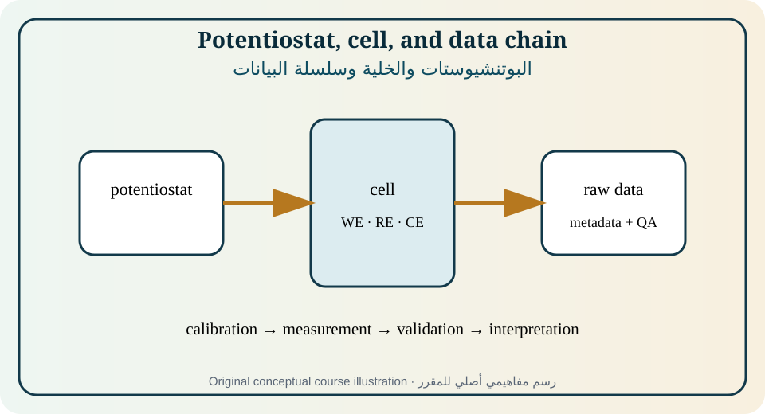
Figure 09. Original educational illustration created for this course from the relationships discussed in [2, Ch. 7, pp. 129–150; 3, Sec. 1.6; 4, Ch. 11, pp. 356–387; 7]. Conceptual, not measured data.الشكل 09. رسم تعليمي أصلي أُنشئ لهذا المقرر من العلاقات الواردة في [2, Ch. 7, pp. 129–150; 3, Sec. 1.6; 4, Ch. 11, pp. 356–387; 7]. مفاهيمي وليس بيانات مقاسة.
Two-electrode cells combine both electrode polarizations and are appropriate for complete-device performance. Three-electrode cells isolate a working electrode relative to a reference. Four-terminal or Kelvin arrangements separate current and voltage leads for low-resistance measurements. The configuration must match the scientific question.
تجمع الخلايا ثنائية الأقطاب استقطاب القطبين وتناسب أداء الجهاز الكامل. تعزل الخلايا ثلاثية الأقطاب قطباً عاملاً نسبة إلى مرجع. تفصل ترتيبات الأطراف الأربعة أو كلفن أسلاك التيار والجهد للقياسات منخفضة المقاومة. يجب أن يطابق الترتيب السؤال العلمي.
Potentiostat and galvanostat operation
عمل البوتنشيوستات والجلفانوستات
A potentiostat uses feedback to control working-electrode potential and measures current; a galvanostat controls current and measures potential. Compliance voltage, current range, bandwidth, input impedance, slew rate, and stability determine whether the command is actually achieved. Saturation or oscillation can silently invalidate data.
يستخدم البوتنشيوستات التغذية الراجعة لضبط جهد القطب العامل ويقيس التيار، بينما يضبط الجلفانوستات التيار ويقيس الجهد. تحدد حدود الجهد والتيار وعرض الحزمة ومقاومة الدخل وسرعة الاستجابة والثبات إمكان تحقيق الأمر فعلياً. قد يبطل التشبع أو التذبذب البيانات دون وضوح.
Working-electrode preparation
إعداد القطب العامل
Surface history affects area, roughness, oxide state, contamination, crystallography, and adsorption. A reproducible protocol specifies material grade, geometric area, polishing sequence, rinsing, pretreatment, storage, and time before measurement. “Clean” is not a measurable state unless defined by procedure and controls.
يؤثر تاريخ السطح في المساحة والخشونة وحالة الأكسيد والتلوث والبلورية والامتزاز. يحدد البروتوكول القابل للتكرار درجة المادة والمساحة الهندسية وتسلسل الصقل والغسل والمعالجة والتخزين والزمن قبل القياس. لا تكون كلمة «نظيف» حالة قابلة للقياس دون إجراء وضوابط.
Reference placement and iR drop
موضع المرجع وهبوط iR
The measured working potential includes uncompensated solution drop between the working surface and reference sensing point. A Luggin capillary can reduce distance but may disturb flow or contaminate the surface. Current interruption, positive feedback, EIS, and post-correction are options, each with stability and model limitations.
يشمل جهد العامل المقاس هبوط المحلول غير المعوض بين السطح ونقطة استشعار المرجع. تقلل شعيرة لوغن المسافة لكنها قد تزعج الجريان أو تلوث السطح. تشمل الخيارات قطع التيار والتغذية الموجبة وEIS والتصحيح اللاحق، ولكل منها قيود ثبات ونموذج.
Oxygen, atmosphere, and temperature
الأكسجين والجو والحرارة
Dissolved oxygen is an electroactive reactant and can dominate background or corrosion. Purging changes oxygen, convection, evaporation, and gas–liquid equilibrium; blanketing must be maintained during measurement. Temperature changes kinetics, transport, conductivity, reference potential, viscosity, solubility, and electrode stability.
الأكسجين الذائب متفاعل كهروكيميائي وقد يهيمن على الخلفية أو التآكل. يغير التطهير الأكسجين والحمل والتبخر واتزان الغاز–السائل، ويجب الحفاظ على الغطاء الغازي أثناء القياس. تغير الحرارة الحركية والنقل والتوصيلية وجهد المرجع واللزوجة والذوبانية وثبات القطب.
Calibration, dummy cells, and controls
المعايرة والخلايا الوهمية والضوابط
Instrument performance is checked with traceable resistors, capacitors, dummy cells, open/short tests, and known redox systems over the intended range. Blanks, replicate electrodes, positive controls, and method comparisons distinguish chemistry from hardware and analysis artifacts.
يتحقق أداء الجهاز بمقاومات وسعات وخلايا وهمية واختبارات فتح/قصر وأنظمة أكسدة واختزال معلومة ضمن المجال المقصود. تميز الفراغات والأقطاب المكررة والضوابط الإيجابية ومقارنات الطرق الكيمياء من شوائب الأجهزة والتحليل.
Noise, sampling, metadata, and uncertainty
الضوضاء وأخذ العينات والبيانات الوصفية وعدم اليقين
Shielding, grounding, cable routing, Faraday cages, vibration control, and appropriate ranges improve signal quality. Raw data must retain time, potential, current, frequency, electrode, area, temperature, composition, reference, pretreatment, instrument settings, and processing history. Uncertainty includes calibration, geometry, repeatability, drift, model choice, and sample variation.
يحسن التدريع والتأريض ومسارات الكابلات وقفص فاراداي وضبط الاهتزاز واختيار المجالات جودة الإشارة. يجب أن تحفظ البيانات الخام الزمن والجهد والتيار والتردد والقطب والمساحة والحرارة والتركيب والمرجع والمعالجة والإعدادات وسجل المعالجة. يشمل عدم اليقين المعايرة والهندسة والتكرارية والانجراف واختيار النموذج وتباين العينة.
Safety and environmental controls
ضوابط السلامة والبيئة
Electrochemical experiments can generate hydrogen, oxygen, chlorine, toxic metals, corrosive acids/alkalis, pressure, heat, and high current. Risk assessment must address ventilation, gas ignition, incompatibility, pressure relief, electrical isolation, personal protection, spill response, and waste segregation. Scaling current or area changes hazards nonlinearly.
قد تولد التجارب الهيدروجين والأكسجين والكلور ومعادن سامة وأحماضاً وقلويات وضغطاً وحرارة وتيارات عالية. يجب أن يشمل تقييم المخاطر التهوية والاشتعال وعدم التوافق وتنفيس الضغط والعزل الكهربائي والحماية والاستجابة للانسكاب وفصل النفايات. يغير تكبير التيار أو المساحة المخاطر بصورة غير خطية.
Equations, assumptions, and interpretation · المعادلات والافتراضات والتفسير
Equation · المعادلة
Purpose and limitation · الغرض والحدود
E_true ≈ E_meas − iR_u
Simple post-correction for uncompensated resistance with compatible sign convention.تصحيح بسيط للمقاومة غير المعوضة وفق اصطلاح إشارة متسق.
R_solution = ℓ/(κA)
Geometry relation for a uniform conductor; real cells require current-distribution consideration.علاقة هندسية لموصل متجانس؛ تحتاج الخلايا الحقيقية اعتبار توزيع التيار.
u_c = √(u_A²+u_B²+...)
Root-sum-square combined standard uncertainty for independent components.جمع عدم اليقين المعياري المستقل بطريقة الجذر التربيعي للمربعات.
S/N = signal amplitude / noise amplitude
Basic signal-to-noise definition; bandwidth and filtering must be reported.تعريف أساسي لنسبة الإشارة إلى الضوضاء مع بيان عرض الحزمة والترشيح.
Fully worked example · مثال محلول بالكامل
At 20 mA, an uncompensated resistance of 18 Ω produces iR=0.360 V. A measured working potential of −0.900 V vs reference corresponds to an estimated interfacial potential of −0.540 V if the entire drop is included with this sign convention. The correction is large, so positive-feedback stability and current-distribution assumptions require checking.
عند 20 mA ومقاومة غير معوضة 18 Ω يكون iR=0.360 V. يقابل جهد عامل مقاس −0.900 V مقابل المرجع جهداً بينياً مقدراً −0.540 V إذا كان الهبوط كله داخلاً وفق هذا الاصطلاح. التصحيح كبير، ولذلك يجب فحص ثبات التغذية الموجبة وافتراضات توزيع التيار.
Partially guided example · مثال موجه جزئياً
Design a three-electrode experiment to measure a Tafel slope in a low-conductivity electrolyte. Specify electrode geometry, reference placement, iR assessment, potential range, scan rate, surface preparation, replicates, and stop criteria.
صمم تجربة ثلاثية الأقطاب لقياس ميل تافل في إلكتروليت منخفض التوصيلية. حدد الهندسة وموقع المرجع وتقييم iR ومجال الجهد وسرعة المسح وإعداد السطح والتكرارات ومعايير الإيقاف.
Independent exercises
Foundation: Calculate uncompensated drop for a given current and resistance.
Standard: Select a measurement configuration for a full battery, a single cathode, and a low-resistance solid electrolyte.
Advanced: Build an uncertainty budget for an exchange-current measurement including area and iR correction.
تمارين مستقلة
تأسيسي: احسب الهبوط غير المعوض لتيار ومقاومة معلومين.
قياسي: اختر ترتيب القياس لبطارية كاملة وكاثود منفرد وإلكتروليت صلب منخفض المقاومة.
متقدم: أنشئ ميزانية عدم يقين لقياس تيار التبادل تشمل المساحة وتصحيح iR.
Practical or analytical activity · نشاط عملي أو تحليلي
Instrument qualification laboratory: test open, short, resistor, RC dummy cell, and a known reversible redox system. Document usable ranges, phase/current errors, compliance limits, noise floor, and acceptance criteria before measuring an unknown.
مختبر تأهيل الجهاز: اختبر الفتح والقصر والمقاومة وخلية RC وهمية ونظام أكسدة واختزال عكوساً معلوماً. وثق المجالات القابلة للاستخدام وأخطاء الطور/التيار وحدود الجهد وأرضية الضوضاء ومعايير القبول قبل قياس مجهول.
Modern application and case study · تطبيق حديث ودراسة حالة
Case: A published catalyst appears ten times more active than a replication. Audit geometric versus real area, reference conversion, iR correction, gas purity, rotation rate, loading, background subtraction, and normalization before attributing the difference to material synthesis.
حالة: يبدو حفاز منشور أنشط عشر مرات من تجربة إعادة. راجع المساحة الهندسية والحقيقية وتحويل المرجع وتصحيح iR ونقاوة الغاز والدوران والتحميل وطرح الخلفية والتطبيع قبل نسبة الفرق إلى التحضير.
Common misconception · مفهوم خاطئ شائع
A three-electrode cell does not automatically make the working-electrode potential correct; reference placement, current distribution, and instrument limits still matter.
لا تجعل الخلية ثلاثية الأقطاب جهد العامل صحيحاً تلقائياً؛ فما زال موقع المرجع وتوزيع التيار وحدود الجهاز مؤثرة.
Chapter summary and student takeaway · ملخص الوحدة وخلاصة الطالب
Traceable electrochemistry requires a measurement configuration matched to the question, reproducible surfaces, verified instruments, controlled environment, raw metadata, and explicit uncertainty.
تتطلب الكيمياء الكهروكيميائية القابلة للتتبع ترتيب قياس يطابق السؤال وأسطحاً قابلة للتكرار وأجهزة متحققة وبيئة مضبوطة وبيانات وصفية خاماً وعدم يقين صريحاً.
Immediate mastery checkتحقق فوري من الإتقان
Principal sources · المصادر الرئيسة: [2, Ch. 7, pp. 129–150; 3, Sec. 1.6; 4, Ch. 11, pp. 356–387; 7]. Terminology follows the source context and IUPAC where cited. Models must be used only within their stated assumptions.تتبع المصطلحات سياق المصادر وIUPAC حيث ذُكر. لا تستخدم النماذج إلا ضمن افتراضاتها.
10
MODULE 10 · الوحدة 10
Steady-State Polarization, Step, Pulse, and Coulometric Methods
12 h[1, Sec. 7.1 and 7.8; 2, Ch. 10, pp. 199–223; 4, Ch. 2, pp. 42–75]
Rationale
Time-domain methods perturb potential or current and observe relaxation. Their shapes separate charging, diffusion, kinetics, adsorption, and chemical coupling over complementary time scales.
Prerequisite knowledge
Modules 7–9 and transient diffusion.
مبرر الوحدة
تغير طرق المجال الزمني الجهد أو التيار وتراقب الاسترخاء. تفصل أشكالها الشحن والانتشار والحركية والامتزاز والاقتران الكيميائي على مقاييس زمنية متكاملة.
المعرفة السابقة
الوحدات 7–9 والانتشار العابر.
Module learning outcomes
Interpret steady polarization curves and partial currents.
Apply chronoamperometry, chronocoulometry, and chronopotentiometry.
Explain double-step, pulse, square-wave, and stripping methods.
Select time windows and controls that separate capacitive, kinetic, and transport response.
مخرجات تعلم الوحدة
تفسير منحنيات الاستقطاب المستقرة والتيارات الجزئية.
تطبيق الكرونوأمبيرومترية والكرونوكولومترية والكرونوبوتنشومترية.
شرح الخطوات المزدوجة والنبضات والموجة المربعة والتجريد.
اختيار النوافذ الزمنية والضوابط لفصل الاستجابة السعوية والحركية والنقلية.
Diagnostic pre-check · فحص تشخيصي
Immediately after a potential step, which contribution can be large even when no Faradaic reaction occurs?
مباشرة بعد خطوة جهد، أي مساهمة قد تكون كبيرة حتى دون تفاعل فارادي؟
A steady polarization curve maps current after transients have decayed, whereas step and pulse methods use the transient itself as information. The imposed waveform, initial condition, duration, sampling rate, and return step determine which processes are visible. [1,2,4]
يربط منحنى الاستقطاب المستقر التيار بعد زوال العابر، بينما تستخدم طرق الخطوة والنبضة العابر نفسه كمعلومة. تحدد الموجة المفروضة وحالة البداية والمدة ومعدل أخذ العينات وخطوة الرجوع العمليات الظاهرة. [1,2,4]
At early time, double-layer charging, instrument bandwidth, and uncompensated resistance may dominate. At intermediate time, electron transfer and semi-infinite diffusion can be observed. At long time, convection, finite geometry, chemical reactions, drift, and surface change become important.
قد تهيمن في الزمن المبكر شحنة الطبقة المزدوجة وعرض حزمة الجهاز والمقاومة غير المعوضة. وفي الزمن المتوسط تظهر حركية انتقال الإلكترون والانتشار شبه اللانهائي. وفي الزمن الطويل يصبح الحمل والهندسة المحدودة والتفاعلات الكيميائية والانجراف وتغير السطح مهمة.
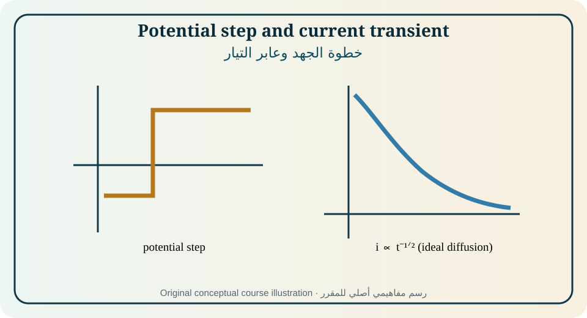
Figure 10. Original educational illustration created for this course from the relationships discussed in [1, Sec. 7.1 and 7.8; 2, Ch. 10, pp. 199–223; 4, Ch. 2, pp. 42–75]. Conceptual, not measured data.الشكل 10. رسم تعليمي أصلي أُنشئ لهذا المقرر من العلاقات الواردة في [1, Sec. 7.1 and 7.8; 2, Ch. 10, pp. 199–223; 4, Ch. 2, pp. 42–75]. مفاهيمي وليس بيانات مقاسة.
A steady-state curve is obtained only when current at each potential has reached a defined stable criterion. It can reveal kinetic regions, limiting currents, passivity, parallel reactions, and hysteresis. Slow scans are not automatically steady if the surface ages, dissolves, deposits, or changes composition.
لا يحصل منحنى مستقر إلا عندما يبلغ التيار عند كل جهد معيار ثبات معرفاً. يمكنه إظهار المجالات الحركية والتيارات الحدية والتخميل والتفاعلات المتوازية والتباطؤ. لا تكون المسوح البطيئة مستقرة تلقائياً إذا تقادم السطح أو ذاب أو ترسب أو تغير تركيبه.
Potential-step chronoamperometry
الكرونوأمبيرومترية بخطوة الجهد
A potential step changes the interfacial boundary condition rapidly and records current versus time. For a reversible diffusion-limited planar reaction, Cottrell behavior follows after the charging transient. Deviations may reflect finite kinetics, finite diffusion, adsorption, nucleation, convection, roughness, or chemical coupling.
تغير خطوة الجهد شرط الحد البيني سريعاً وتسجل التيار مع الزمن. لتفاعل عكوس محدود بالانتشار المستوي يتبع سلوك كوتريل بعد عابر الشحن. قد تعكس الانحرافات حركية محدودة أو انتشاراً محدوداً أو امتزازاً أو تنوياً أو حملاً أو خشونة أو اقتراناً كيميائياً.
Chronocoulometry
الكرونوكولومترية
Integrating current gives charge and can improve separation of diffusion charge, double-layer charge, and adsorbed-reactant charge. The Anson plot of Q versus t¹ᐟ² is linear for ideal planar diffusion; slope contains D and concentration, while the intercept combines nonfaradaic and adsorbed contributions. Baseline and integration limits are critical.
يعطي تكامل التيار الشحنة ويمكن أن يحسن فصل شحنة الانتشار والطبقة المزدوجة والمتفاعل الممتز. يكون مخطط أنسون Q مقابل t¹ᐟ² خطياً للانتشار المستوي المثالي؛ يحتوي الميل D والتركيز، بينما يجمع الجزء المقطوع المساهمات غير الفارادية والممتزة. تعد الخلفية وحدود التكامل حاسمة.
Current-step chronopotentiometry
الكرونوبوتنشومترية بخطوة التيار
A constant current forces the electrode potential to change as reactant is depleted. The transition time marks near-exhaustion at the surface in the ideal model and follows Sand-type scaling. Double-layer charging, iR, convection, and secondary reactions alter the transition.
تجبر خطوة تيار ثابت جهد القطب على التغير مع استنزاف المتفاعل. يحدد زمن الانتقال اقتراب نفاد المتفاعل السطحي في النموذج المثالي ويتبع تناسب ساند. تغير شحنة الطبقة وiR والحمل والتفاعلات الثانوية الانتقال.
Double-step methods
طرق الخطوة المزدوجة
A forward step generates product and a reverse step converts it back. The reverse/forward response tests product stability, coupled homogeneous reactions, adsorption, and collection efficiency. The switching time sets how far diffusion and chemistry proceed before reversal.
تولد الخطوة الأمامية منتجاً وتعكسه خطوة الرجوع. تختبر نسبة الاستجابة العكسية إلى الأمامية ثبات المنتج والتفاعلات المتجانسة المقترنة والامتزاز وكفاءة الجمع. يحدد زمن التحويل مدى تقدم الانتشار والكيمياء قبل العكس.
Pulse voltammetry and square-wave methods
الفولتمترية النبضية وطرق الموجة المربعة
Normal pulse, differential pulse, and square-wave methods sample current at carefully selected times to suppress charging background and enhance Faradaic sensitivity. Pulse amplitude, width, period, staircase increment, and sampling point determine resolution and kinetics. High sensitivity does not remove matrix or electrode-fouling effects.
تأخذ طرق النبضة العادية والتفاضلية والموجة المربعة عينات التيار في أزمنة مختارة لتثبيط خلفية الشحن وتعزيز الحساسية الفارادية. تحدد سعة النبضة وعرضها وفترتها وزيادة السلم ونقطة العينة الدقة والحركية. ولا تزيل الحساسية العالية تأثير المصفوفة أو تلوث القطب.
Stripping and coulometric analysis
التحليل بالتجريد والكولومترية
Stripping methods preconcentrate analyte by deposition or adsorption and then quantify it during removal. Sensitivity depends on deposition potential/time, mass transport, surface area, interference, and recovery. Controlled-potential coulometry can determine amount through total charge if completion and current efficiency are demonstrated.
تركز طرق التجريد المادة بالترسيب أو الامتزاز ثم تقيسها أثناء الإزالة. تعتمد الحساسية على جهد وزمن الترسيب والنقل والمساحة والتداخل والاسترجاع. يمكن للكولومترية بجهد مضبوط تحديد الكمية من الشحنة الكلية إذا ثبت الاكتمال وكفاءة التيار.
Method selection and time-scale design
اختيار الطريقة وتصميم المقياس الزمني
The waveform should be selected from the expected time constants and desired parameter. Fast sampling is required to resolve charging and kinetics, while long observation captures transport and chemistry but risks drift. A logarithmic or multiscale acquisition plan can reveal transitions without over-weighting one regime.
يجب اختيار الموجة من ثوابت الزمن المتوقعة والمعلمة المطلوبة. يلزم أخذ عينات سريع لحل الشحن والحركية، بينما يكشف الرصد الطويل النقل والكيمياء لكنه يعرض للانجراف. يمكن لخطة متعددة المقاييس أو لوغاريتمية كشف الانتقالات دون ترجيح مفرط لنظام واحد.
Equations, assumptions, and interpretation · المعادلات والافتراضات والتفسير
Equation · المعادلة
Purpose and limitation · الغرض والحدود
i_C = C_dl dE/dt
Ideal capacitive current for a changing potential.التيار السعوي المثالي عند تغير الجهد.
i_Cottrell = nFAD¹ᐟ²c/(πt)¹ᐟ²
Planar diffusion current after a sufficiently large reversible potential step.تيار الانتشار المستوي بعد خطوة جهد عكوسة كافية.
Q = ∫i dt
Charge from current integration.الشحنة من تكامل التيار.
Q = 2nFAD¹ᐟ²c t¹ᐟ²/π¹ᐟ² + Q_dl + nFAΓ
Anson-type chronocoulometric relation with double-layer and adsorbed amount Γ.علاقة أنسون مع شحنة الطبقة وكمية ممتزة Γ.
i τ¹ᐟ² = nFAD¹ᐟ²c π¹ᐟ²/2
Sand relation in a common ideal planar-current-step form.علاقة ساند بصيغة شائعة لخطوة تيار مستوية مثالية.
Fully worked example · مثال محلول بالكامل
A Cottrell experiment for n=1, A=0.071 cm², c=1.00 mM=1.00×10⁻⁶ mol·cm⁻³, D=7.0×10⁻⁶ cm²·s⁻¹ at t=0.500 s gives i= nFAD¹ᐟ²c/(πt)¹ᐟ² ≈10.2 μA. At 2.00 s the ideal current halves, confirming t⁻¹ᐟ² scaling.
في تجربة كوتريل حيث n=1 وA=0.071 cm² وc=1.00×10⁻⁶ mol·cm⁻³ وD=7.0×10⁻⁶ cm²·s⁻¹ وt=0.500 s يكون i≈10.2 μA. عند 2.00 s ينخفض التيار المثالي إلى النصف، تأكيداً لتناسب t⁻¹ᐟ².
Partially guided example · مثال موجه جزئياً
Given an Anson plot slope and intercept before and after adding an adsorbing analyte, determine the change in adsorbed amount Γ and explain how blank double-layer charge is removed.
أعطيت ميل وجزء مقطوع لمخطط أنسون قبل وبعد إضافة مادة ممتزة. حدد تغير Γ وفسر كيفية إزالة شحنة الطبقة المزدوجة للفراغ.
Independent exercises
Foundation: Calculate capacitive current for a linear potential ramp.
Standard: Estimate D from a Cottrell slope and propagate area uncertainty.
Advanced: Distinguish an EC mechanism from adsorption using double-step recovery and pulse-time dependence.
تمارين مستقلة
تأسيسي: احسب التيار السعوي لمسح جهد خطي.
قياسي: قدر D من ميل كوتريل وانشر عدم يقين المساحة.
متقدم: ميّز آلية EC من الامتزاز باستخدام استرجاع الخطوة المزدوجة واعتماد زمن النبضة.
Practical or analytical activity · نشاط عملي أو تحليلي
Laboratory: perform a potential step on a known redox couple, record current over logarithmically spaced time, subtract a blank, test Cottrell linearity, integrate to an Anson plot, and compare D from current and charge analyses.
مختبر: نفذ خطوة جهد لزوج معلوم وسجل التيار عبر زمن موزع لوغاريتمياً، واطرح الفراغ، واختبر خطية كوتريل، وكامل إلى مخطط أنسون، وقارن D من تحليلي التيار والشحنة.
Modern application and case study · تطبيق حديث ودراسة حالة
Case: Differential-pulse analysis gains sensitivity but loses accuracy in a fouling sample. Design cleaning, standard addition, blank, recovery, and electrode-renewal checks before increasing pulse amplitude.
حالة: يرفع التحليل بالنبضة التفاضلية الحساسية لكنه يفقد الدقة في عينة ملوثة للسطح. صمم تنظيفاً وإضافة قياسية وفراغاً واسترجاعاً وتجديداً للقطب قبل زيادة سعة النبضة.
Common misconception · مفهوم خاطئ شائع
The earliest measured points after a step are not automatically the most informative; they may be dominated by bandwidth, iR, and charging artifacts.
ليست أقدم النقاط بعد الخطوة الأكثر فائدة تلقائياً؛ فقد تهيمن عليها حدود الجهاز وiR وشوائب الشحن.
Chapter summary and student takeaway · ملخص الوحدة وخلاصة الطالب
Step and pulse methods encode mechanisms in time-dependent relaxation; quantitative interpretation requires the correct initial/boundary conditions and separation of charging, transport, kinetics, and chemistry.
ترمز طرق الخطوة والنبضة الآليات في الاسترخاء الزمني؛ ويتطلب التفسير الكمي شروط بداية وحدود صحيحة وفصل الشحن والنقل والحركية والكيمياء.
Immediate mastery checkتحقق فوري من الإتقان
Principal sources · المصادر الرئيسة: [1, Sec. 7.1 and 7.8; 2, Ch. 10, pp. 199–223; 4, Ch. 2, pp. 42–75]. Terminology follows the source context and IUPAC where cited. Models must be used only within their stated assumptions.تتبع المصطلحات سياق المصادر وIUPAC حيث ذُكر. لا تستخدم النماذج إلا ضمن افتراضاتها.
11
MODULE 11 · الوحدة 11
Cyclic Voltammetry and Linear Sweep Voltammetry
الفولتمترية الدورية والفولتمترية بالمسح الخطي
12 h[1, Sec. 7.2–7.4; 2, Ch. 9, pp. 174–198; 4, Ch. 6, pp. 178–228]
Rationale
Cyclic voltammetry is a compact experiment that reveals thermodynamics, diffusion, electron-transfer kinetics, adsorption, and coupled chemistry through peak positions, currents, shapes, and scan-rate dependence.
Prerequisite knowledge
Modules 7–10 and transient diffusion.
مبرر الوحدة
الفولتمترية الدورية تجربة مكثفة تكشف الديناميكا الحرارية والانتشار وحركية انتقال الإلكترون والامتزاز والكيمياء المقترنة من مواقع القمم وتياراتها وأشكالها واعتمادها على سرعة المسح.
المعرفة السابقة
الوحدات 7–10 والانتشار العابر.
Module learning outcomes
Explain CV waveforms, peak formation, and background current.
Apply Randles–Ševčík scaling and reversible peak criteria.
Distinguish reversible, quasi-reversible, irreversible, and adsorbed responses.
Use scan-rate and switching-potential studies to diagnose coupled mechanisms.
مخرجات تعلم الوحدة
شرح موجات CV وتكوين القمم والتيار الخلفي.
تطبيق تناسب راندلز–شيفتشيك ومعايير القمم العكوسة.
تمييز الاستجابات العكوسة وشبه العكوسة وغير العكوسة والممتزة.
استخدام سرعة المسح وجهد التحويل لتشخيص الآليات المقترنة.
Diagnostic pre-check · فحص تشخيصي
For an ideal diffusion-controlled reversible couple, how should peak current change when scan rate is multiplied by four?
لزوج عكوس مثالي محكوم بالانتشار، كيف يتغير تيار القمة عند مضاعفة سرعة المسح أربع مرات؟
In cyclic voltammetry, potential is swept linearly to a switching value and then reversed while current is recorded. A reversible dissolved redox couple gives a peak because reactant near the electrode is depleted as the diffusion layer grows; the reverse scan oxidizes or reduces the product accumulated near the surface. [1,2,4]
في الفولتمترية الدورية يمسح الجهد خطياً إلى قيمة تحويل ثم يعكس مع تسجيل التيار. يعطي زوج ذائب عكوس قمة لأن المتفاعل قرب القطب يستنزف مع نمو طبقة الانتشار؛ ويؤكسد أو يختزل المسح العكسي المنتج المتراكم قرب السطح. [1,2,4]
CV interpretation is comparative. Peak separation, peak-current ratio, peak width, formal potential, current scaling, and waveform changes with scan rate, concentration, switching potential, and electrode size are considered together. A single attractive voltammogram rarely proves a mechanism.
تفسير CV مقارن. تدرس مسافة القمم ونسبة تياراتها وعرضها والجهد الشكلي وتناسب التيار وتغير الشكل مع سرعة المسح والتركيز وجهد التحويل وحجم القطب معاً. نادراً ما يثبت مخطط واحد جذاب آلية.
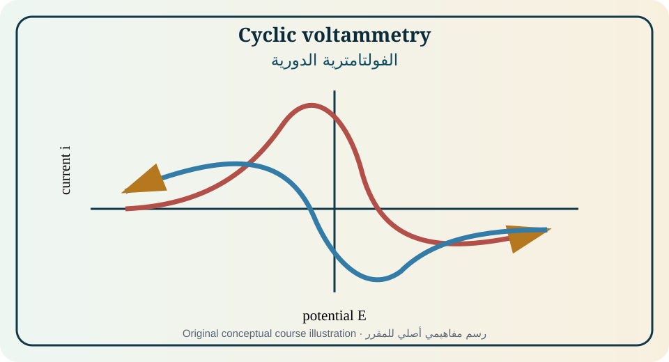
Figure 11. Original educational illustration created for this course from the relationships discussed in [1, Sec. 7.2–7.4; 2, Ch. 9, pp. 174–198; 4, Ch. 6, pp. 178–228]. Conceptual, not measured data.الشكل 11. رسم تعليمي أصلي أُنشئ لهذا المقرر من العلاقات الواردة في [1, Sec. 7.2–7.4; 2, Ch. 9, pp. 174–198; 4, Ch. 6, pp. 178–228]. مفاهيمي وليس بيانات مقاسة.
The initial potential, scan direction, switching potential, scan rate, number of cycles, and current sign must be stated. Capacitive current changes sign when scan direction reverses, while Faradaic current depends on reaction direction and concentration history. The first cycle may differ from later cycles because the surface and nearby solution are conditioned.
يجب بيان الجهد الابتدائي واتجاه المسح وجهد التحويل وسرعة المسح وعدد الدورات وإشارة التيار. يغير التيار السعوي إشارته عند عكس المسح، بينما يعتمد التيار الفارادي على اتجاه التفاعل وتاريخ التركيز. قد تختلف الدورة الأولى عن اللاحقة بسبب تهيئة السطح والمحلول القريب.
Reversible diffusion-controlled peaks
القمم العكوسة المحدودة بالانتشار
For an ideal planar reversible couple at 25°C, peak current scales with n³ᐟ²AD¹ᐟ²cv¹ᐟ², peak separation approaches 59/n mV, and anodic/cathodic peak currents have similar magnitude after background correction. These criteria assume semi-infinite diffusion, fast electron transfer, stable species, and negligible iR. [1,2]
للزوج العكوس المستوي المثالي عند 25°C يتناسب تيار القمة مع n³ᐟ²AD¹ᐟ²cv¹ᐟ²، وتقترب مسافة القمتين من 59/n mV، وتتقارب تيارات القمم بعد تصحيح الخلفية. تفترض المعايير انتشاراً شبه لانهائي وانتقالاً سريعاً وثبات الأنواع وiR مهملاً. [1,2]
Formal potential and peak metrics
الجهد الشكلي ومقاييس القمم
For a simple reversible couple with similar diffusion coefficients, the midpoint of anodic and cathodic peak potentials approximates the formal potential under the measurement conditions. Peak position is affected by reference scale, activity, complexation, temperature, junction potential, and uncompensated resistance.
للزوج العكوس البسيط ذي معاملي انتشار متقاربين يقارب متوسط جهدي القمتين الجهد الشكلي في ظروف القياس. يتأثر موضع القمة بمقياس المرجع والنشاط والتعقيد والحرارة وجهد الوصلة والمقاومة غير المعوضة.
Quasi-reversible and irreversible response
الاستجابة شبه العكوسة وغير العكوسة
Finite heterogeneous rate broadens and separates peaks as scan rate increases. Irreversible systems may show one dominant peak whose potential shifts with log scan rate. Quantitative treatment requires dimensionless kinetic parameters, accurate iR correction, diffusion coefficients, and a specified mechanism.
توسع السرعة السطحية المحدودة القمم وتفصلها مع زيادة سرعة المسح. قد تظهر الأنظمة غير العكوسة قمة مهيمنة واحدة ينزاح جهدها مع لوغاريتم سرعة المسح. يتطلب التحليل الكمي معلمات حركية بلا أبعاد وتصحيحاً دقيقاً لـiR ومعاملات انتشار وآلية محددة.
Adsorption and surface-confined species
الامتزاز والأنواع المحصورة سطحياً
For an ideal surface-confined reversible redox layer, peak current scales with scan rate rather than its square root, and the integrated charge gives surface coverage. Peak shape and separation depend on interactions, film resistance, nonuniform sites, ion motion, and coupled structural change.
لطبقة أكسدة واختزال سطحية عكوسة مثالية يتناسب تيار القمة مع سرعة المسح لا جذرها، وتعطي الشحنة المتكاملة التغطية السطحية. يعتمد شكل القمة وفصلها على التآثرات ومقاومة الغشاء وعدم تجانس المواقع وحركة الأيون والتغير البنيوي المقترن.
Coupled chemical mechanisms
الآليات الكيميائية المقترنة
EC, CE, ECE, catalytic, dimerization, and follow-up mechanisms alter reverse peaks and scan-rate dependence. Faster scanning can outrun a chemical step and restore reversibility; slower scanning allows conversion and suppresses the return peak. Mechanism assignment should be tested by concentration, time, and simulation trends.
تغير آليات EC وCE وECE والتحفيز والتضاعف والتفاعلات اللاحقة القمة العكسية واعتماد سرعة المسح. قد يتجاوز المسح الأسرع الخطوة الكيميائية ويستعيد العكوسية، بينما يسمح المسح الأبطأ بالتحول ويثبط قمة الرجوع. يجب اختبار تعيين الآلية باتجاهات التركيز والزمن والمحاكاة.
Multiple reactions and electrochemical windows
التفاعلات المتعددة والنوافذ الكهروكيميائية
Overlapping redox couples, solvent breakdown, electrode oxidation, hydrogen evolution, oxygen reduction, and impurities add currents. Background subtraction is valid only when the blank has the same surface state and matrix. The usable window is potential-, time-, and material-dependent rather than an immutable solvent number.
تضيف أزواج متداخلة وتحلل المذيب وأكسدة القطب وتطور الهيدروجين واختزال الأكسجين والشوائب تيارات. يصح طرح الخلفية فقط عندما يطابق الفراغ حالة السطح والمصفوفة. النافذة القابلة للاستخدام تعتمد على الجهد والزمن والمادة وليست رقماً ثابتاً للمذيب.
Microelectrode and thin-layer CV
CV بالأقطاب الميكروية والطبقات الرقيقة
Microelectrodes favor radial diffusion and sigmoidal steady waves at slower scans, while thin-layer cells confine the total analyte amount and can approach complete electrolysis. These geometries reduce some transport ambiguities but introduce accurate-volume, geometry, and surface-area requirements.
تفضل الأقطاب الميكروية الانتشار الشعاعي والموجات المستقرة السيغمويدية عند المسوح الأبطأ، بينما تحصر خلايا الطبقة الرقيقة كمية المادة وقد تقترب من التحليل الكامل. تقلل هذه الهندسات بعض غموض النقل لكنها تتطلب حجماً وهندسة ومساحة دقيقة.
Equations, assumptions, and interpretation · المعادلات والافتراضات والتفسير
Equation · المعادلة
Purpose and limitation · الغرض والحدود
E(t)=E_i±vt
Linear potential sweep; v is scan rate in V·s⁻¹.مسح جهد خطي؛ v سرعة المسح بوحدة V·s⁻¹.
i_p=2.69×10⁵ n³ᐟ²AD¹ᐟ²cv¹ᐟ²
Randles–Ševčík at 298 K with A in cm², D in cm²·s⁻¹, c in mol·cm⁻³.راندلز–شيفتشيك عند 298 K بوحدات cm² وcm²·s⁻¹ وmol·cm⁻³.
ΔE_p≈59/n mV at 298 K
Ideal reversible peak separation for a simple dissolved couple.مسافة القمتين المثالية لزوج ذائب بسيط عكوس.
E°′≈(E_pa+E_pc)/2
Formal potential estimate for a simple reversible couple.تقدير الجهد الشكلي لزوج عكوس بسيط.
i_p,surf = n²F²AΓv/(4RT)
Ideal reversible surface-confined peak current.تيار قمة مثالي لنوع محصور سطحياً.
Fully worked example · مثال محلول بالكامل
A one-electron reversible couple at 298 K has A=0.071 cm², D=7.0×10⁻⁶ cm²·s⁻¹, c=1.00 mM, and v=0.100 V·s⁻¹. i_p=2.69×10⁵(1)³ᐟ²(0.071)(7.0×10⁻⁶)¹ᐟ²(1.0×10⁻⁶)(0.100)¹ᐟ²≈16.0 μA. Quadrupling v should double i_p if diffusion control remains valid.
لزوج عكوس أحادي الإلكترون عند 298 K حيث A=0.071 cm² وD=7.0×10⁻⁶ cm²·s⁻¹ وc=1.00 mM وv=0.100 V·s⁻¹ يكون i_p≈16.0 μA. ينبغي أن تضاعف زيادة v أربع مرات تيار القمة إذا بقي تحكم الانتشار صالحاً.
Partially guided example · مثال موجه جزئياً
Peak currents measured from 10 to 500 mV·s⁻¹ are supplied. Plot log i_p against log v, determine the slope, and decide whether diffusion control, surface confinement, or a mixed regime is supported.
أعطيت تيارات قمم من 10 إلى 500 mV·s⁻¹. ارسم log i_p مقابل log v وحدد الميل وقرر هل تدعم البيانات الانتشار أو الحصر السطحي أو نظاماً مختلطاً.
Independent exercises
Foundation: Calculate expected ΔE_p and E°′ from peak potentials.
Standard: Estimate D from i_p versus v¹ᐟ² and report uncertainty.
Advanced: Design scan-rate and concentration tests to distinguish EC chemistry from adsorption.
تمارين مستقلة
تأسيسي: احسب ΔE_p وE°′ المتوقعين من جهود القمم.
قياسي: قدر D من i_p مقابل v¹ᐟ² واعرض عدم اليقين.
متقدم: صمم اختبارات سرعة وتركيز لتمييز كيمياء EC من الامتزاز.
Practical or analytical activity · نشاط عملي أو تحليلي
Laboratory: record CVs of a reversible standard at five scan rates, then of a system with coupled chemistry or surface adsorption. Correct background and iR, extract peak metrics and charge, and defend the mechanism using multiple diagnostics rather than one ratio.
مختبر: سجل CV لمعيار عكوس عند خمس سرعات ثم لنظام ذي كيمياء مقترنة أو امتزاز. صحح الخلفية وiR واستخرج مقاييس القمم والشحنة ودافع عن الآلية باستخدام تشخيصات متعددة لا نسبة واحدة.
Modern application and case study · تطبيق حديث ودراسة حالة
Case: A battery electrode shows growing peak separation over cycles. Evaluate increased resistance, slower interfacial kinetics, phase transformation, loss of active area, particle cracking, and reference drift before assigning one cause.
حالة: يظهر قطب بطارية زيادة في فصل القمم مع الدورات. قيّم زيادة المقاومة وبطء الحركية والتحول الطوري وفقد المساحة وتشقق الجسيمات وانجراف المرجع قبل تعيين سبب واحد.
Common misconception · مفهوم خاطئ شائع
The familiar 59 mV peak separation applies only to a simple ideal reversible one-electron couple at 25°C under suitable conditions.
تنطبق مسافة 59 mV المألوفة فقط على زوج أحادي الإلكترون بسيط عكوس مثالي عند 25°C وفي ظروف مناسبة.
Chapter summary and student takeaway · ملخص الوحدة وخلاصة الطالب
CV is interpreted through waveform, peak metrics, current scaling, charge, and systematic perturbations; mechanism claims require converging evidence.
تفسر CV من الموجة ومقاييس القمم وتناسب التيار والشحنة والاضطرابات المنهجية؛ وتتطلب ادعاءات الآلية أدلة متقاربة.
Immediate mastery checkتحقق فوري من الإتقان
Principal sources · المصادر الرئيسة: [1, Sec. 7.2–7.4; 2, Ch. 9, pp. 174–198; 4, Ch. 6, pp. 178–228]. Terminology follows the source context and IUPAC where cited. Models must be used only within their stated assumptions.تتبع المصطلحات سياق المصادر وIUPAC حيث ذُكر. لا تستخدم النماذج إلا ضمن افتراضاتها.
12
MODULE 12 · الوحدة 12
AC Methods, Electrochemical Impedance Spectroscopy, and In Situ Probes
طرق التيار المتناوب ومطيافية الممانعة والمجسات في الموقع
11 h[1, Sec. 7.9–7.14; 2, Ch. 11, pp. 224–252; 4, Chs. 8 and 10]
Rationale
Frequency-domain and coupled spectroscopic methods separate processes by time scale and provide interfacial parameters that direct-current measurements cannot isolate easily.
Prerequisite knowledge
Modules 6–11, complex numbers, circuits, and sinusoidal functions.
مبرر الوحدة
تفصل طرق المجال الترددي والطرق الطيفية المقترنة العمليات بحسب المقياس الزمني وتوفر معلمات بينية يصعب عزلها بقياسات التيار المستمر.
What is the phase angle of an ideal capacitor, and how does its impedance magnitude vary with frequency?
ما زاوية طور المكثف المثالي وكيف تتغير قيمة ممانعته مع التردد؟
EIS applies a small sinusoidal perturbation around a controlled DC operating point and measures the amplitude ratio and phase shift over frequency. The impedance function is meaningful for a linear, causal, sufficiently stable system. Different frequency ranges emphasize wiring, solution, double-layer, charge-transfer, adsorption, diffusion, and porous processes. [1,2,4]
تطبق EIS اضطراباً جيبياً صغيراً حول نقطة تشغيل مستمرة مضبوطة وتقيس نسبة السعات وفرق الطور عبر التردد. تكون دالة الممانعة ذات معنى لنظام خطي سببي ثابت بما يكفي. تبرز مجالات ترددية مختلفة الأسلاك والمحلول والطبقة المزدوجة وانتقال الشحنة والامتزاز والانتشار والمسام. [1,2,4]
Equivalent circuits are compact hypotheses about process connectivity. A good fit is not proof of mechanism; parameter trends, residuals, uncertainty, physical scaling, and independent measurements are required.
الدوائر المكافئة فرضيات مختصرة لاتصال العمليات. لا تثبت الملاءمة الجيدة الآلية؛ بل تلزم اتجاهات المعلمات والبواقي وعدم اليقين والتناسب الفيزيائي والقياسات المستقلة.
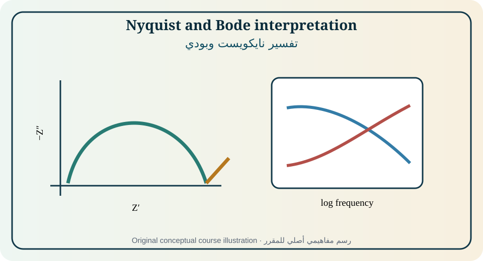
Figure 12. Original educational illustration created for this course from the relationships discussed in [1, Sec. 7.9–7.14; 2, Ch. 11, pp. 224–252; 4, Chs. 8 and 10]. Conceptual, not measured data.الشكل 12. رسم تعليمي أصلي أُنشئ لهذا المقرر من العلاقات الواردة في [1, Sec. 7.9–7.14; 2, Ch. 11, pp. 224–252; 4, Chs. 8 and 10]. مفاهيمي وليس بيانات مقاسة.
A sinusoidal potential produces a current at the same frequency in a linear system, with different amplitude and phase. The perturbation must be small enough to avoid harmonics and large enough for adequate signal. An amplitude test and repeat measurement are stronger evidence than using a customary value without verification.
ينتج الجهد الجيبي تياراً بالتردد نفسه في النظام الخطي مع سعة وطور مختلفين. يجب أن يكون الاضطراب صغيراً لتجنب التوافقيات وكبيراً لإشارة كافية. ويعد اختبار السعة وإعادة القياس دليلاً أقوى من استخدام قيمة معتادة دون تحقق.
Complex impedance representations
تمثيلات الممانعة المركبة
Z=Z′+jZ″ can be plotted in the complex plane or as magnitude and phase versus frequency. Nyquist plots make arcs and intercepts visible but hide frequency spacing; Bode plots preserve frequency and reveal slopes and plateaus. Both should be inspected with sign convention stated.
يمكن رسم Z=Z′+jZ″ في المستوى المركب أو كقيمة وطور مقابل التردد. تظهر نايكويست الأقواس والاعتراضات لكنها تخفي تباعد التردد، بينما تحفظ بودي التردد وتظهر الميل والمنصات. يجب فحص الاثنين مع بيان اصطلاح الإشارة.
Ideal elements and time constants
العناصر المثالية وثوابت الزمن
A resistor is frequency independent and in phase. A capacitor has magnitude 1/ωC and −90° phase under the common convention. A parallel RC element generates a semicircle with characteristic frequency 1/(2πRC). Real systems often show distributed rather than single relaxation times.
المقاومة مستقلة عن التردد وفي الطور. للمكثف قيمة 1/ωC وطور −90° وفق الاصطلاح الشائع. يولد عنصر RC متواز قوساً نصف دائري بتردد مميز 1/(2πRC). تظهر الأنظمة الحقيقية غالباً توزيعات لأزمنة الاسترخاء لا زمناً واحداً.
Randles model and charge transfer
نموذج راندلز وانتقال الشحنة
A basic Randles circuit places solution resistance in series with a parallel double-layer/faradaic interface. Charge-transfer resistance is related to exchange current near equilibrium, while diffusion impedance is placed in the Faradaic path. Topology expresses which current must pass through each process.
تضع دائرة راندلز الأساسية مقاومة المحلول على التوالي مع واجهة متوازية للطبقة المزدوجة والفرع الفارادي. ترتبط مقاومة انتقال الشحنة بتيار التبادل قرب الاتزان، وتوضع ممانعة الانتشار في المسار الفارادي. تعبر الطوبولوجيا عن العمليات التي يجب أن يمر بها كل تيار.
CPE, Warburg, and distributed elements
CPE وواربورغ والعناصر الموزعة
A constant-phase element describes a power-law phase response and often fits roughness, heterogeneity, porous geometry, or distributions, but Q is not a capacitance unless α=1 or a justified conversion is used. Warburg behavior reflects diffusion under specific geometry and boundary conditions; a 45° line is not unique proof of diffusion.
يصف عنصر الطور الثابت استجابة طور بقانون قوة ويلائم غالباً الخشونة وعدم التجانس والمسام أو التوزيعات، لكن Q ليست سعة إلا عندما α=1 أو باستخدام تحويل مبرر. يعكس سلوك واربورغ الانتشار في هندسة وشروط حدود محددة؛ ولا يثبت خط 45° وحده الانتشار.
Validity and artifacts
الصلاحية والشوائب
Linearity, stability, and causality are prerequisites. Lead inductance, stray capacitance, reference impedance, poor grounding, cable motion, current-distribution effects, saturation, low-frequency drift, and bubbles can mimic electrochemical features. Kramers–Kronig consistency and residual inspection support validation but cannot identify the correct mechanism alone.
الخطية والثبات والسببية شروط أساسية. يمكن لمحاثة الأسلاك والسعة الطفيلية وممانعة المرجع وسوء التأريض وحركة الكابلات وتوزيع التيار والتشبع والانجراف والفقاعات تقليد خصائص كهروكيميائية. يدعم اتساق كرامرز–كرونغ وفحص البواقي التحقق لكنه لا يحدد الآلية الصحيحة وحده.
Fitting and model selection
الملاءمة واختيار النموذج
Complex nonlinear least squares should fit real and imaginary data with disclosed weighting. Parameter confidence, covariance, residual structure, sensitivity, initial guesses, and competing models must be reported. Prefer the simplest physically defensible model that answers the question and remains stable across replicates and conditions.
يجب أن تلائم المربعات الصغرى المركبة البيانات الحقيقية والتخيلية بأوزان معلنة. يجب عرض ثقة المعلمات وترابطها وبنية البواقي والحساسية والتخمينات والنماذج المنافسة. يفضل أبسط نموذج فيزيائي قابل للدفاع يجيب السؤال ويبقى ثابتاً عبر التكرارات والظروف.
Spectroelectrochemistry and in situ methods
الطيف الكهروكيميائي والطرق في الموقع
Optical absorption, reflectance, Raman, IR, quartz-crystal mass, microscopy, and surface probes can correlate charge with species, bonding, mass, morphology, or phase. The electrochemical and spectroscopic time/space resolutions and sampling volumes must be aligned; otherwise apparent correlations may compare different regions or states.
يمكن للامتصاص والانعكاس ورامان وIR وميزان البلورة والمجهر والمجسات السطحية ربط الشحنة بالأنواع والروابط والكتلة والمورفولوجيا والطور. يجب مواءمة الدقة الزمنية والمكانية وحجم العينة بين القياسين، وإلا قد تقارن الارتباطات الظاهرية مناطق أو حالات مختلفة.
Equations, assumptions, and interpretation · المعادلات والافتراضات والتفسير
Ideal resistor and capacitor impedances.ممانعة المقاومة والمكثف المثاليين.
f₀=1/(2πRC)
Characteristic frequency of an ideal parallel RC relaxation.التردد المميز لاسترخاء RC متواز مثالي.
Z_CPE=1/[Q(jω)^α]
Constant-phase element; Q units depend on α.عنصر الطور الثابت؛ تعتمد وحدات Q على α.
Z_W=σ(1−j)/√ω
A common semi-infinite Warburg form under a stated convention.صيغة شائعة لواربورغ شبه اللانهائي وفق اصطلاح محدد.
Fully worked example · مثال محلول بالكامل
A Nyquist semicircle has a high-frequency intercept of 8 Ω and a low-frequency intercept of 108 Ω; its apex occurs at 159 Hz. R_s=8 Ω and R_ct=100 Ω. C_dl=1/(2πR_ctf)=10.0 μF. The assignment is valid only if one ideal RC process and negligible diffusion/inductance describe the data.
لقوس نايكويست اعتراض عال التردد 8 Ω ومنخفض التردد 108 Ω وقمة عند 159 Hz. إذن R_s=8 Ω وR_ct=100 Ω وC_dl=1/(2πR_ctf)=10.0 μF. يصح التعيين فقط إذا وصف البيانات عنصر RC مثالي واحد مع إهمال الانتشار والمحاثة.
Partially guided example · مثال موجه جزئياً
Given a depressed arc fitted by R||(CPE), compare two conversions from Q and α to effective capacitance and state why the chosen formula must match circuit topology.
أعطيت قوساً منخفضاً ملائماً بـR||(CPE). قارن تحويلين من Q وα إلى سعة فعالة وبيّن لماذا يجب أن توافق الصيغة طوبولوجيا الدائرة.
Independent exercises
Foundation: Convert Z′ and Z″ to magnitude and phase.
Standard: Extract R_s, R_ct, and C from an ideal semicircle.
Advanced: Compare two equivalent circuits using residuals, parameter identifiability, and independent surface evidence.
تمارين مستقلة
تأسيسي: حوّل Z′ وZ″ إلى القيمة والطور.
قياسي: استخرج R_s وR_ct وC من قوس مثالي.
متقدم: قارن دائرتين باستخدام البواقي وقابلية تعيين المعلمات ودليل سطحي مستقل.
Practical or analytical activity · نشاط عملي أو تحليلي
Laboratory: qualify the instrument with a dummy cell, then measure a redox couple or corroding electrode over a justified frequency range. Test amplitude, repeatability, OCP drift, Nyquist/Bode consistency, fit at least two models, and report residuals and uncertainty.
مختبر: أهّل الجهاز بخلية وهمية ثم قس زوجاً أو قطباً متآكلاً عبر مجال ترددي مبرر. اختبر السعة والتكرارية وانجراف OCP واتساق نايكويست/بودي، ولائم نموذجين على الأقل واعرض البواقي وعدم اليقين.
Modern application and case study · تطبيق حديث ودراسة حالة
Case: A coating spectrum develops a second time constant after immersion. Combine capacitance, pore resistance, microscopy, adhesion, water uptake, and exposure controls before assigning underfilm corrosion.
حالة: يظهر طيف طلاء ثابت زمن ثانياً بعد الغمر. اجمع السعة ومقاومة المسام والمجهر والالتصاق وامتصاص الماء وضوابط التعرض قبل تعيين تآكل تحت الغشاء.
Common misconception · مفهوم خاطئ شائع
A circuit element is not automatically a unique physical object; several mechanisms can generate similar impedance shapes.
لا يمثل عنصر الدائرة تلقائياً جسماً فيزيائياً فريداً؛ فقد تولد آليات متعددة أشكال ممانعة متشابهة.
Chapter summary and student takeaway · ملخص الوحدة وخلاصة الطالب
EIS resolves frequency-dependent response but remains an inverse problem; validation, physically constrained models, uncertainty, and independent evidence are essential.
تفصل EIS الاستجابة المعتمدة على التردد لكنها تبقى مسألة عكسية؛ لذا يلزم التحقق والنماذج المقيدة فيزيائياً وعدم اليقين والدليل المستقل.
Immediate mastery checkتحقق فوري من الإتقان
Principal sources · المصادر الرئيسة: [1, Sec. 7.9–7.14; 2, Ch. 11, pp. 224–252; 4, Chs. 8 and 10]. Terminology follows the source context and IUPAC where cited. Models must be used only within their stated assumptions.تتبع المصطلحات سياق المصادر وIUPAC حيث ذُكر. لا تستخدم النماذج إلا ضمن افتراضاتها.
13
MODULE 13 · الوحدة 13
Electrodeposition, Nucleation, Growth, and Current Distribution
الترسيب الكهروكيميائي والتنوي والنمو وتوزيع التيار
11 h[1, Ch. 8, pp. 242–280; 2, Ch. 15; 4, Ch. 9, pp. 283–316]
Rationale
Electrodeposition transforms ions into functional solids. Product thickness, composition, morphology, adhesion, roughness, and uniformity emerge from thermodynamics, kinetics, transport, nucleation, additives, and cell geometry.
Prerequisite knowledge
Modules 1–11, phase transformations, and materials chemistry.
مبرر الوحدة
يحول الترسيب الكهروكيميائي الأيونات إلى مواد صلبة وظيفية. تنشأ السماكة والتركيب والمورفولوجيا والالتصاق والخشونة والتجانس من الديناميكا والحركية والنقل والتنوي والإضافات وهندسة الخلية.
المعرفة السابقة
الوحدات 1–11 والتحولات الطورية وكيمياء المواد.
Module learning outcomes
Relate deposition overpotential to nucleation, growth, morphology, and side reactions.
Calculate mass, thickness, current efficiency, and deposition rate.
Explain primary, secondary, and tertiary current distribution.
Evaluate additives, complexing agents, alloy deposition, and process controls.
Why can a higher cathodic overpotential increase nucleation density yet worsen hydrogen evolution?
لماذا قد يزيد فرط الجهد الكاثودي كثافة التنوي ويزيد في الوقت نفسه تطور الهيدروجين سوءاً؟
Metal deposition includes ion transport, desolvation or ligand exchange, electron transfer, adatom formation, surface diffusion, nucleation, crystal growth, and possible hydrogen evolution. The slowest or most sensitive step can change with potential, concentration, additives, agitation, and substrate. [1,4]
يشمل ترسيب المعدن نقل الأيون ونزع الإذابة أو تبادل الربيطة وانتقال الإلكترون وتكوين الذرات السطحية وانتشارها والتنوي ونمو البلورة وتطور الهيدروجين المحتمل. قد تتغير المرحلة الأبطأ أو الأكثر حساسية مع الجهد والتركيز والإضافات والتحريك والركيزة. [1,4]
A deposit that meets average mass can still fail because of edge buildup, pores, dendrites, internal stress, poor adhesion, alloy segregation, or roughness. Current distribution and surface evolution must therefore be treated as design variables, not afterthoughts.
قد يحقق الترسيب الكتلة المتوسطة ويفشل بسبب تراكم الحواف أو المسام أو التغصنات أو الإجهاد الداخلي أو ضعف الالتصاق أو انفصال السبيكة أو الخشونة. لذلك يجب معاملة توزيع التيار وتطور السطح كمتغيرات تصميمية.
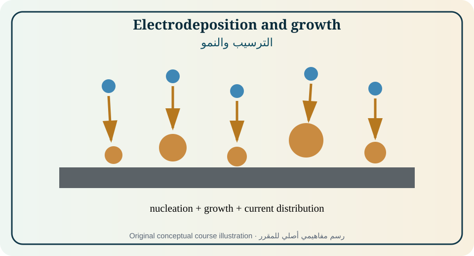
Figure 13. Original educational illustration created for this course from the relationships discussed in [1, Ch. 8, pp. 242–280; 2, Ch. 15; 4, Ch. 9, pp. 283–316]. Conceptual, not measured data.الشكل 13. رسم تعليمي أصلي أُنشئ لهذا المقرر من العلاقات الواردة في [1, Ch. 8, pp. 242–280; 2, Ch. 15; 4, Ch. 9, pp. 283–316]. مفاهيمي وليس بيانات مقاسة.
Equilibrium potential defines the thermodynamic metal/ion condition, while cathodic overpotential drives net reduction. Additional overpotential may be required for nucleation because forming a new phase creates interfacial energy. Underpotential deposition can occur when strong substrate–deposit interaction stabilizes a submonolayer before bulk deposition.
يحدد جهد الاتزان حالة معدن/أيون الديناميكية، بينما يدفع فرط الجهد الكاثودي الاختزال الصافي. قد يلزم فرط جهد إضافي للتنوي لأن تكوين طور جديد يولد طاقة بينية. وقد يحدث الترسيب تحت الجهد عندما يثبت تآثر الركيزة–المترسب طبقة دون أحادية قبل الترسيب الحجمي.
Nucleation and growth
التنوي والنمو
Nuclei form when the electrochemical driving force overcomes the energetic cost of new interface. Instantaneous nucleation activates many sites early; progressive nucleation activates sites over time. Current transients can constrain nucleation/growth models, but roughness, overlap, transport, and hydrogen can obscure ideal exponents.
تتشكل النوى عندما يتجاوز الدافع الكهروكيميائي كلفة الواجهة الجديدة. ينشط التنوي اللحظي مواقع كثيرة مبكراً، بينما ينشط التنوي التدريجي مواقع مع الزمن. يمكن لعوابـر التيار تقييد نماذج التنوي والنمو، لكن الخشونة والتداخل والنقل والهيدروجين قد تحجب الأسس المثالية.
Mass transport and morphology
نقل الكتلة والمورفولوجيا
At high current, depletion near protrusions and nonuniform fields can produce rough, powdery, or dendritic growth. Forced convection raises limiting current and can improve supply, but excessive shear or gas bubbles may cause pits. Pulse plating alternates growth and relaxation to modify diffusion and nucleation.
عند التيار العالي قد يؤدي الاستنزاف قرب البروزات والمجالات غير المنتظمة إلى نمو خشن أو مسحوقي أو تغصني. يرفع الحمل القسري التيار الحدي ويحسن الإمداد، لكن القص المفرط أو الفقاعات قد يسبب حفراً. يبدل الطلاء النبضي بين النمو والاسترخاء لتعديل الانتشار والتنوي.
Current distribution and throwing power
توزيع التيار وقدرة التغطية
Primary current distribution follows geometry and solution resistance, secondary distribution adds activation polarization, and tertiary distribution includes concentration variation. High polarization can improve uniformity by reducing geometric sensitivity, while low conductivity and complex shapes can create large edge effects.
يتبع توزيع التيار الأولي الهندسة ومقاومة المحلول، ويضيف الثانوي استقطاب التنشيط، ويشمل الثالث تغير التركيز. قد يحسن الاستقطاب العالي التجانس بتقليل الحساسية الهندسية، بينما تولد التوصيلية المنخفضة والأشكال المعقدة تأثيرات حواف كبيرة.
Additives, leveling, and brightening
الإضافات والتسوية والتلميع
Adsorbing additives can inhibit selected sites, change nucleation, suppress hydrogen, refine grains, level recesses, or brighten the surface. Their effect depends on transport, potential, concentration, decomposition, co-additives, and impurity buildup. A formulation is a dynamic process system rather than a single molecular mechanism.
يمكن للإضافات الممتزة تثبيط مواقع مختارة وتغيير التنوي وتثبيط الهيدروجين وتنقية الحبيبات وتسوية التجاويف وتلميع السطح. يعتمد أثرها على النقل والجهد والتركيز والتحلل والإضافات المشتركة وتراكم الشوائب. الصياغة نظام عملية ديناميكي لا آلية جزيئية منفردة.
Complex electrolytes and alloy deposition
الإلكتروليتات المعقدة وترسيب السبائك
Complexation shifts free-ion activity and deposition potential, improves solubility, and can bring two metals into a useful co-deposition range. Alloy composition depends on partial currents, mass transport, induced/anomalous codeposition, pH, and local chemistry. Bulk bath composition alone does not predict deposit composition.
يغير التعقيد نشاط الأيون الحر وجهد الترسيب ويحسن الذوبان ويمكن أن يقرب معدنين إلى مجال ترسيب مشترك. يعتمد تركيب السبيكة على التيارات الجزئية والنقل والترسيب المستحث أو الشاذ وpH والكيمياء المحلية. لا يتنبأ تركيب الحمام الحجمي وحده بتركيب المترسب.
Quality, stress, and post-treatment
الجودة والإجهاد والمعالجة اللاحقة
Deposit evaluation includes thickness distribution, current efficiency, composition, porosity, roughness, hardness, adhesion, internal stress, hydrogen content, and corrosion performance. Rinsing, heat treatment, passivation, and waste treatment can be as important as the deposition waveform.
يشمل تقييم المترسب توزيع السماكة وكفاءة التيار والتركيب والمسامية والخشونة والصلادة والالتصاق والإجهاد الداخلي ومحتوى الهيدروجين وأداء التآكل. قد يكون الشطف والمعالجة الحرارية والتخميل ومعالجة النفايات بأهمية موجة الترسيب نفسها.
Equations, assumptions, and interpretation · المعادلات والافتراضات والتفسير
Equation · المعادلة
Purpose and limitation · الغرض والحدود
m=η_FMIt/(nF)
Deposit mass from charge and current efficiency.كتلة المترسب من الشحنة وكفاءة التيار.
h=m/(ρA)
Average thickness for a compact uniform deposit.السماكة المتوسطة لمترسب مدمج متجانس.
j_L=nFDc/δ
Transport-limited deposition current density.كثافة تيار الترسيب المحدود بالنقل.
Nickel is plated at 5.00 A for 20.0 min on 200 cm² with η_F=0.90, M=58.69 g·mol⁻¹, n=2, and ρ=8.90 g·cm⁻³. m=1.64 g and h=m/(ρA)=9.2×10⁻⁴ cm=9.2 μm. This is an average; local thickness requires current-distribution measurement or modeling.
يُطلى النيكل بتيار 5.00 A لمدة 20.0 دقيقة على 200 cm² وكفاءة 0.90 وM=58.69 g·mol⁻¹ وn=2 وρ=8.90 g·cm⁻³. تكون m=1.64 g وh=9.2 μm. هذه سماكة متوسطة، أما السماكة المحلية فتتطلب قياس أو نمذجة توزيع التيار.
Partially guided example · مثال موجه جزئياً
A plated part has twice the edge thickness of the recess. Propose changes in conductivity, anode placement, current density, pulse waveform, agitation, and additive control, and predict the trade-offs.
لجزء مطلي سماكة حافة ضعف التجويف. اقترح تغييرات في التوصيلية وموضع الأنود وكثافة التيار والموجة النبضية والتحريك والإضافات وتنبأ بالمقايضات.
Independent exercises
Foundation: Calculate deposit mass and thickness.
Standard: Partition total current between metal and hydrogen using mass and gas data.
Advanced: Compare primary and secondary current distributions for a recessed geometry using a polarization parameter.
تمارين مستقلة
تأسيسي: احسب كتلة وسماكة المترسب.
قياسي: وزع التيار بين المعدن والهيدروجين من بيانات الكتلة والغاز.
متقدم: قارن توزيعي التيار الأولي والثانوي لهندسة تجويف باستخدام معلمة استقطاب.
Practical or analytical activity · نشاط عملي أو تحليلي
Laboratory: electrodeposit copper or nickel at two current densities and with/without an additive. Measure charge, mass, efficiency, thickness, roughness or microscopy, and adhesion. Label all results as measured and separate average thickness from local morphology.
مختبر: رسّب النحاس أو النيكل عند كثافتي تيار ومع/دون إضافة. قس الشحنة والكتلة والكفاءة والسماكة والخشونة أو المجهر والالتصاق. صنف النتائج كمقاسة وافصل السماكة المتوسطة عن المورفولوجيا المحلية.
Modern application and case study · تطبيق حديث ودراسة حالة
Case: A decorative coating is bright but cracks during service. Investigate internal stress, hydrogen inclusion, additive breakdown, substrate preparation, thickness, and thermal mismatch rather than optimizing brightness alone.
حالة: طلاء زخرفي لامع لكنه يتشقق في الخدمة. افحص الإجهاد الداخلي واحتجاز الهيدروجين وتحلل الإضافات وإعداد الركيزة والسماكة وعدم التطابق الحراري بدلاً من تحسين اللمعان وحده.
Common misconception · مفهوم خاطئ شائع
Average Faraday thickness does not demonstrate uniform, dense, adherent, or defect-free deposition.
لا تثبت سماكة فاراداي المتوسطة أن الترسيب متجانس أو كثيف أو ملتصق أو خال من العيوب.
Chapter summary and student takeaway · ملخص الوحدة وخلاصة الطالب
Electrodeposition quality emerges from charge efficiency, interfacial kinetics, nucleation, transport, additives, and current distribution; thickness is only one acceptance variable.
تنشأ جودة الترسيب من كفاءة الشحنة والحركية والتنوي والنقل والإضافات وتوزيع التيار؛ والسماكة متغير قبول واحد فقط.
Immediate mastery checkتحقق فوري من الإتقان
Principal sources · المصادر الرئيسة: [1, Ch. 8, pp. 242–280; 2, Ch. 15; 4, Ch. 9, pp. 283–316]. Terminology follows the source context and IUPAC where cited. Models must be used only within their stated assumptions.تتبع المصطلحات سياق المصادر وIUPAC حيث ذُكر. لا تستخدم النماذج إلا ضمن افتراضاتها.
14
MODULE 14 · الوحدة 14
Corrosion, Mixed Potentials, Passivity, Pitting, and Protection
التآكل والجهود المختلطة والتخميل والحفر والحماية
12 h[1, Ch. 9, pp. 281–300; 2, Ch. 16, pp. 353–366; 10]
Rationale
Corrosion is an electrochemical coupling of anodic material dissolution with cathodic reactions. Engineering control requires thermodynamics, kinetics, transport, localized breakdown, measurement, and design to be interpreted together.
Prerequisite knowledge
Modules 4, 7–9, 11–12, and materials degradation basics.
مبرر الوحدة
التآكل اقتران كهروكيميائي بين ذوبان المادة أنودياً وتفاعلات كاثودية. تتطلب السيطرة الهندسية تفسير الديناميكا والحركية والنقل والانهيار الموضعي والقياس والتصميم معاً.
المعرفة السابقة
الوحدات 4 و7–9 و11–12 ومبادئ تدهور المواد.
Module learning outcomes
Construct and interpret mixed-potential and polarization diagrams.
Estimate corrosion current/rate with explicit assumptions and units.
Explain passivity, transpassivity, pitting, crevice corrosion, and galvanic effects.
Select monitoring and protection strategies using risk-based evidence.
مخرجات تعلم الوحدة
إنشاء وتفسير مخططات الجهد المختلط والاستقطاب.
تقدير تيار ومعدل التآكل مع افتراضات ووحدات صريحة.
شرح التخميل وفوق التخميل والحفر والشقوق والتأثير الجلفاني.
اختيار المراقبة والحماية بأدلة قائمة على المخاطر.
Diagnostic pre-check · فحص تشخيصي
At corrosion potential, are anodic and cathodic partial currents zero or equal in magnitude?
عند جهد التآكل هل تكون التيارات الجزئية صفراً أم متساوية المقدار؟
A freely corroding metal reaches a mixed potential where the sum of anodic and cathodic currents is zero. Metal dissolution continues at the anodic partial current while reduction consumes the electrons. Corrosion potential alone does not give corrosion rate; the intersection current or another validated measurement is needed. [1,2]
يصل المعدن المتآكل حراً إلى جهد مختلط يكون عنده مجموع التيارات الأنودية والكاثودية صفراً. يستمر ذوبان المعدن عند التيار الجزئي الأنودي وتستهلك تفاعلات الاختزال الإلكترونات. لا يعطي جهد التآكل وحده معدل التآكل؛ بل يلزم تيار التقاطع أو قياس متحقق آخر. [1,2]
Passivity can lower average dissolution by orders of magnitude, yet localized film breakdown can produce deep pits with little total mass loss. Therefore uniform-rate measurements, electrochemical spectra, pit depth, surface inspection, chemistry, and service conditions must be integrated.
يمكن للتخميل خفض الذوبان المتوسط بمقادير كبيرة، لكن انهيار الغشاء الموضعي قد يولد حفراً عميقة مع فقد كتلة قليل. لذلك يجب دمج معدلات التآكل المنتظم والأطياف وعمق الحفر وفحص السطح والكيمياء وظروف الخدمة.
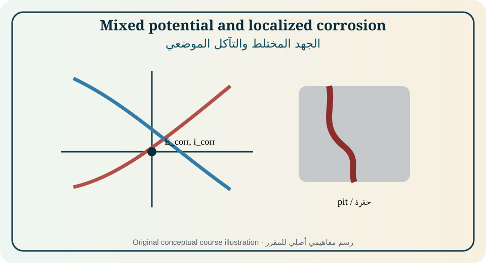
Figure 14. Original educational illustration created for this course from the relationships discussed in [1, Ch. 9, pp. 281–300; 2, Ch. 16, pp. 353–366; 10]. Conceptual, not measured data.الشكل 14. رسم تعليمي أصلي أُنشئ لهذا المقرر من العلاقات الواردة في [1, Ch. 9, pp. 281–300; 2, Ch. 16, pp. 353–366; 10]. مفاهيمي وليس بيانات مقاسة.
Each partial reaction has a polarization relation. The corrosion potential is their current-balance intersection. Increasing cathodic reactant supply can raise corrosion rate and shift potential; adding an inhibitor may change one or both branches. Potential shifts alone cannot classify mechanism or rate.
لكل تفاعل جزئي علاقة استقطاب. جهد التآكل نقطة توازن التيارات. قد يزيد إمداد المتفاعل الكاثودي معدل التآكل ويغير الجهد، وقد يغير المثبط فرعاً أو فرعين. لا تكفي إزاحات الجهد لتصنيف الآلية أو المعدل.
Corrosion current and rate
تيار ومعدل التآكل
Corrosion current is converted to penetration rate using electron number, molar mass, density, area, and current distribution. Tafel extrapolation and polarization resistance require activation-controlled behavior and appropriate slopes. Coupon mass loss is cumulative and average; electrochemical methods are faster but model-dependent.
يحول تيار التآكل إلى معدل اختراق باستخدام عدد الإلكترونات والكتلة المولية والكثافة والمساحة وتوزيع التيار. تتطلب استقراءات تافل ومقاومة الاستقطاب سلوكاً محكوماً بالتنشيط وميولاً مناسبة. يعطي فقد كتلة الكوبون متوسطاً تراكمياً، بينما الطرق الكهروكيميائية أسرع لكنها معتمدة على النموذج.
Passivity and active–passive transitions
التخميل والانتقال النشط–الخامل
A passive film forms when surface oxidation produces a protective solid that lowers dissolution current. Critical current, passive current, passive range, film growth, defect transport, and environment determine stability. More positive potential can eventually cause transpassive dissolution or oxygen evolution.
يتكون الغشاء الخامل عندما تنتج أكسدة السطح مادة صلبة واقية تخفض تيار الذوبان. تحدد التيارات الحرجة والخاملة ومجال التخميل ونمو الغشاء ونقل العيوب والبيئة الثبات. قد يؤدي الجهد الأكثر إيجابية في النهاية إلى ذوبان فوق خامل أو تطور الأكسجين.
Pitting and crevice corrosion
التآكل الحفري والشقي
Chloride and other aggressive species can destabilize passive films at defects. Inside a pit or crevice, hydrolysis acidifies the solution, electromigration enriches aggressive anions, oxygen is depleted, and ohmic drop sustains local chemistry. Initiation potential, repassivation potential, incubation, and maximum depth are distinct metrics.
يمكن للكلوريد وأنواع عدوانية أخرى زعزعة الأغشية عند العيوب. داخل الحفرة أو الشق يحمّض التحلل المائي المحلول وتثري الهجرة الأنيونات العدوانية وينفد الأكسجين ويحافظ الهبوط الأومي على الكيمياء المحلية. جهد البدء وجهد إعادة التخميل وزمن الحضانة والعمق الأقصى مقاييس مختلفة.
Galvanic corrosion and area ratio
التآكل الجلفاني ونسبة المساحة
Electrical connection between dissimilar electrochemical surfaces couples their polarization. A small anodic area connected to a large efficient cathode can suffer high local current density. Potential difference indicates tendency, but actual current depends on polarization, resistance, geometry, electrolyte, and area ratio.
يربط الاتصال الكهربائي بين سطوح مختلفة استقطابها. قد يتعرض أنود صغير متصل بكاثود كبير فعال لكثافة تيار محلية عالية. يدل فرق الجهد على الميل، لكن التيار الفعلي يعتمد على الاستقطاب والمقاومة والهندسة والإلكتروليت ونسبة المساحة.
Pourbaix diagrams
مخططات بوربيه
Potential–pH diagrams map thermodynamically stable aqueous species, solids, and immunity/passivity/corrosion domains for defined activities. They do not provide rate, film protectiveness, metastable pitting, kinetic barriers, local chemistry, or mechanical effects. Service interpretation must add kinetics and transport. [1]
ترسم مخططات الجهد–pH الأنواع المائية والمواد الصلبة المستقرة ديناميكياً ومجالات المناعة والتخميل والتآكل عند أنشطة محددة. لا تعطي السرعة أو حماية الغشاء أو الحفر شبه المستقر أو الحواجز الحركية أو الكيمياء المحلية أو التأثيرات الميكانيكية. يجب إضافة الحركية والنقل لتفسير الخدمة. [1]
Protection methods
طرق الحماية
Materials selection, design to avoid crevices and stagnant zones, coatings, cathodic protection, anodic protection, inhibitors, oxygen control, pH control, and environmental management address different parts of the corrosion system. Protection can fail through underprotection, overprotection, shielding, coating disbondment, depletion, or changed service conditions.
تعالج اختيار المواد والتصميم لتجنب الشقوق والمناطق الراكدة والطلاءات والحماية الكاثودية والأنودية والمثبطات وضبط الأكسجين وpH والبيئة أجزاء مختلفة من نظام التآكل. قد تفشل الحماية بسبب النقص أو الزيادة أو الحجب أو انفصال الطلاء أو الاستنزاف أو تغير الخدمة.
Monitoring and localized risk
المراقبة والمخاطر الموضعية
Coupons, electrical-resistance probes, LPR, EIS, potential mapping, chemistry, inspection, ultrasound, and pit-depth measurements answer different questions. A defensible monitoring plan combines leading indicators of control with lagging evidence of damage and defines action limits based on consequence.
تجيب الكوبونات ومجسات المقاومة وLPR وEIS وخرائط الجهد والكيمياء والفحص والموجات فوق الصوتية وعمق الحفر عن أسئلة مختلفة. تجمع خطة المراقبة القابلة للدفاع مؤشرات تحكم مبكرة وأدلة ضرر متأخرة وتحدد حدود الإجراء بحسب العواقب.
Equations, assumptions, and interpretation · المعادلات والافتراضات والتفسير
Equation · المعادلة
Purpose and limitation · الغرض والحدود
i_corr = B/R_p
Stern–Geary relation when B and polarization assumptions are valid.علاقة سترن–جيري عند صلاحية B وافتراضات الاستقطاب.
B = β_aβ_c/[2.303(β_a+β_c)]
Stern–Geary constant from anodic and cathodic Tafel slopes.ثابت سترن–جيري من ميلي تافل الأنودي والكاثودي.
CR = K i_corr EW/ρ
Generic penetration-rate conversion; K depends on units and EW is equivalent weight.تحويل عام لمعدل الاختراق؛ يعتمد K على الوحدات وEW الوزن المكافئ.
Σi_anodic + Σi_cathodic = 0 at E_corr
Mixed-potential current balance at open circuit.توازن التيارات عند جهد التآكل في الدائرة المفتوحة.
Fully worked example · مثال محلول بالكامل
If R_p=20.0 kΩ·cm² and B=26.0 mV, i_corr=1.30 μA·cm⁻². For iron dissolving as Fe²⁺, the equivalent weight is 55.845/2=27.92 g·equiv⁻¹. Using the appropriate unit conversion gives about 0.015 mm·y⁻¹. The estimate represents uniform corrosion and should not be used as a pit-growth rate.
إذا كانت R_p=20.0 kΩ·cm² وB=26.0 mV فإن i_corr=1.30 μA·cm⁻². للحديد الذائب Fe²⁺ يكون الوزن المكافئ 27.92 g·equiv⁻¹، ويعطي التحويل المناسب نحو 0.015 mm·y⁻¹. يمثل التقدير تآكلاً منتظماً ولا يستخدم كمعدل نمو حفرة.
Partially guided example · مثال موجه جزئياً
A stainless steel shows low passive current but pitting during a chloride scan. Identify measurements needed to distinguish metastable transients, stable pit initiation, repassivation, and general transpassive current.
يظهر فولاذ لا يصدأ تياراً خاملاً منخفضاً لكنه يحفر في مسح كلوريد. حدد القياسات اللازمة لتمييز العوابـر شبه المستقرة وبدء الحفر المستقر وإعادة التخميل والتيار فوق الخامل العام.
Independent exercises
Foundation: Calculate i_corr from R_p and B.
Standard: Construct an Evans diagram and predict oxygen-flow effects.
Advanced: Use Pourbaix, polarization, chloride chemistry, and pit-depth data to recommend protection for a creviced system.
متقدم: استخدم بوربيه والاستقطاب وكيمياء الكلوريد وعمق الحفر للتوصية بحماية نظام شقي.
Practical or analytical activity · نشاط عملي أو تحليلي
Laboratory: compare coupon mass loss, OCP, LPR, polarization, and surface inspection for carbon steel in aerated and deaerated solutions with and without chloride. Reconcile the different time scales and report maximum localized depth separately.
مختبر: قارن فقد كتلة الكوبون وOCP وLPR والاستقطاب وفحص السطح لفولاذ كربوني في محاليل مهواة ومنزوعة الهواء مع/دون كلوريد. وفق بين المقاييس الزمنية واعرض العمق الموضعي الأقصى منفصلاً.
Modern application and case study · تطبيق حديث ودراسة حالة
Case: A cathodically protected coated pipeline meets potential criterion but still fails locally. Evaluate shielding, disbonded coating, soil resistance, AC interference, reference placement, hydrogen effects, and inspection coverage.
حالة: يحقق خط أنابيب مطلي ومحمي كاثودياً معيار الجهد لكنه يفشل موضعياً. قيّم الحجب وانفصال الطلاء ومقاومة التربة وتداخل التيار المتناوب وموقع المرجع وتأثير الهيدروجين وتغطية الفحص.
Common misconception · مفهوم خاطئ شائع
A thermodynamic immunity or passivity region does not guarantee negligible practical corrosion rate or absence of localized attack.
لا يضمن مجال مناعة أو تخميل ديناميكي معدل تآكل عملياً مهملاً أو غياب الهجوم الموضعي.
Chapter summary and student takeaway · ملخص الوحدة وخلاصة الطالب
Corrosion control requires mixed-potential kinetics, film stability, local transport, environment, geometry, inspection, and consequence—not one potential or average rate.
تتطلب السيطرة على التآكل حركية الجهد المختلط وثبات الغشاء والنقل المحلي والبيئة والهندسة والفحص والعواقب، لا جهداً واحداً أو معدلاً متوسطاً.
Immediate mastery checkتحقق فوري من الإتقان
Principal sources · المصادر الرئيسة: [1, Ch. 9, pp. 281–300; 2, Ch. 16, pp. 353–366; 10]. Terminology follows the source context and IUPAC where cited. Models must be used only within their stated assumptions.تتبع المصطلحات سياق المصادر وIUPAC حيث ذُكر. لا تستخدم النماذج إلا ضمن افتراضاتها.
15
MODULE 15 · الوحدة 15
Electrochemical Energy, Solid-State Systems, Sensors, and Sustainable Technology
الطاقة الكهروكيميائية وأنظمة الحالة الصلبة والمستشعرات والتقنية المستدامة
13 h[1, Ch. 10, pp. 301–348; 2, Chs. 15 and 17; 6, Chs. 1, 3, 5, 9, 10, 12, and 13; 8–13]
Rationale
The final module integrates thermodynamics, kinetics, transport, interfaces, methods, and materials in batteries, supercapacitors, fuel cells, electrolyzers, solid electrolytes, sensors, and environmental systems.
Prerequisite knowledge
All previous modules.
مبرر الوحدة
تدمج الوحدة الختامية الديناميكا والحركية والنقل والواجهات والطرق والمواد في البطاريات والمكثفات وخلايا الوقود والمحللات والإلكتروليتات الصلبة والمستشعرات والأنظمة البيئية.
المعرفة السابقة
جميع الوحدات السابقة.
Module learning outcomes
Analyze voltage, capacity, energy, power, efficiency, and degradation in electrochemical devices.
Explain ionic/electronic defects and transport in solid electrolytes and mixed conductors.
Compare batteries, supercapacitors, fuel cells, electrolyzers, and electrochemical sensors.
Evaluate safety, resources, lifecycle, environmental performance, and responsible technology selection.
مخرجات تعلم الوحدة
تحليل الجهد والسعة والطاقة والقدرة والكفاءة والتدهور في الأجهزة.
شرح العيوب الأيونية والإلكترونية والنقل في الإلكتروليتات الصلبة والموصلات المختلطة.
مقارنة البطاريات والمكثفات وخلايا الوقود والمحللات والمستشعرات.
تقييم السلامة والموارد ودورة الحياة والأداء البيئي والاختيار المسؤول للتقنية.
Diagnostic pre-check · فحص تشخيصي
Distinguish energy density from power density and state one electrochemical or transport factor that limits each.
ميّز كثافة الطاقة من كثافة القدرة واذكر عاملاً كهروكيميائياً أو نقلياً يحد كل واحدة.
Electrochemical devices combine two or more interfaces, ionic and electronic transport, thermodynamics, kinetics, thermal behavior, mechanics, and control. A material with excellent half-cell performance may fail in a practical device because of balancing, current distribution, electrolyte depletion, contact loss, heat, safety, or manufacturing variation. [1,6,8–13]
تجمع الأجهزة الكهروكيميائية واجهتين أو أكثر ونقلاً أيونياً وإلكترونياً وديناميكا وحركية وسلوكاً حرارياً وميكانيكا وتحكماً. قد تفشل مادة ممتازة في نصف خلية داخل جهاز عملي بسبب الموازنة وتوزيع التيار واستنزاف الإلكتروليت وفقد التلامس والحرارة والسلامة وتباين التصنيع. [1,6,8–13]
Sustainable electrochemistry must evaluate more than operating efficiency. Feedstock origin, critical materials, embodied energy, toxicity, lifetime, repairability, recycling, emissions displacement, water use, and end-of-life determine whether a technology improves the whole system.
يجب أن تقيم الكيمياء الكهروكيميائية المستدامة أكثر من كفاءة التشغيل. يحدد مصدر المواد والمواد الحرجة والطاقة المجسدة والسمية والعمر والإصلاح والتدوير والإزاحة الانبعاثية واستخدام الماء ونهاية العمر ما إذا كانت التقنية تحسن النظام كله.
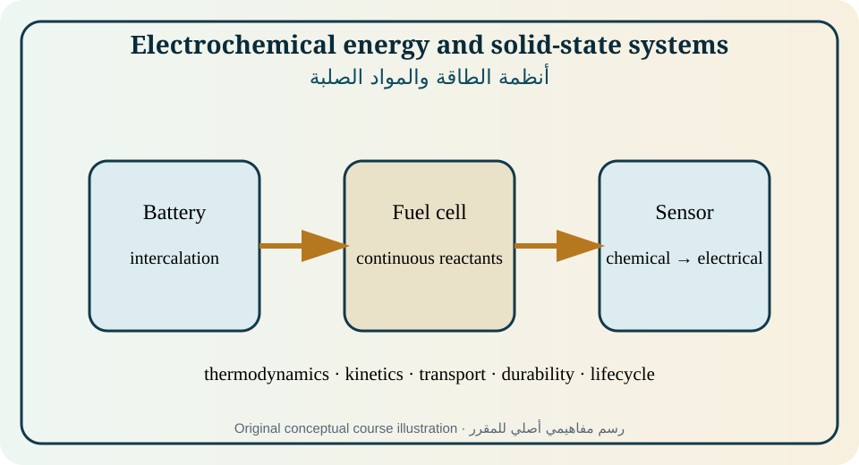
Figure 15. Original educational illustration created for this course from the relationships discussed in [1, Ch. 10, pp. 301–348; 2, Chs. 15 and 17; 6, Chs. 1, 3, 5, 9, 10, 12, and 13; 8–13]. Conceptual, not measured data.الشكل 15. رسم تعليمي أصلي أُنشئ لهذا المقرر من العلاقات الواردة في [1, Ch. 10, pp. 301–348; 2, Chs. 15 and 17; 6, Chs. 1, 3, 5, 9, 10, 12, and 13; 8–13]. مفاهيمي وليس بيانات مقاسة.
A battery stores chemical free energy in two electrodes and an electrolyte. Open-circuit voltage follows thermodynamics; operating voltage includes activation, ohmic, concentration, phase, and thermal effects. Capacity depends on cyclable inventory and stoichiometry, while usable energy depends on voltage profile, cutoff, rate, temperature, and degradation.
تخزن البطارية طاقة غيبس الكيميائية في قطبين وإلكتروليت. يتبع جهد الدائرة المفتوحة الديناميكا، ويشمل جهد التشغيل التنشيط والمقاومة والتركيز والطور والحرارة. تعتمد السعة على المخزون القابل للدوران والستوكيومترية، وتعتمد الطاقة القابلة للاستخدام على منحنى الجهد والحدود والمعدل والحرارة والتدهور.
Intercalation and solid-state electrodes
الإقحام وأقطاب الحالة الصلبة
Intercalation inserts ions into a host while electrons enter through the external circuit. Chemical potential and phase behavior shape the voltage curve; solid diffusion, charge transfer, electronic conduction, particle size, stress, and interface films shape rate and hysteresis. GITT, CV, EIS, diffraction, and microscopy provide complementary evidence. [6]
يدخل الإقحام الأيونات في بنية مضيفة بينما تدخل الإلكترونات عبر الدائرة الخارجية. يشكل الكمون الكيميائي والسلوك الطوري منحنى الجهد، وتشكل الانتشار الصلب وانتقال الشحنة والتوصيل الإلكتروني والحجم والإجهاد وأغشية الواجهة المعدل والتباطؤ. توفر GITT وCV وEIS والحيود والمجهر أدلة متكاملة. [6]
Solid electrolytes and defect chemistry
الإلكتروليتات الصلبة وكيمياء العيوب
Ionic conduction in solids requires mobile defects such as vacancies, interstitials, or mobile ions in connected pathways. Defect concentration and mobility depend on composition, dopants, temperature, oxygen activity, structure, grain boundaries, space-charge layers, and interfaces. Electronic leakage reduces electrolyte efficiency and may drive internal reactions. [6]
يتطلب التوصيل الأيوني في المواد الصلبة عيوباً متحركة كالفجوات والذرات البينية أو أيونات في مسارات متصلة. تعتمد كثافة العيوب وحركيتها على التركيب والمشوبات والحرارة ونشاط الأكسجين والبنية وحدود الحبيبات وطبقات الشحنة والواجهات. يقلل التسرب الإلكتروني كفاءة الإلكتروليت وقد يدفع تفاعلات داخلية. [6]
Supercapacitors
المكثفات الفائقة
Electrical double-layer capacitors store charge nonfaradaically at high-area interfaces, while pseudocapacitors involve fast surface or near-surface redox. Capacitance, voltage window, equivalent series resistance, pore accessibility, ion transport, leakage, and self-discharge govern energy and power. Reporting must distinguish device and electrode metrics.
تخزن مكثفات الطبقة المزدوجة الشحنة دون تفاعل فارادي عند واجهات عالية المساحة، بينما تشمل السعات الزائفة تفاعلات سريعة سطحية أو قريبة من السطح. تحكم السعة ونافذة الجهد والمقاومة المتسلسلة ووصول المسام ونقل الأيون والتسرب والتفريغ الذاتي الطاقة والقدرة. يجب التمييز بين مقاييس الجهاز والقطب.
Fuel cells and electrolyzers
خلايا الوقود والمحللات الكهربائية
Fuel cells convert reactants continuously to electricity; electrolyzers use electricity to produce chemicals such as hydrogen. Reversible voltage comes from ΔG, while thermoneutral voltage relates to ΔH. Activation, ohmic, mass-transfer, gas management, water balance, catalyst durability, crossover, and heat determine efficiency and lifetime.
تحول خلايا الوقود المتفاعلات المستمرة إلى كهرباء، وتستخدم المحللات الكهرباء لإنتاج مواد مثل الهيدروجين. يأتي الجهد العكوس من ΔG، ويرتبط الجهد المتعادل حرارياً بـΔH. تحدد خسائر التنشيط والمقاومة والنقل وإدارة الغاز والماء وثبات الحفاز والعبور والحرارة الكفاءة والعمر.
Electrocatalysis and selectivity
التحفيز الكهروكيميائي والانتقائية
An electrocatalyst changes rates and product distribution by altering adsorption energies, transition states, active sites, local environment, and transport. Activity must be normalized transparently; selectivity requires product quantification and charge balance. Stability under operating potential, current, impurities, and cycling is part of catalytic performance.
يغير الحفاز الكهروكيميائي السرعات وتوزيع النواتج بتعديل طاقات الامتزاز والحالات الانتقالية والمواقع والبيئة المحلية والنقل. يجب تطبيع النشاط بشفافية، وتتطلب الانتقائية قياس النواتج وموازنة الشحنة. يعد الثبات تحت الجهد والتيار والشوائب والدورات جزءاً من الأداء.
Electrochemical sensors and biointerfaces
المستشعرات الكهروكيميائية والواجهات الحيوية
Potentiometric, amperometric, conductometric, impedimetric, and transistor-coupled sensors translate chemical or biological interactions into electrical signals. Selectivity, calibration, drift, fouling, biocompatibility, sterilization, reference stability, and data interpretation determine real performance beyond laboratory sensitivity. [2,6]
تحول المستشعرات الجهدية والأمبيرية والتوصيلية والممانعية والمقترنة بالترانزستور التآثرات الكيميائية أو الحيوية إلى إشارات كهربائية. تحدد الانتقائية والمعايرة والانجراف والتلوث والتوافق الحيوي والتعقيم وثبات المرجع وتفسير البيانات الأداء الحقيقي بعد الحساسية المختبرية. [2,6]
Environmental electrochemistry and responsible design
الكيمياء الكهروكيميائية البيئية والتصميم المسؤول
Electrocoagulation, electrodialysis, electrooxidation, electroreduction, resource recovery, disinfection, and sensing can treat water or recover materials. Performance must include current efficiency, specific energy, electrode consumption, byproducts, salinity, pH, mass transfer, maintenance, and waste. Responsible design compares electrochemical treatment with non-electrochemical alternatives on a functional basis.
يمكن للتخثير والتحليل الغشائي والأكسدة والاختزال والاسترجاع والتطهير والاستشعار معالجة الماء أو استرداد المواد. يجب أن يشمل الأداء كفاءة التيار والطاقة النوعية واستهلاك القطب والنواتج الجانبية والملوحة وpH والنقل والصيانة والنفايات. يقارن التصميم المسؤول المعالجة الكهروكيميائية بالبدائل على أساس وظيفي.
Equations, assumptions, and interpretation · المعادلات والافتراضات والتفسير
Equation · المعادلة
Purpose and limitation · الغرض والحدود
Q_th = nF N_active
Theoretical charge from moles of active material N_active.الشحنة النظرية من مولات المادة النشطة.
C_spec = nF/(3.6M)
Theoretical specific capacity in mAh·g⁻¹ for molar mass M in g·mol⁻¹.السعة النوعية النظرية mAh·g⁻¹ لكتلة مولية M.
E_device = ∫V dQ
Electrical energy delivered or consumed over the operating path.الطاقة الكهربائية المسلمة أو المستهلكة عبر مسار التشغيل.
E_rev = −ΔG/(nF); E_th = ΔH/(nF)
Reversible and thermoneutral voltage magnitudes for electrolysis/fuel-cell reaction conventions.مقدارا الجهد العكوس والمتعادل حرارياً وفق اصطلاح التفاعل.
E_cap = ½CV²
Energy stored in an ideal capacitor.الطاقة المخزنة في مكثف مثالي.
σT = σ₀ exp(−E_a/RT)
Common Arrhenius representation for ionic conductivity; model form must be verified.تمثيل أرهينيوس شائع للتوصيلية الأيونية مع ضرورة التحقق من الصيغة.
Fully worked example · مثال محلول بالكامل
For LiFePO₄, taking one Li/electron per formula unit and M≈157.76 g·mol⁻¹, theoretical capacity is F/(3.6M)=169.9 mAh·g⁻¹. A practical electrode delivering 150 mAh·g⁻¹ at an average 3.3 V provides about 495 Wh·kg⁻¹ of active material, not of the full cell; inactive components and voltage losses lower device-level energy.
لـLiFePO₄ مع ليثيوم/إلكترون واحد وM≈157.76 g·mol⁻¹ تكون السعة النظرية F/(3.6M)=169.9 mAh·g⁻¹. قطب عملي يعطي 150 mAh·g⁻¹ عند متوسط 3.3 V يوفر نحو 495 Wh·kg⁻¹ من المادة النشطة لا من الخلية الكاملة؛ تخفض المكونات غير النشطة وخسائر الجهد طاقة الجهاز.
Partially guided example · مثال موجه جزئياً
Compare a battery and supercapacitor sized for the same 100 Wh load. Use supplied specific energy, specific power, efficiency, cycle life, and self-discharge data to justify a hybrid or single-technology design.
قارن بطارية ومكثفاً فائقاً لحمل 100 Wh نفسه باستخدام بيانات الطاقة والقدرة والكفاءة والعمر والتفريغ الذاتي، وبرر تصميماً هجيناً أو تقنية واحدة.
Independent exercises
Foundation: Calculate theoretical specific capacity from n and M.
Standard: Determine fuel-cell reversible efficiency from ΔG and ΔH and identify practical loss terms.
Advanced: Build a multi-criteria technology selection matrix including performance, safety, resources, lifecycle, and uncertainty.
متقدم: أنشئ مصفوفة اختيار متعددة المعايير تشمل الأداء والسلامة والموارد ودورة الحياة وعدم اليقين.
Practical or analytical activity · نشاط عملي أو تحليلي
Capstone laboratory/design: characterize an electrochemical storage or conversion device with OCV, charge/discharge, coulombic and energy efficiency, pulse resistance, CV or EIS, temperature, and post-test inspection. Produce a bilingual technical recommendation with raw data, uncertainty, safety, and lifecycle limitations.
مختبر/تصميم ختامي: ميّز جهاز تخزين أو تحويل بقياسات OCV والشحن/التفريغ والكفاءة الكولومية والطاقة ومقاومة النبضة وCV أو EIS والحرارة والفحص اللاحق. قدم توصية تقنية ثنائية اللغة مع البيانات الخام وعدم اليقين والسلامة وقيود دورة الحياة.
Modern application and case study · تطبيق حديث ودراسة حالة
Case: Select an electrochemical system for remote solar storage, industrial hydrogen production, implant sensing, or brine treatment. Match duty cycle, environment, maintenance, safety, materials availability, and end-of-life rather than selecting by one headline metric.
حالة: اختر نظاماً للتخزين الشمسي البعيد أو إنتاج الهيدروجين الصناعي أو استشعار زرعة أو معالجة محلول ملحي. طابق دورة العمل والبيئة والصيانة والسلامة وتوفر المواد ونهاية العمر بدلاً من الاختيار بمقياس واحد.
Common misconception · مفهوم خاطئ شائع
High theoretical capacity or reversible efficiency does not equal high practical device energy, power, lifetime, safety, or sustainability.
لا تساوي السعة النظرية أو الكفاءة العكوسة العالية طاقة أو قدرة أو عمراً أو سلامة أو استدامة عملية عالية.
Chapter summary and student takeaway · ملخص الوحدة وخلاصة الطالب
Modern electrochemical technology is a systems problem: thermodynamics sets limits, kinetics and transport set rate, materials and interfaces set durability, and responsible design sets real value.
التقنية الكهروكيميائية الحديثة مسألة نظم: تحدد الديناميكا الحدود، والحركية والنقل السرعة، والمواد والواجهات المتانة، والتصميم المسؤول القيمة الفعلية.
Immediate mastery checkتحقق فوري من الإتقان
Principal sources · المصادر الرئيسة: [1, Ch. 10, pp. 301–348; 2, Chs. 15 and 17; 6, Chs. 1, 3, 5, 9, 10, 12, and 13; 8–13]. Terminology follows the source context and IUPAC where cited. Models must be used only within their stated assumptions.تتبع المصطلحات سياق المصادر وIUPAC حيث ذُكر. لا تستخدم النماذج إلا ضمن افتراضاتها.
INTERACTIVE LEARNING LAB · مختبر تعلم تفاعلي
Equation explorers and data reasoning · مستكشفات المعادلات والبيانات
All generated curves are equation-based educational simulations, not experimental measurements. Change one parameter at a time, predict the result, calculate, and then explain the physical reason and limits.
كل المنحنيات المولدة محاكاة تعليمية قائمة على معادلات وليست قياسات تجريبية. غير معلمة واحدة وتنبأ ثم احسب واشرح السبب الفيزيائي والحدود.
WEEKLY TEACHING PLAN · الخطة الأسبوعية
Fifteen-week sequence · تسلسل خمسة عشر أسبوعاً
Week
Session · الجلسة
Module
Preparation, activity, and milestone · التحضير والنشاط
1
Electrochemical language and Faraday balancesلغة الكيمياء الكهروكيميائية وموازين فاراداي
M1
Diagnostic redox and stoichiometry; activity-series simulation.تشخيص الأكسدة والاختزال والحسابات؛ محاكاة سلسلة النشاط.
2
Solvation, activities, and ionic equilibriaالإذابة والأنشطة والاتزانات الأيونية
M2
Speciation workshop and ionic-strength calculation.ورشة التوزيع النوعي وحساب القوة الأيونية.
3
Conductivity, migration, diffusion, and fluxالتوصيلية والهجرة والانتشار والفيض
M3
Conductivity laboratory and Nernst–Planck flux map.مختبر التوصيلية وخريطة فيض نرنست–بلانك.
4
Electrode potentials and cell thermodynamicsجهود الأقطاب وديناميكا الخلية
M4
Concentration-cell laboratory; problem set 1.مختبر خلية التركيز؛ مجموعة مسائل 1.
5
Reference electrodes, potentiometry, and sensorsالأقطاب المرجعية والقياس الجهدي والمستشعرات
M5
Reference-electrode calibration and pH/ion-selective measurement.معايرة المرجع وقياس pH/القطب الانتقائي.
6
Double layer, electrocapillarity, and adsorptionالطبقة المزدوجة والكهرباء الشعرية والامتزاز
M6
Capacitance/potential interpretation workshop.ورشة تفسير السعة والجهد.
7
Electron-transfer kineticsحركية انتقال الإلكترون
M7
Polarization/Tafel laboratory; problem set 2.مختبر الاستقطاب/تافل؛ مجموعة مسائل 2.
8
Mass transport and hydrodynamic electrodesنقل الكتلة والأقطاب الهيدروديناميكية
M8
RDE/limiting-current laboratory and midterm.مختبر RDE/التيار الحدي واختبار منتصف الفصل.
9
Experimental design and instrumentationتصميم التجربة والأجهزة
M9
Potentiostat dummy-cell verification and uncertainty budget.التحقق بدائرة وهمية وميزانية عدم اليقين.
10
Steady-state, step, pulse, and charge methodsطرق الحالة المستقرة والخطوة والنبضة والشحنة
Cyclic voltammetry and mechanismsالفولتامترية الدورية والآليات
M11
CV laboratory; problem set 3.مختبر CV؛ مجموعة مسائل 3.
12
AC methods, EIS, and coupled probesطرق التيار المتردد وEIS والمجسات المقترنة
M12
EIS laboratory and data-analysis project.مختبر EIS ومشروع تحليل البيانات.
13
Electrodeposition and electrocrystallizationالترسيب والتبلور الكهروكيميائي
M13
Electrodeposition laboratory and current-distribution case.مختبر الترسيب وحالة توزيع التيار.
14
Corrosion, passivity, and localized attackالتآكل والتخميل والهجوم الموضعي
M14
Corrosion monitoring and polarization/EIS comparison.مراقبة التآكل ومقارنة الاستقطاب/EIS.
15
Energy, solid-state systems, sensors, and sustainabilityالطاقة والمواد الصلبة والمستشعرات والاستدامة
M15
Device characterization; design defense; problem set 4.تمييز الجهاز؛ الدفاع عن التصميم؛ مجموعة مسائل 4.
PRACTICAL AND LABORATORY PROGRAMME · البرنامج العملي والمختبري
Ten evidence-generating activities · عشرة أنشطة مولدة للأدلة
Each laboratory submission must include purpose, background, apparatus, cell schematic, chemicals, risk assessment, variables, calibration, procedure, raw data, processing, uncertainty, results, interpretation, limitations, waste route, and references. Sample data must be labeled “Educational sample data.”
يجب أن يتضمن كل تقرير الغرض والخلفية والأجهزة ومخطط الخلية والمواد وتقييم المخاطر والمتغيرات والمعايرة والإجراء والبيانات الخام والمعالجة وعدم اليقين والنتائج والتفسير والقيود ومسار النفايات والمراجع. تسمى البيانات النموذجية «بيانات تعليمية نموذجية».
L1
Metal/metal-ion activity and voltaic cells
نشاط معدن/أيون معدن والخلايا الفولتية
Rank redox couples from displacement observations; assemble a salt-bridge cell; identify half-reactions, electron flow, ion migration, voltage, and uncertainty.
رتب الأزواج من ملاحظات الإحلال؛ ركب خلية بجسر ملحي؛ حدد أنصاف التفاعلات واتجاه الإلكترونات وهجرة الأيونات والجهد وعدم اليقين.
Safety and waste · السلامة والنفايات
Safety glasses; avoid skin contact with metal salts; collect heavy-metal waste.
Measure cell voltage versus logarithm of activity ratio, compare slope and intercept with theory, and discuss junction potentials and activity coefficients.
قس جهد الخلية مقابل لوغاريتم نسبة النشاط وقارن الميل والاعتراض بالنظرية وناقش جهد الوصلة ومعاملات النشاط.
Safety and waste · السلامة والنفايات
Use compatible salts; prevent cross-contamination; record temperature.
استخدم أملاحاً متوافقة؛ امنع التلوث؛ سجل الحرارة.
Principal sources: [1,3,5]
L3
Electrolyte conductivity and temperature
توصيلية الإلكتروليت والحرارة
Calibrate a conductivity cell, determine cell constant, measure concentration and temperature trends, and distinguish conductivity from molar conductivity.
عاير خلية التوصيلية وحدد ثابت الخلية وقس اتجاهات التركيز والحرارة وميز التوصيلية عن التوصيلية المولية.
Safety and waste · السلامة والنفايات
Low-voltage AC; temperature control; rinse electrodes.
تيار متردد منخفض؛ ضبط الحرارة؛ اشطف الأقطاب.
Principal sources: [1,2]
L4
Reference electrodes and potentiometric calibration
الأقطاب المرجعية والمعايرة الجهدية
Check reference stability, calibrate a pH or ion-selective electrode, construct a calibration curve, estimate detection range, drift, hysteresis, and matrix effects.
افحص ثبات المرجع وعاير قطب pH أو انتقائياً وأنشئ منحنى معايرة وقدر مجال الكشف والانجراف والهسترة وتأثير المصفوفة.
Safety and waste · السلامة والنفايات
Handle reference filling solution and standards; avoid glass-electrode damage.
تعامل مع محلول المرجع والمعايير واحم القطب الزجاجي.
Principal sources: [1–3]
L5
Polarization curves and Tafel analysis
منحنيات الاستقطاب وتحليل تافل
Acquire low-rate polarization under controlled convection, correct uncompensated resistance where justified, identify kinetic and transport regions, and estimate Tafel slopes with uncertainty.
سجل الاستقطاب ببطء وتحت حمل مضبوط وصحح المقاومة عند التبرير وحدد مناطق الحركية والنقل وقدر ميول تافل وعدم اليقين.
Safety and waste · السلامة والنفايات
Gas evolution and corrosive electrolytes may occur; use shielding and ventilation.
قد يتطور الغاز وتستخدم محاليل آكلة؛ استخدم الحواجز والتهوية.
Principal sources: [1,2,4]
L6
Rotating-disc electrode and limiting current
القطب القرصي الدوار والتيار الحدي
Measure limiting current versus square root of rotation rate, test Levich behavior, estimate a transport parameter, and identify deviations from laminar assumptions.
قس التيار الحدي مقابل جذر سرعة الدوران واختبر سلوك ليفيتش وقدر معلمة نقل وحدد الانحرافات عن الجريان الصفحي.
ثبت الجزء الدوار وأبعد الشعر والملابس وافحص المحاذاة.
Principal sources: [1,2,4]
L7
Chronoamperometry and chronocoulometry
الكرونوأمبيرومترية والكرونوكولومترية
Apply potential steps, compare current with Cottrell scaling, separate double-layer and Faradaic charge, and diagnose finite-volume or convection effects.
طبق خطوات جهد وقارن التيار بمقياس كوترل وافصل شحنة الطبقة المزدوجة والفارادية وشخص الحجم المحدود أو الحمل.
Safety and waste · السلامة والنفايات
Verify potential limits before stepping; avoid gas evolution and electrode damage.
تحقق من حدود الجهد قبل الخطوة وتجنب الغاز وتلف القطب.
Principal sources: [2,4]
L8
Cyclic voltammetry of a redox couple
الفولتامترية الدورية لزوج أكسدة واختزال
Record CVs at several scan rates; evaluate peak positions, currents, charge, reversibility, adsorption, uncompensated resistance, and background subtraction.
سجل CV عند سرعات متعددة وقيّم مواضع القمم والتيارات والشحنة والعكوسية والامتزاز والمقاومة وطرح الخلفية.
Safety and waste · السلامة والنفايات
Degas where needed; use compatible supporting electrolyte; retain raw files.
أزل الأكسجين عند الحاجة واستخدم إلكتروليتاً داعماً مناسباً واحفظ الخام.
Principal sources: [1,2,4]
L9
Electrochemical impedance spectroscopy
مطيافية الممانعة الكهروكيميائية
Verify instrument response with a dummy cell, test amplitude and stationarity, measure an electrochemical spectrum, plot Nyquist/Bode data, fit competing models, and inspect residuals.
تحقق من الجهاز بدائرة وهمية واختبر السعة والثبات وقس طيفاً وارسم نايكويست/بودي وملائم نماذج متنافسة وافحص البواقي.
Safety and waste · السلامة والنفايات
Respect instrument current/voltage limits; shield leads; document frequency order and wait times.
احترم حدود الجهاز واحجب الأسلاك ووثق ترتيب التردد وأزمنة الانتظار.
Principal sources: [1,2,4]
L10
Electrodeposition or corrosion/device capstone
ترسيب أو تآكل/جهاز ختامي
Select one: quantify deposition efficiency and morphology; characterize corrosion/passivity; or evaluate a battery/supercapacitor. Integrate at least three methods and defend an evidence-bounded conclusion.
اختر: قياس كفاءة ومورفولوجيا الترسيب؛ أو تمييز التآكل/التخميل؛ أو تقييم بطارية/مكثف. ادمج ثلاث طرق على الأقل وادافع عن نتيجة محدودة بالدليل.
Assessment totaling exactly 100% · تقييم مجموعه 100%
Assessment · التقييم
Weight
Description · الوصف
ILOs
Timing
Module quizzesاختبارات الوحدات
10%
Individual immediate-feedback quizzes after every module.اختبارات فردية بتغذية راجعة فورية بعد كل وحدة.
ILO1–ILO10
Weeks 1–15
Quantitative problem setsمجموعات المسائل الكمية
15%
Four cumulative sets covering equilibrium, transport, kinetics, transients, voltammetry, and devices.أربع مجموعات تراكمية تغطي الاتزان والنقل والحركية والعوابـر والفولتامترية والأجهزة.
ILO1–ILO4, ILO9
Weeks 4, 7, 11, 15
Laboratory portfolioملف المختبر
20%
Ten experiments with preparation, raw data, uncertainty, interpretation, safety, and bilingual reporting.عشر تجارب تشمل التحضير والبيانات الخام وعدم اليقين والتفسير والسلامة والتقرير الثنائي.
Electrochemical data-analysis projectمشروع تحليل البيانات الكهروكيميائية
15%
Reproducible analysis of CV, transient, polarization, or EIS data with model comparison and uncertainty.تحليل قابل للتكرار لبيانات CV أو العوابـر أو الاستقطاب أو EIS مع مقارنة النماذج وعدم اليقين.
ILO6–ILO10
Week 12
Technology and design projectمشروع التقنية والتصميم
10%
Team design and defense of an electrochemical process or device using performance, safety, sustainability, and lifecycle criteria.تصميم جماعي والدفاع عن عملية أو جهاز باستخدام معايير الأداء والسلامة والاستدامة ودورة الحياة.
ILO8, ILO11–ILO12
Week 15
Final examinationالاختبار النهائي
15%
Cumulative quantitative, experimental-design, data-interpretation, and engineering-judgment examination.اختبار تراكمي في الحساب وتصميم التجربة وتفسير البيانات والحكم الهندسي.
ILO1–ILO12
Examination period
Common analytic rubric · معيار تحليلي مشترك
Criterion
Excellent 85–100
Competent 65–84
Developing 50–64
Insufficient <50
Scientific accuracy
Correct mechanism, equations, conventions, units, and scope.
Minor errors do not change conclusion.
Partial model use; important omissions.
Fundamental misconceptions or unsupported claims.
Evidence and data
Raw data, metadata, calibration, uncertainty, and independent checks integrated.
Most evidence present; limited uncertainty depth.
Processed values dominate; weak traceability.
Missing or fabricated evidence.
Analysis and judgment
Alternatives, assumptions, residuals, and limitations compared; conclusion bounded.
Risk, waste, lifecycle, integrity, and AI assistance documented responsibly.
Requirements substantially addressed.
Generic or incomplete treatment.
Unsafe, unethical, or undeclared practices.
Academic integrity and responsible AI · النزاهة والذكاء الاصطناعي المسؤول
Students retain raw data, calculations, version history, and cited sources. AI may support language editing, code debugging, or brainstorming only when permitted and declared; it may not invent data, observations, sources, safety approval, or authorship. Every submission remains the student’s responsibility.
يحتفظ الطلاب بالبيانات الخام والحسابات وسجل الإصدارات والمصادر. يجوز استخدام الذكاء الاصطناعي للتحرير أو تصحيح الشفرة أو العصف عندما يسمح ويصرح به، ولا يجوز له اختلاق البيانات أو الملاحظات أو المصادر أو اعتماد السلامة أو التأليف. تبقى المسؤولية على الطالب.
EXAMINATION PREPARATION CENTRE · مركز الاستعداد للامتحان
Revision, command words, and representative questions · المراجعة وأفعال الأسئلة
Four-week revision cycle
Reconstruct formulae from principles and list assumptions.
Interpret one graph from each method before calculating.
Solve mixed equilibrium–kinetic–transport cases under time limits.
Complete a mock examination, mark with rubric, and target errors.
Representative mock questions · أسئلة تجريبية ممثلة
Question 1 — Cell thermodynamics and speciation · ديناميكا الخلية والتوزيع النوعي
Derive the cell voltage for a concentration cell using activities, identify the role of a junction potential, calculate at 298 K, and evaluate when concentration substitution is unacceptable.
Question 2 — Kinetics and transport · الحركية والنقل
Given polarization data at two rotation rates, estimate a kinetic current, construct a Tafel analysis, calculate an exchange current, and state uncertainties introduced by iR and surface change.
Question 3 — Transient and CV interpretation · تفسير العابر وCV
Compare chronoamperometry and cyclic-voltammetry data for the same couple. Determine whether diffusion, electron transfer, adsorption, or uncompensated resistance controls each observed feature.
Question 4 — Engineering design · التصميم الهندسي
Select and defend a corrosion-protection, electrodeposition, battery, fuel-cell, or water-treatment strategy. Include cell architecture, reactions, transport, monitoring, safety, lifecycle, and acceptance criteria.
Command words · أفعال الأسئلة
Calculate · احسبChoose the governing relationship, substitute with units, report significant figures, and interpret.
Derive · اشتقBegin from stated laws and assumptions; show transformations and validity.
Explain · اشرحLink mechanism, variables, equations, evidence, and limits—not a definition alone.
Evaluate · قيّمCompare evidence, alternatives, uncertainty, risk, and make a justified bounded judgment.
Electrode where oxidation occurs.القطب الذي تحدث عنده الأكسدة.
Cathode · الكاثود
Electrode where reduction occurs.القطب الذي يحدث عنده الاختزال.
Activity · النشاط
Dimensionless thermodynamic effective concentration relative to a standard state.تركيز فعال ديناميكي بلا أبعاد نسبة إلى حالة قياسية.
Electrode potential · جهد القطب
Potential difference associated with an electrode interface and specified reference convention.فرق جهد مرتبط بواجهة قطب واصطلاح مرجعي محدد.
Overpotential · فرط الجهد
Difference between operating and equilibrium electrode potential under a stated convention.الفرق بين جهد التشغيل والاتزان وفق اصطلاح محدد.
Exchange current · تيار التبادل
Equal forward and reverse partial current magnitude at equilibrium.مقدار التيارين الجزئيين الأمامي والعكسي المتساويين عند الاتزان.
Double layer · الطبقة المزدوجة
Interfacial charge-separation region at an electrode/electrolyte boundary.منطقة فصل الشحنة عند حد القطب/الإلكتروليت.
Limiting current · التيار الحدي
Current plateau set predominantly by reactant supply under specified hydrodynamics.هضبة تيار تحددها إمدادات المتفاعل تحت حمل محدد.
Working electrode · القطب العامل
Electrode at which the target interfacial process is controlled or measured.القطب الذي تضبط أو تقاس عنده العملية المستهدفة.
Reference electrode · القطب المرجعي
Stable potential reference ideally carrying negligible current.مرجع جهد ثابت يحمل تياراً مهملاً مثالياً.
Current efficiency · كفاءة التيار
Fraction of charge producing the desired electrochemical product.جزء الشحنة الذي ينتج المنتج المرغوب.
Passivity · التخميل
Low-dissolution state sustained by a protective interfacial film.حالة ذوبان منخفض يحافظ عليها غشاء واقٍ.
Intercalation · الإقحام
Topotactic insertion of mobile species into a host solid.إدخال نوع متحرك في مضيف صلب مع حفظ بنيوي نسبي.
Electrocatalysis · التحفيز الكهروكيميائي
Modification of electrochemical rate or selectivity by an electrode material or surface state.تعديل سرعة أو انتقائية التفاعل بمادة القطب أو حالته السطحية.
SOURCES, COVERAGE, AND BENCHMARKING · المصادر والتغطية والمقارنة
Numbered references · المراجع المرقمة
[1] Gamburg, Y. D. (2023). The Fundamentals of Electrochemistry. Cambridge Scholars Publishing. Primary textbook.
[2] Brett, C. M. A., & Brett, A. M. O. (1993). Electrochemistry: Principles, Methods, and Applications. Oxford University Press.
[3] Lefrou, C., Fabry, P., & Poignet, J.-C. (2012). Electrochemistry: The Basics, With Examples. Springer.
[4] Pletcher, D., Greff, R., Peat, R., Peter, L. M., & Robinson, J. (2010 reprint). Instrumental Methods in Electrochemistry. Woodhead Publishing.
[5] Electrochemistry Laboratory Manual: Simulation & Experimental. Ain Shams University, Faculty of Education, Chemistry Department. Uploaded teaching material.
[6] Kharton, V. V. (Ed.). (2009). Solid State Electrochemistry I: Fundamentals, Materials and Their Applications. Wiley-VCH.
[7] International Union of Pure and Applied Chemistry. (2025). Compendium of Chemical Terminology (Gold Book), Version 5.0.0; electrochemical terminology based on IUPAC Recommendations 2019.
[8] Massachusetts Institute of Technology OpenCourseWare. (2014). 10.626 Electrochemical Energy Systems: Syllabus and learning resources.
[9] Stanford University Bulletin. (2026). CHEMENG432 Electrochemical Energy Conversion.
[10] The University of Queensland. (2024). MATE4302 Electrochemistry and Corrosion course profile.
[11] Universidade de São Paulo. (2026). QFL1544 Electrochemistry: Fundamental and Applied Concepts; official course information.
[12] University of Cambridge, Department of Chemical Engineering and Biotechnology. Electrochemistry teaching notes and course introduction.
[13] The Electrochemical Society. (2025). Fundamentals of Electrochemistry short-course descriptions and education resources.
[14] General Master Prompt — Creating a Complete Bilingual University Course Website. Uploaded course-design specification.
International benchmarking summary · ملخص المقارنة الدولية
The website follows the uploaded primary sequence and adopts common features visible in official university and professional offerings: rigorous equilibrium and kinetics, experimental methods, laboratories, electrochemical energy, corrosion, data analysis, and integrated design. Benchmarking informs breadth and assessment but does not replace the uploaded academic foundation.
يتبع الموقع تسلسل الكتاب الأساسي المرفق ويستفيد من سمات شائعة في المقررات الرسمية: الاتزان والحركية والطرق والمختبرات والطاقة والتآكل وتحليل البيانات والتصميم المتكامل. توجه المقارنة الاتساع والتقييم ولا تستبدل الأساس المرفق.
Institution
Region
Relevant scope
Practice adopted
Ref.
MIT OpenCourseWare
United States
Electrochemical energy systems: thermodynamics, kinetics, transport, batteries, fuel cells, and electrolysis.
Energy-system integration and quantitative problem solving.
[8]
Stanford University
United States
Graduate electrochemical energy conversion.
Advanced conversion-device design and materials emphasis.
[9]
University of Queensland
Australia
Electrochemistry and corrosion: electrolytes, interfaces, cells, fuel cells, photoelectrochemistry, electrolysis, supercapacitors, batteries, laboratory and exam.
Broad upper-level engineering structure with laboratory integration.
[10]
Universidade de São Paulo
Brazil
Fundamental and applied electrochemistry.
Balance of equilibrium, kinetics, methods, and applications.
[11]
University of Cambridge
United Kingdom
Electrochemistry teaching notes emphasizing cell thermodynamics, kinetics, mass transport, and applications.
Rigorous derivations and engineering interpretation.
[12]
The Electrochemical Society
International
Professional short courses in fundamentals, impedance, batteries, corrosion, and related methods.
Professional practice, experimental judgment, and continuing education.
Confirm administrative metadata, instructor, local curriculum outcomes, laboratory SOPs, chemicals, equipment limits, safety controls, waste routes, accessibility accommodations, assessment regulations, software validation, and any future reproduced visual before release.
يجب تأكيد البيانات والمدرس ومخرجات البرنامج وإجراءات المختبر والمواد وحدود الأجهزة وضوابط السلامة ومسارات النفايات وترتيبات الإتاحة ولوائح التقييم والتحقق البرمجي وأي أصل بصري يعاد استخدامه قبل النشر.